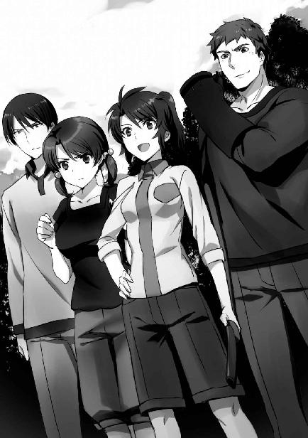

| 魔法科高校の劣等生(23) 孤立編 (電撃文庫) | |
| 佐島 勤 | |
| KADOKAWA / アスキー・メディアワークス (2017) | |
本書（電子版）に掲載されているコンテンツ（ソフトウェア／プログラム／データ／情報を含む）の著作権およびその他の権利は、すべて株式会社ＫＡＤＯＫＡＷＡおよび正当な権利を有する第三者に帰属しています。
法律の定めがある場合または権利者の明示的な承諾がある場合を除き、これらのコンテンツを複製・転載、改変・編集、翻案・翻訳、放送・出版、公衆送信（送信可能化を含む）・再配信、販売・頒布、貸与等に使用することはできません。


［１］
二〇九七年四月末。正確な日時は記録されていない。そもそもその会議は、公式記録に残せる類のものではなかった。
「南総収容所襲撃の顚末は、ただ今の遠山曹長の報告書でご覧いただいたとおりです」
遠山つかさの直属の上司である犬飼課長が部下の報告を読み上げて着席した。
「襲撃犯の正体は確認できていないのですね？」
「はい。確認はできていません」
出席者の一人から投げ掛けられた質問に、犬飼は即、同意する。
「ですが、状況から見て襲撃者が何者であるかは明らかです。四葉家の司波達也以外に考えられません」
「そうですね」
「確かに」
今度は、犬飼の断定に賛同の声が上がった。逆にそれを、性急だとたしなめる声は無い。
ここに集う国防陸軍情報部の幹部たちは達也を南総の秘密収容所、ＵＳＮＡの非合法工作員を監禁していた施設を襲撃した犯人と決めつけた。
このケースでは事実だが、たとえ冤罪であっても彼らは気にしなかっただろう。
幾ら情報部でも、普通ならばこのような乱暴な結論の出し方はしない。形ばかりであろうと、証拠と証言を揃える。
だがこの会議は、国防陸軍情報部の秘密幹部会議。必要を認められた場合だけに開催される、非公式の集まりだ。公式には開かれていない会議だから、証拠は必要とされない。特定の個人や団体が、国家にとって有害かどうか、それを彼らが主観的に判断する為だけの場であった。
「司波達也は、危険人物として監視を強化する必要があると考えます」
「すぐに排除しなくても良いのか？」
犬飼の提案に、より厳しい対応を問う声が上がる。
「思想的には危険分子ですが、得難い戦力であることは間違いありません。背後に四葉家が控えていることを抜きにしても、十山の魔法を凌駕する攻撃力は魅力的です」
犬飼の発言に続いて、特務一課の課長が立ち上がった。特務課は秘密性が高い国防軍情報部の中でも存在しないこととされている部署であり、その組織形態も一課だけのこともあれば十三課まで存在していた時期もあるという、不定形の組織だ。
「司波達也についてはもう一つ、留意すべき未確認情報があります」
「ほう。何かね、恩田課長」
副部長がその発言に興味を示し、先を促す。なおこの席に部長は出席していない。ここにいる副部長も、対外的には公表されていない人物だった。
「司波達也が属する四葉家と第一〇一旅団が協力関係にあるのは、既に皆様ご存じのことと思いますが」
恩田の言葉に、テーブルのそこかしこで頷く姿があった。
「それで？」
副部長も態度で知っていると示しながら、続きを促す。
「司波達也は第一〇一旅団の一員として、一昨年の十月末、鎮海軍港一帯を焼き払った魔法師である可能性があります」
「......『灼熱のハロウィン』か......」
存在が秘された副部長は、国防陸軍の暗部を取り仕切る存在だ。その彼も、さすがにこのセリフには平静でいられなかった。
彼だけではない。会議室が一瞬以上の時間、重苦しい沈黙に包まれた。
「......あの戦略級魔法師の正体が、司波達也だというのか？」
改めて恩田に問い掛けたのは、犬飼だ。彼は非合法活動を日常とする日陰者だが、国防戦力としての戦略級魔法師の重要性は良く理解している。もし司波達也が『灼熱のハロウィン』を引き起こした魔法師だとしたら、そう簡単に処分できないと考えたのだった。
「未確認だ。だが仮に司波達也が戦略級魔法師だったとしても、危険思想を抱えている者を放置することはできない」
恩田はただ一人、驚愕に囚われていない顔で同格の課長である犬飼の言葉に応える。
「いや、個人で過剰な力を持っているなら、それだからこそ見過ごしにはできない。私はそう考えます」
軍人的な言い回しを意識的に排除した言葉で、恩田は超法規的組織の一員らしい意見を主張した。
その揺るがないスタンスに感化されたのか、副部長が落ち着きを取り戻す。
「......君の言うとおりだ。司波達也については、再教育方針で対処することにしよう」
「賛成です」
「それが妥当だと思います」
副部長の決定に、会議のメンバーから次々と賛同の声が上がった。
◇ ◇ ◇
四月末、北海道に出動していた風間たちが第一〇一旅団本部に帰還した。
「風間以下百九十五名、ただ今、帰投しました」
「全員無事に戻ってくれて何よりです」
風間が指揮する独立魔装大隊は独立した作戦単位として「大隊」と位置づけられているが、人数面では二個中隊の規模しかない。今回出動したのはその約半数だ。風間が申告した帰投人数は、今回出動した頭数に一致する。つまり、犠牲者は出なかったということだ。
風間中佐の帰投報告に、旅団長の佐伯少将が少しホッとした表情で答える。戦闘に兵員の損耗はつきものとはいえ、ゼロに越したことはない。
特に独立魔装大隊は魔法兵器、魔法戦術の実験部隊という性質上、魔法師としても特殊な能力の持ち主が多い。道徳的価値観はともかく、軍事的人材としての価値は、他の部隊よりも高い士卒が揃っている。状況は日報で知っていたとはいえ、実際に全員の帰投を確認したことで佐伯の安堵もひとしおだったのだろう。
「中佐、出動した隊員には三日間の特別休暇を与えます。外出も許可しましょう」
「ありがとうございます。皆、喜びます」
風間が「休め」の姿勢のまま、微かに口元を緩める。
佐伯は「うむ」とでも言うように小さく頷き、瞼を閉じて小さく息を吐いた。
目を開き、風間に向けられた佐伯の顔は、国防軍指折りの謀将のものになっていた。
風間の表情も引き締まる。
「昨日、恩田少佐から連絡がありました」
「恩田少佐......。何者ですか？」
風間は組織人のたしなみとして、軍の人事ニュースには隈無く目を通すようにしている。全データを暗記しているとは言えないが、佐官以上の高級士官であれば記憶している自信がある。そして彼は「恩田少佐」の名前に憶えが無かった。
「恩田少佐は特務の課長です」
「情報部の特務ですか......」
佐伯は情報部に対して直接の指揮命令権を持たない。情報部の課長には、佐伯に対する報告義務は無い。
つまりその「連絡」というのは私的なつながりによるものであり、恩田少佐は佐伯少将の情報源の一つ。風間はそのように解釈した。
多分、恩田の方も、佐伯を情報源にしているのだろう、とも。
「それで、恩田少佐は何を報せてくれたのですか？」
風間の質問に、佐伯はもったいぶることなく答えた。
「大黒特尉が情報部の粛清対象リストに載りました。情報部の秘密収容所を襲撃した廉です」
「......特尉を消そうというのですか？」
声を上げこそしなかったが、風間の声には「信じられない」という感情が込められていた。
「処刑ではありません。捕らえて教育することに決めたそうです」
「愚かなことです」
風間の言い方はまるで、情報部ではなく佐伯が愚行を企てているかのようだった。
「確かに。教育、いえ、この場で言葉を取り繕う必要はありませんね。洗脳は魔法技能を高い確率で損なうというのに」
「閣下、そうではありません」
風間が言おうとしていることが分からず、佐伯が目で続きを促す。
「特尉を暗殺することは、もしかしたら可能かもしれません。ですが、捕らえるなど絶対に不可能です。情報部が壊滅するだけならともかく、最悪の場合、東京が火の海に沈みます」
佐伯が目を細め、風間に厳しい視線を注いだ。まるで風間自身が大規模破壊工作を企んでいると、疑っているかのように。
「......特尉がそこまでやると？」
「小官は、情報部が特尉を危険分子と認定したこと自体は正しいと考えます。彼はこの上ないエゴイストだ。特尉が国家や市民の為に、自分や身内を犠牲にすることはあり得ません。彼は、軍人には最も向いていない種類の人間でしょう」
「能力的には申し分ありませんが、性格的には中佐の言うとおりでしょうね」
達也に公僕の精神が欠如していることについては、佐伯も異存ないようだ。
「しかし、危険度の認識が甘すぎる。特尉はマテリアル・バーストを使わなくても、一晩あれば一都市を破壊し尽くせるでしょう」
「大黒特尉を随分高く評価しているのですね」
「もし現実世界に物語やゲームのようなラスボスがいるとすれば、それは彼でしょうね」
「ラスボスですか。では、物語をハッピーエンドで終わらせる勇者は何処にいますか？」
「我々の前にはまだ、登場していません。だから、せめて勇者が現れるまでは彼を刺激すべきではないのですが」
佐伯と風間が、同時に噴き出した。二人とも同じような、自嘲の笑いだ。ラスボスだの勇者だのと、大真面目に論じ合っていた自分がおかしかったのだろう。
「貴官の意見は、恩田少佐を通じて情報部に伝えておきましょう。どの程度意味があるのか、分かりませんが。......ご苦労様でした。中佐、下がってよろしい」
「ハッ」
風間は佐伯に敬礼して、彼女の執務室を後にした。
◇ ◇ ◇
五月二日の放課後。
自分が知り合いから大魔王扱いされたことなど知らず、達也は日常に復帰していた。
彼だけではない。
四月下旬に発生した詩奈の誘拐事件騒動は結局、連絡不足による誤解ということで片付けられ、一高内では既に過去の出来事になっている。同じ時期に深雪と水波が遭遇した襲撃事件は、二人が何事も無かった顔をしていたので他の生徒の関心を引くことは無かった。
いつもどおりの放課後、達也を含めた生徒会メンバーは、いつもどおり生徒会の業務に勤しんでいた。
昨日から生徒会では、通常の業務以外に九校戦の準備を始めている。今年の開催要項はまだ届いていないが、去年のように種目の変更があっても無駄にならない基礎的な準備から取り掛かっているのである。
達也は競技用ＣＡＤのカタログをチェックしていた。競技に使用するＣＡＤのスペックには制限がある。ハードウェアの性能を一定以内に抑えることが求められている。ソフトウェアには制限が無いから、ハードが同じレベルでもストレージの読み出し速度やＯＳの使い勝手は勝敗に影響する要因だ。
去年の種目変更のように、ＣＡＤのレギュレーションも変更になるかもしれない。だがあらかじめ情報を集めておくことは無駄にはならない。トーラス・シルバーとして自らＣＡＤの製作に関わっている達也の知識も、型遅れの機種まで網羅していない。生徒会の仕事とは言いつつ、達也は結構楽しんでいた。
「マスター」
そこへ、作業を中断する声が掛かる。
ピクシーがテレパシーではなく、音声で達也に話し掛けた。
「何だ？」
ディスプレイから目を離さず、達也が声だけで応える。
「重大な・ニュースが・入ってきました」
「重大なニュース？」
達也がピクシーへ振り返る。
「戦略級魔法に・関する・ニュースです」
達也は視線を動かして、ピクシーの声に顔を上げていた深雪と、アイコンタクトで意思を通わせる。
「壁に出してくれ」
達也の指示に従い、ピクシーが録画中のニュースを追い掛け再生で壁面大型ディスプレイに映示する。
達也だけでなく、生徒会役員全員の目が集まった。
最初は興味本位だった空気が、すぐにシリアスな色に染まる。
途中、悲鳴のような息を吞む音が聞こえたが、ニュースが終わるまで、誰も、何も、言わなかった。
「今度はアフリカですか......」
最初に感想を漏らしたのは泉美だった。
「ギニア湾岸、ニジェール・デルタ地域......。今は大亜連合が実質的に支配している地域だったよね」
「うん」
ほのかのセリフを、遊びに来ていた雫が相槌を打つ形で肯定する。
「紛争地帯だからな。欧州や北米で使われるより可能性は高かったが......」
達也も「まさか」という思いを禁じ得ないようだ。
伝えられたニュースは、ニジェール・デルタ地域において戦略級魔法『霹靂塔』が使われ、多数の死傷者が出たという事実。そしてそれを認める、大亜連合軍の声明。
確かに南米におけるシンクロライナー・フュージョンの使用によって、戦略級魔法使用に関する心理的なハードルは下がった。使用する側のハードルは。
だが世間の──いや、世界の目は、逆に厳しさを増している。
もちろん目だけではない。ブラジル軍のシンクロライナー・フュージョン使用を非難する声は、世界中からブラジルへ怒濤となって押し寄せた。一ヶ月が過ぎた今でも、その勢いは衰えていない。
それにも拘わらず、大亜連合は戦略級魔法の使用を隠そうとしていない。逆に、自分から『霹靂塔』の使用を公表している。今回の戦果を世界へ向けて誇っているかのようだった。
「フランスに対する牽制でしょうか？」
「主な目的は、それだろうな」
深雪の質問に、達也は条件付きで頷いた。
世界群発戦争の期間、アフリカには資源を求めた列強が押し寄せた。国家と国家、政府軍と反政府軍。戦火を交える勢力を支援し、背後から操り、あるいは直接介入して地下資源を「確保」しようとした列強の行動が、アフリカ大陸から国家を消滅させた。
その争いは、軍事衝突の規模が小さくなり、散発的になっただけで、世界大戦終結から三十年以上が経過した今も続いていた。ギニア湾岸地域は大亜連合とフランスが、部族レベルの小規模武装グループによって細切れに分割された勢力地域を、リバーシゲームのように奪い合っている。
ニジェール・デルタ地域では、数年前に纏まった領域を大亜連合が勢力下に収めていた。だがここ数ヶ月、今世紀初頭に活動していた国際テロ組織ＭＥＮＤ（ニジェール・デルタ解放運動）の流れをくむと自称する武装勢力がフランスの支援を受けて、大亜連合の支配を脅かしていた。
今回の戦略級魔法が、フランスの支援を牽制し後退させることを目的としているという推測は、間違いなく一つの正解に違いない。
「他にも目的があるのですか？」
こう訊ねたのは深雪ではなく泉美だ。彼女は今でも、達也に打ち解けているとは言えない。自分から積極的に話し掛けることは余りないのだが、今は好奇心が勝ったようだ。
「使われた魔法は『霹靂塔』。だが大亜連合が発表した使用者は劉雲徳ではなく、劉麗蕾という少女だ」
「先程のニュースでも注目されていましたね。新たな国家公認戦略級魔法師のお披露目という意味があったのでしょうか」
「お披露目には違いないが、隠せなくなったのだろうな」
「何をでしょう？」
首を傾げているのは泉美だけではない。ほのかと詩奈も、頭上にクエスチョンマークを浮かべていた。
「劉雲徳は一年以上前から公式の席に姿を見せなくなった。毎年必ず参列していた軍事パレードも、去年は欠席している。軍事関係者の間では、彼の死亡説が以前から囁かれていたが、遂に隠せなくなったのだろう」
達也は『灼熱のハロウィン』で劉雲徳が戦死したことを、その直後から知っていた。だが、大亜連合はその情報をひた隠しにしてきた。だから彼もこの場では、少し事情通なら知っていてもおかしくないレベルに合わせて話をしている。
「では劉雲徳は既に死んでいて、その後釜として劉麗蕾を？」
「戦略級魔法師の存在を公表するのは、抑止力とする為だ。劉雲徳が死んでも代わりの戦略級魔法師がいるという、大亜連合のデモンストレーションではないかな」
「フランスに対する牽制と、世界に対するデモンストレーションですか」
泉美が納得した顔で呟いた。
レオやエリカたちと合流して、三年生だけで寄り道した喫茶店アイネブリーゼでも、主な話題はアフリカで投入された戦略級魔法のことだった。
「でも、それって周辺諸国への挑発にもなるよね？」
話の流れから、大亜連合が戦略級魔法の使用を自ら公表した理由について、達也は生徒会室で泉美に答えたのと同じ説明を繰り返した。それに対するエリカの反応が、このセリフだった。
「そんなことは承知の上だろうね。抑止力というのは要するに、他国に対する威嚇だから」
いかにも達也が言いそうなことだが、そう答えたのは幹比古だ。人の好い彼には似合わないようにも思えるが、今時の男子高校生には珍しくないセリフだ。
「新しい十三使徒は十四歳か。俺たちより年下とはなぁ」
第一報から一時間もしない内に、大亜連合から詳しいプレス向け発表があった。主な内容は敵対武装勢力の非人道的行為を非難し、戦略級魔法の正当性を訴えるものだったが、その中に新たな「使徒」の宣伝も含まれていた。
最初のニュースでは『劉麗蕾』という名前と性別しか分からなかった。大亜連合の公式発表で十四歳の少女と明かされて驚いていたのは、レオたちばかりではなかった。
「年齢も驚いたけど、あんなちっちゃな女の子が戦略級魔法師なんて......」
「本当に。国によって事情は違うとはいえ、何だかやりきれないですよね......」
眉を曇らせたほのかの言葉に、同じような表情で美月が共感を示す。
「大人の言うなりになっているのは可哀想だと思うけどさ。国家公認なんだから、良い境遇だと思うよ」
エリカの口調が少し苛立たしげなのは、同じような年齢の子供が魔法実験の犠牲になった事件が、過去に日本でも起こっているからだ。日本、大亜連合に限らず、こういう悲劇は世界中で発生し続けているに違いない。闇に葬られる被害者が多い中、こうして陽の当たる舞台に押し上げられた少女は、ある意味で確かに幸運だったと言えよう。
「私は顔出しに驚いた」
エリカの発言が場の空気を沈ませる前に、雫の一言が皆の興味を別方向へ誘導する。
「そうね。戦略級魔法師の個人情報は隠そうとするのが普通なのに、名前や年齢だけでなく本人の映像まで公表したのは確かに意外だわ」
深雪が雫のセリフに続いたのは暗い話題を避けようという意図もあったが、言葉どおり劉麗蕾の容姿が公開されたことに対する意外感も強かった。
「あの少女が本当に霹靂塔の術者だとするならば」
達也の前置きに「あっ......」という表情を見せたのは、深雪と雫だけではなかった。劉麗蕾を名乗る少女が影武者である可能性を失念していたらしい。
「大亜連合軍は彼女を士気高揚の為のシンボルにするつもりではないかな」
「こんな幼気な少女が頑張っているんだから、大人はもっと根性を見せろ、ってところ？」
さっき苛立ちを見せたのはエリカ本人にとっても不本意だったのだろう。彼女は達也の推測に対して、殊更砕けた解釈をして見せた。
「まあ、そうだな」
その気持ちが理解できないではなかったので、達也は敢えて口調に苦笑を混ぜた。
「劉雲徳の戦死を大亜連合が認めたのも、『祖父の跡を継いだ健気な少女』のイメージを補強する為かな？」
「本当に孫なのかどうかは分からないけどね」
幹比古のセリフに、エリカが人の悪い笑みを浮かべてツッコむ。大亜連合の発表によれば、劉麗蕾は劉雲徳の孫娘だ。
「話は変わるけどよ......」
そう言ったきり、セリフの続きを中々口にしないレオに、幹比古が「どうしたの？」と問い掛ける。
「......死者八百人っていうのは本当なのかね？」
幹比古に促されて、レオが言い淀んでいた疑問を吐き出す。
「激戦地区で民間人がほとんど住んでいなかったっていうのは噓じゃないかもしれないけどよ。それにしたって少なくねえか？ 戦略級魔法なんだろ？」
皆の目が、何となく達也へ向く。
「シンクロライナー・フュージョンによる死傷者よりは少ないだろう。霹靂塔は直接的な殺傷の為の魔法というより、工場やインフラを破壊する為の魔法だからな」
「霹靂塔って、雷を落とす魔法じゃないんですか？」
意味が分からないという顔で、美月が質問する。
「霹靂塔は、目標エリア上空で電子雪崩を引き起こす魔法と、目標エリアの電気抵抗を断続的かつ不均等に引き下げる魔法の、二種類の魔法から構成されている」
達也にそう言われても、美月は何のことだか分からない、という表情だ。
達也は幹比古に目を向けた。「説明を代わってみるか」というアイコンタクトである。
幹比古はその誘いに応じた。美月に良い所を見せよう、という意識が無かったと言えば、多分、噓になるだろう。
「簡単に言うと、電子雪崩を引き起こす魔法は雷に必要な電気を作り出す為のプロセスで、電気抵抗を不均等に引き下げるというのは、ちょうど絶縁破壊が起こるレベルに抵抗値を設定するプロセスなんだ。それを、短いインターバルを置いて断続的に引き起こすことによって、落雷を連続発生させる」
「......つまり、雷を次々と落とす魔法なんですね？」
幹比古の説明を一言も聞き逃すまいと真剣な顔つきで彼の顔を凝視していた美月だったが、余り理解できているとは言い難いようだった。
「そうだね。その理解で正しいよ」
しかし幹比古の採点は甘かった。それが誰にでもそうなのか、美月に限定してのことなのかは、この場だけでは分からない。
「霹靂塔の特徴は、単発の威力より手数を重視しているところにある」
幹比古がちらりと達也に目を向ける。達也が目だけで頷くと、少し自信が無かったのか、幹比古は微かにホッとしたような表情を見せた。
「......一ヶ所に超強力な雷を落とすのではなく、一度の魔法でそれなりの威力の雷を広い範囲に降らせる。軽装の歩兵には悪夢のような魔法だけど、ある程度しっかりした落雷対策をしておけば致命傷にはならないものだったんだ。だけどこの魔法には、予想を超えた別の効果があった」
「それがインフラ破壊なんですか？」
「そう。短いインターバルを置いて断続的に落雷が発生するということは、その一帯の電磁界が連続して急激に変動するということだ。しかもその瞬間は当該エリア内の全ての物体の電気抵抗が、ぎりぎりで絶縁破壊を引き起こすレベルにまで引き下げられている。細かい説明を省くと、霹靂塔は広い範囲で電子機器に深刻なダメージを発生させる魔法なんだ」
「つまり霹靂塔の正体は魔法によるＥＭＰ兵器ってことか」
ここでレオが口を挿む。
「原理は違うけど、効果を見ればそう言えるね」
美月との語らいを邪魔されても、幹比古は気分を害さなかった。
「直接的な殺傷力が高くないから、死者は少なかった。その理屈は分かったような気がするぜ。でもよ、そうすると別の疑問が出てくるんだが」
「疑問って、何？」
「ずっと陣取り合戦が続いていた紛争地帯だ。高度に技術化した都市の建設なんてできないだろ？ ＥＭＰ兵器でダメージを受けるような機械は資源採掘設備くらいのもんだと思うんだけど？」
「詳しいことは分からないけど、そうだろうね」
「その採掘施設を今抑えているのは大亜連合だろ？ だったら、ＥＭＰ兵器で被害を受けるのは大亜連合じゃねえか。自分たちの損になるような魔法を何で使ったんだ？」
幹比古が助けを求めるような視線を達也に向ける。
達也は慌てず騒がず、おもむろに口を開いた。
「ニジェール・デルタ地域では最近、大亜連合が劣勢に陥っていると伝えられている。フランスが提供した無人自動兵器の所為で、実質的に支配していた地域の約半分を敵対武装集団に奪われてしまったらしい」
この説明だけで、レオはピンときたようだ。
「無人自動兵器......？ それでか」
「採掘施設にダメージを与えても、無人兵器の無力化を優先したんだね」
幹比古も同じ理解に達していた。
しかし達也は、二人の解釈に満点を与えなかった。
「自国の勢力圏内で霹靂塔を使った動機は無人兵器対策だろう。だがあの魔法は言うまでもなく、殺傷能力を有する。十分な避雷装備を持たない軽装の兵士や、平服の民間人ならば簡単に命を奪う」
レオと幹比古の顔が強張る。彼らは人的被害がゼロではなかったことを失念していた。
「実際の死傷者数は......発表されている数を上回ると？」
恐る恐る訊ねた深雪に、
「霹靂塔の厄介な点は、医療施設も麻痺させてしまうことだ。即死でなくても、助からない者は多いだろうな......」
達也は暗い表情でそう答えた。
［２］
一昨年、二〇九五年の九校戦において、達也は自らが考案した『アクティブ・エアー・マイン（能動空中機雷）』という魔法を雫に使わせた。雫はこの魔法で新人戦スピード・シューティング優勝の栄冠を勝ち取り、『アクティブ・エアー・マイン』は魔法大学が編纂する魔法の百科事典『魔法大全』に新種魔法として収録されることになった。
しかし、当時はまだ四葉家の中で日陰者、あるいは厄介者としての扱いしか受けていなかった達也は、『アクティブ・エアー・マイン』の開発者として脚光を浴びることを嫌い、雫を開発者として登録しようとした。
だが雫が他人の手柄を横取りするような提案に頷くはずはない。結局『アクティブ・エアー・マイン』は開発者不明のまま、仮収録の形で留め置かれた。
結局この魔法が正式に収録されたのは、今年の一月だった。四葉家の中で「当主の息子」「次期当主の婚約者」という地位を達也が手に入れたことにより、隠す必要がなくなったからだ。と言っても、達也の方から名乗り出たわけではない。魔法大学は当時から真の開発者が達也であることを把握していて、定期的にアプローチを続けていたというのが真相だ。達也が四葉家次期当主の婚約者と発表されたことにより、魔法大学は事態の背景に何があったのかを覚ったのだろう。年が明けてすぐに、達也の許へ説得の電話が掛かってきた。何時までも仮収録のままでは体裁が悪いという泣き落としに、達也がようやく頷いたという経緯だった。
だから本当は乗り気でなかったのだが、今日になって、自分の名前を載せておいて良かったと達也は感じていた。今朝のニュースを見て、雫に迷惑を掛けずに済んで良かった、と達也はしみじみ思った。
達也の席は、去年と同じ通路側の窓際だ。始業前、その三年Ｅ組の教室では、彼の方を見てヒソヒソと囁き交わす生徒の姿が目立っていた。
廊下側の窓から内側へ上半身を乗り出しているエリカが、じろりと教室内を見渡す。偶々目が合った生徒が、慌てて顔を背けた。エリカは不機嫌そうに鼻を鳴らして視線を達也に戻す。
「武装ゲリラがアクティブ・エアー・マインを使ったという話、本当なのかな？ 戦術級クラスの破壊力があったんだよね。あの魔法に、それほどの出力があるとは思えないんだけど」
興味本位、ではなく達也を心配してわざわざ自分の教室からＥ組まで来た幹比古が、机の横から達也にそう問い掛けた。
「アクティブ・エアー・マインに威力上限は無い。規模とスピードにトレード・オフの関係はあるが、魔法師次第で威力は幾らでも上がる。気を遣ってくれるのはありがたいが、死体の状況から見て、あの魔法が使われたのは確実だろう」
達也が淡々と答えを返す。幹比古が顔を曇らせ、教室内の噂話は一層活発になった。
クラスメイトの口の端に上っている話題は、言うまでもなく今朝、各メディアで報じられたニュースだ。
二日前、アフリカで戦略級魔法が使用され、多数の死傷者が出た。現地を実質的に支配している大亜連合の発表では、昨日の時点で死者は九百人に満たない。それでも大量の死者が出たと言って良い規模だが、実際には現地人だけで死者三千人を超えていると欧米のマスコミは推測している。
現地人の中には武装ゲリラも含まれているだろう。ゲリラとすら言えないテロリストも紛れていたに違いない。だが、大勢の民間人を含んでいることも確実だった。
そして昨晩、その報復が行われた。中央アジアの大亜連合軍基地が武装ゲリラに襲われたのだ。
襲った組織はニジェール・デルタ解放軍（ＥＡＮＤ：Emancipation Army of the Niger Delta）。国際テロ組織ニジェール・デルタ解放運動（ＭＥＮＤ：Movement for the Emancipation of the Niger Delta）の流れをくむと自称する武装勢力だ。
タイミング的に、ＥＡＮＤは戦略級魔法・霹靂塔の使用に関係無く大亜連合軍基地の攻撃を企んでいたはずだ。無差別攻撃への対抗措置は後付けの理由にすぎない。それでも、報復を掲げた奇襲攻撃が行われたのは事実だった。
報復成功の声明を出したのは、奇襲の中心となったギニア湾西海岸出身の少女魔法師、エフィア・メンサー。そして彼女が使った魔法がアクティブ・エアー・マインだった。
アクティブ・エアー・マインは疎密波を発生させる振動場により固体を脆弱化させて粉砕する魔法だ。この魔法が作り出す振動領域に捕らえられた人間は、全身の骨を砕かれ血袋となって絶命する。それが今回、エフィア・メンサーが人間に向けて初めて使用したことにより判明した。
「使われたのが達也くんの作った魔法だとしても、犠牲者が出たのは当事者の問題じゃない。達也くんに何の責任があるっていうのよ」
エリカが苛立たしげに舌打ちする。達也のクラスメイトは大半が気まずいという表情で顔を背けたが、一人、例外がいた。
「──非人道的魔法を開発した道義的責任ってやつでしょ」
「ああん？」
聞こえよがしの呟きに、エリカがドスの利いた声を上げる。
呟きを放った平河千秋は、わざとらしくそっぽを向いた。
「エリカ、止せ」
瞳に剣吞な光を宿したエリカを達也が止める。
あちら側でも、周りの席の女子生徒が千秋を囲んであたふたしていた。
「道義的責任か......。ノーベルのダイナマイト、アインシュタインの原子爆弾。因縁のつけようなんて幾らでもあるもんだ」
レオがつまらなさそうな声で呟く。
「ああいうことを言い出すやつ、これから増えていくんだろうなぁ」
その呟きを否定できる者は、この場にいなかった。
◇ ◇ ◇
『魔法大学に責任は無いと主張するんですね？』
『魔法大全は魔法学の研究成果を纏める物であり、魔法大学は研究機関としての役目を果たしているだけです』
テレビの中で居丈高な記者の詰問に対して答える魔法大学の広報担当職員は、口調こそしっかりしているが、相手の勢いに怯んでいるのか顔色が余り良くない。
『では、人殺しの魔法を開発した一高生に責任があるということですか？』
しかし、この悪意が詰まったセリフには、顔色を変えて反論した。
『一高生に責任などありません！』
だが、荒げた声にも記者の気味が悪い余裕は崩れない。
『ですが現に、魔法科高校生が全国魔法科高校親善魔法競技大会用に開発した魔法で、百人以上の死者が出ているんですが』
『戦死者でしょう。その責任は魔法を兵器として使った武装ゲリラが負うべきものであって、魔法を作った人間のものではありません』
『そうでしょうか』
『......貴方は何が言いたいんですか？』
職員に問われ、記者は「待ってました」とばかりニヤリと笑った。
『通常兵器も、毒ガスやダムダム弾のように残虐な物は条約で禁止されています。国際的に、非人道的兵器は違法と定められているわけです』
『アクティブ・エアー・マインは兵器ではありません！』
記者が言おうとしていることを理解して、大学の職員は血相を変えた。しかし語調を強めても、記者の舌を止めることはできなかった。
『しかしですね、現に兵器として使用されたわけですし』
『それは......ですから、使用者の責任であって』
『それに「機雷」という名称をつけたくらいですから、最初から兵器としての使用も視野に入っていたのではありませんか？』
被せ気味にまくし立てた記者の決めつけに、職員は反論に詰まってしまう。現代の魔法は元々、兵器として開発されてきたものだ。魔法大全に収録された魔法は大体において軍事目的に転用可能であり、アクティブ・エアー・マインは例外だと強弁することは難しかった。
『非人道的兵器は所有も開発も違法であるというのが国際社会のコンセンサスです。我が国が国際社会から人道の敵と非難されないようにする為には、大学が学生や付属高校の生徒に対して適切に指導していくべきではありませんか』
『中央アジアにおける武力衝突に日本人が開発した魔法が使用された件については、あくまでも使用した当事者に責任があると当大学としては考えます』
結局大学職員は、この理屈で記者会見を押し切ることしかできなかった。
「お兄様、国際社会が非人道的兵器の所有だけでなく開発も禁止しているというのは真なのですか？」
魔法大学の記者会見は、異例ではあるが日曜日に行われた。それだけ緊急の対応が必要だと大学側は考えたのだろう。その模様を自宅の居間で生視聴した達也は、会見の終了と同時にそんな質問を受けた。
訊ねたのは一緒にテレビを見ていた深雪だ。表向き兄妹でなくなって既に四ヶ月が経過したが、深雪の「お兄様」呼びは中々直らない。最近では「他人に聞かれなければ構わないわよね」という開き直りすら見られる有様だった。
「どうだろう。所有を禁止しているのは事実だが、全く新しい種類の兵器開発を禁止するのは難しいのではないかな。非人道的兵器かどうかは、その存在が明らかになるまで分からないわけだし」
「実際に使われてみるまで、人道に反するかどうか分からないということですか？」
「どのような兵器になるかは、使わなくても設計段階で分かる。目的があって作るものだからね」
重ねて問う深雪に向かって、達也は笑いながら首を横に振った。
「だが兵器として開発しているなら、完成まで秘密にしていることの方が多いんじゃないかな。完成前に開発計画を公開しているなら、それが非人道的兵器に認定されない自信があるんだろうし」
「あっ、そういう意味でしたか」
「ただ魔法の場合は、少し話が違うかもしれないね。例えば飛行機の場合は、兵器として開発したものではないけど兵器に転用可能だった。ただ初期の軍事利用を除けば、軍用機として開発した機体でなければ戦闘には使えない。しかし魔法の場合は、軍事利用を念頭に置いたものでなくても使用する魔法師の力量次第で、暗殺用の武器にも大規模破壊兵器にもなり得る」
達也が小さくため息を漏らす。
「正直なところ、あの魔法をここまで使いこなせる魔法師がいるとは思わなかった。際どいタイミングだったな。雫に迷惑を掛けずに済んで、本当に良かった」
達也のそのセリフからは、諦めが感じられた。しかし深雪には、何に対する諦めなのか分からなかった。その所為で、達也に掛けるべき言葉も決まらなかった。
◇ ◇ ◇
論理的に考えれば、アクティブ・エアー・マインで大亜連合の軍人、基地職員が犠牲になったことについて、達也に責任は無い。だが世の中は、少なくとも短期的には、理屈どおりに進まないことの方が多い。
しかしそれを理解していても、こういう形で影響が出るとは、達也も予想していなかった。
西暦二〇九七年五月十日、金曜日の放課後。
「皆さん、聞いてください」
職員室に呼び出されていた深雪が生徒会室に帰ってきた直後、自分の席にも戻らず出入り口の扉を背にして、立ったまま役員に話し掛けた。
それだけで、ただ事ではないと全員が思った。
達也、ほのか、泉美、水波、詩奈。五人の視線を浴びながら、深雪は泣き出すのを堪えているような表情で言葉を続ける。
「九校戦大会委員会から通達がありました。今年度の九校戦は、中止となりました」
深雪の声は少し、震えていた。
だが、彼女は立派だったと言える。
ほのかと泉美は言葉にならない悲鳴を漏らし、水波と詩奈は絶句したまま硬直している。
「......深雪、通達文書を見せてもらえないか」
達也でさえ、そう反応を返すのに数秒を要した。
「はい......。少々お待ちください」
立ち尽くしていた深雪が、ぎくしゃくとした足取りで自分の席に向かう。
「......どうぞ」
端末に向かっていた深雪が指を止めるのを待って、達也は生徒会の共有ディレクトリに複写されたばかりの文書ファイルを開いた。
呆然として我を失っていた他の四人も、達也の行動につられるようにして同じ文書にアクセスする。
「......参ったな。やはり俺の所為か」
ぽつりと、達也がこぼした。
「違います！」
深雪が抑えていた感情を爆発させる。彼女を満たしていたのは、怒りだった。
「こんなの、酷い言い掛かりです！ 断じて、お兄様に責任などありません！」
叫び声と共に、室温が急低下する。深雪は自分の立場を演じることだけでなく、魔法を制御することさえも忘れていた。
「深雪、落ち着け」
それが自分の為の怒りだと分かっているから、 りつける達也の声にも勢いが無い。
りつける達也の声にも勢いが無い。
その代わりというわけではないが、達也は左手の人差し指と中指を揃えて伸ばし、右から左へ、軽く振った。
室温がいきなり、元に戻る。窓に張り付いていた霜は跡形もなく消え、結露も残っていない。「巻き、戻った......？」
そう呟いたのは詩奈だが、彼女だけでなく深雪を含めた五人の少女全員が、磁気テープを巻き取るような幻音を聴いた。達也が『再成』を使って、深雪が暴走させた冷却魔法を無かったことにした副次的な影響だ。既に冷却が進んでいた室内の「温度」という事象に付随する情報を、一切のプロセスを無視して魔法発動前に戻した結果、冷却現象が巻き戻ったという形で世界が辻褄を合わせたのである。詩奈たちが聴いた幻音は、情報の次元で生じた因果の逆転が正常な因果の流れとぶつかり合って発生した想子波のノイズだった。
「......すみません、達也様」
自分が魔法を暴走させてしまった所為で達也に手間をとらせてしまったという認識が、深雪の頭を冷やしたのだろう。彼女は憑き物が落ちたように、落ち着きを取り戻していた。
「ですが、達也様には何の責任もありません。九校戦が中止になったのは大会委員会が無責任だからです。現にここ数日、九校戦関係で非難を集めていたのは、昨年の種目変更についてではありませんか」
「そ、そうですよ！ アクティブ・エアー・マインのことが騒がれたのは最初の内だけです！ 今やり玉に挙がっているのは、軍事色が強かった去年の大会のことなんですから！」
深雪とほのかが全力で慰めているように、マスコミが「非人道的魔法の開発責任」をヒステリックに連呼していたのは魔法大学の会見があった翌日、月曜日まで。火曜日になると矛先はいきなり、九校戦の在り方自体に向いた。特に昨年の大会でスティープルチェース・クロスカントリーを競技種目に採用したことが、魔法大学付属高校の軍事化と叩かれていた。
その批判には、一定の根拠がある。スティープルチェース・クロスカントリーは軍が行っている訓練をそのまま競技化したものであり、軍人が訓練成果を競う目的で作られたものだ。
スティープルチェース・クロスカントリーだけではない。シールド・ダウンは近接格闘訓練をアレンジした競技。ロアー・アンド・ガンナーは、海軍の訓練プログラムから作り出されたバトル・ボードより、更に軍事色が強いものだった。九校戦が軍人育成に傾いたというのは、大会に参加する魔法科高校生自身が感じていることでもあった。
論調が急変した背後には、何らかのマスコミ工作が存在する。達也はそう考えていた。誰が工作を行ったのかについては断言できない。もしかしたら雫の父親が、娘がマスコミの犠牲になる前に手を打ったのかもしれない。あるいは通常兵器を生産している軍需企業が、通常兵器が魔法によって代替されることによる業績悪化を阻止する為に、魔法の軍事利用にストップを掛けようとしたのかもしれない。
後者であるなら、その目論見は成功したと言える。
思い掛けない批判を浴びた大会委員会は、「健全な競技用に生徒が工夫した魔法が武装勢力に利用された」ことに遺憾の意を表明し、魔法大学との間で情報管理体制見直しを行うことを名目に今年度の大会中止を決定した──ということに、なっている。
「......そうだな。余計な心配を掛けて悪かった」
達也は深雪とほのかの主張を受け容れて、自分の卑屈なセリフを謝罪した。
表面的には。
◇ ◇ ◇
しかし九校戦中止の悲報を受け取った高校生たちの全員が、魔法を悪用された管理体制の甘さの所為で晴れ舞台が無くなってしまったと考えたわけではなかった。いや、大会委員会の言い訳を額面どおりに受け取った生徒の方が、むしろ少なかったに違いない。
「七宝、聞いたか？」
部活中、琢磨にそう話し掛けたのは、同じクラブの千川という同級生だった。なお琢磨と千川は、去年の新人戦モノリス・コードでもチームメイトだった間柄だ。
「九校戦が中止になったという話なら、さっき聞いた」
琢磨は平静に見えるよう意識して答えた。だが逆に、抑揚を不自然に抑えた口調から口惜しさが滲み出ていた。
「俺たちには来年もあるけど、先輩たちは気の毒だよな。最終学年で、今年こそはと思っていた人も多いだろうに」
「そうだな......」
琢磨が余り気乗りのしない表情で相槌を打つ。
しかし千川は、琢磨の「この話は止めよう」というサインに気がつかなかった。
「なあ、中止になるのって、今年だけだよな？」
「情報管理体制の見直しの為ということだから、来年は大丈夫じゃないか？」
「そうだよなぁ。そうあって欲しいぜ」
琢磨の答えに、千川がしみじみと呟く。
「でもよ、情報管理体制云々って所詮は口実だろ？ 本当のところは、バトル系の競技を無くすとか使用魔法を制限するとかしない限り、来年も難しくないか？」
琢磨が顔を顰める。
千川はそれを、自分の意見に対する同意だと受け取った。
「まあ普通は、高校生が作った魔法がそのまま戦争に使われるなんてあり得ないんだけどさ。司波先輩もこんなことになるなんて予想外だったんじゃないか？」
「......九校戦が中止になったのは、司波先輩の責任じゃないぞ」
琢磨の声は、本人が意図したより不機嫌なものだった。
この反応は千川にとり、予想外だった。彼は焦り気味に言い訳を口にする。
「俺だって先輩が悪いなんて考えちゃいないよ。どっちかって言うと、マスコミに因縁をつけられた被害者だと思ってる。でもなぁ......」
千川がチラリと琢磨の顔色を窺う。
「でも？」
琢磨に続きを促されて、千川は表現を選ぶ間も無く言葉を継いだ。
「司波先輩なら、あの魔法が軍事転用される可能性も分かってたんじゃないか？ それがああいう結果をもたらすことも」
琢磨がまたしても顔を顰めたのは、千川のセリフに不快感を覚えたからではなく、大亜連合が公開した被害者の写真を思い出してしまったからだった。かなり刺激が強い代物で、すぐに自動で年齢制限が掛かったのだが、琢磨は運悪く、自称フリージャーナリストのニュースサイトでそれを見てしまっていた。
「わざわざあんな魔法を作らなくても、北山先輩の実力だったらスピード・シューティングで優勝できただろうし。司波先輩は、やり過ぎたんじゃないか？ その点は軽率だったかもしれないなぁ......なんて」
琢磨が相槌も打たず黙り込んでしまったので、千川のセリフは尻すぼみにフェードアウトしていった。しかしそれは、琢磨が千川の意見に反感を懐いたからではなかった。
事実はその逆で、琢磨は友人の指摘に一理あると感じていた。
◇ ◇ ◇
一高には、何だかんだで達也のシンパが多い。去年、一昨年の九校戦優勝に達也の貢献が大きかったことも一高生は忘れていない。その為、内心はどうであれ達也に対する批判は表面化しにくい。
しかし、他校の場合は言うまでもなく、状況が違った。
「将輝！」
「一条先輩！」
第三高校風紀委員会室。将輝は風紀委員長ではないが三高風紀委員会のトップが「一条将輝」であることは、名目上の風紀委員長も含めて全校生徒の認めるところだ。いや、彼が三高生の実質トップであることは生徒会長も認める事実だった。──なお生徒会長は二十八家どころか百家の出身ですらない女子だが、将輝が校内で唯一頭が上がらない生徒だ。
閑話休題。
風紀委員会室で出動待ちをしていた将輝の許へ──三高風紀委員会は一高のように巡回を重視しておらず、生徒の通報に対応する形をとっている──同級生と一年下の後輩が押し掛けた。
「どうしたんだ、二人とも」
彼らはどちらも、去年の九校戦のチームメイトだ。後輩の方は来年のエースを期待されているホープである。
「九校戦が中止になったって本当か!?」
同級生の質問に、将輝は小さくため息を吐いた。
「本当だ。俺もついきっき聞いたばかりだ」
「中止の原因は一高のあいつなんですか!?」
三高生が「一高のあいつ」と言えば、それは達也のことを指す。去年、一昨年の九校戦で苦杯をなめさせられたことで、達也は三高にとって最大の敵役と認識されていた。
「それは違う。九校戦で公開された魔法が武装ゲリラやテロリストの手に渡らないよう、情報管理体制を見直す為だ」
将輝も達也のことは「気にくわないやつ」と思っている。周公瑾や顧傑を巡って協力し合ったことで仲間意識も少しは芽生えていたが、将輝にとって達也はやはりライバルだ。
しかし、いや、だからこそ、達也を不当に悪者扱いするのは将輝の意に反していた。達也が「悪者」であるのは紛れもない事実だが、正々堂々と打ち倒すべき敵であるからこそ、冤罪で貶めるのは卑怯な真似であるように感じていたのだった。
だが同級生や後輩には、将輝ほど達也に対する思い入れは無い。
「でも、その見直しが必要になったのは、あいつが非人道的魔法を作ったからでしょう？」
「そうだぜ。名目はともかく、直接の原因はあの野郎だろ？」
だから達也を、不満や苛立ちの捌け口とすることに躊躇いが無い。
「きっかけはそうかもしれないが......」
そして将輝にとっては、同じ三高生が「味方」であり達也はあくまでも「敵」だ。同級生や後輩を前に達也を強く弁護するのは躊躇われた。
「そうですよね。一条先輩、俺、口惜しいです。何故あいつの所為で、俺たちが九校戦を諦めなきゃいけないんですか」
「全くだ。別に大会を中止にしなくても、一高抜きで開催すりゃ良いじゃないか。さもなくば、あいつだけ出場停止にすれば良い」
「いや、さすがにそういうわけにはいかんだろう。差別的な扱いだと、かえってマスコミに叩かれてしまう」
達也一人を大会から締め出すというのは幾ら何でも言い過ぎに感じられたので、将輝は控えめな表現で注意を促した。
「ちっ、そうか。何処まで迷惑掛けりゃ気が済むんだ」
「天才エンジニアとか言われて、自分は何やっても許されるって勘違いしてんじゃないんですか？」
だが同級生にも後輩にも、将輝の真意は伝わっていなかった。
他の魔法科高校でも、似たような会話が繰り広げられていた。
他校から一高に抗議が寄せられるということはない。どの学校も公式には、九校戦中止とアクティブ・エアー・マイン軍事利用の間に直接の関係は無いとしている。だが日付が変わり土曜日になって、九校戦中止の背景が知れ渡るにつれ、達也に対する個人攻撃が魔法科高校各校生徒の間に広まっていた。
達也を更に追い込むニュースがアメリカから飛び込んできたのは、そんな逆風の中だった。
［３］
五月十二日日曜日、朝一番で報道されたそのニュースは、ロサンゼルスで現地時間前日十三時に発表された、国際プロジェクトに関するものだった。
発表者の名はエドワード・クラーク。ＵＳＮＡ国家科学局（ＮＳＡ：National Science Agency）に所属している政府お抱えの技術者だ。その声明はＮＳＡが世界各国に協力を呼びかけるという性質を持っていた。
まだ、何の根回しもできていない、アメリカが一方的に打ち上げた国際プロジェクト。
名称は『ディオーネー計画』。それは魔法技術を用いて、木星圏の資源で金星をテラフォーミングしようという夢物語だった。
金星の直径は地球の〇・九五倍。重力は〇・九倍。この点では、火星よりも余程人類の移住先として都合が良い。だが分厚い二酸化炭素の大気と硫酸の雲、温室効果によるものと推定される高温の為、環境改造は困難と判断され、宇宙植民計画の対象は火星へと移行している。
地球からの距離を別にしても、低重力が人体にもたらすであろう悪影響を考えれば、人類の植民先は火星より金星の方が望ましいだろう。通常技術では極めて困難な金星の大気改造を、魔法技術で実行しようというのが『ディオーネー計画』の趣旨だ。
エドワード・クラークは『ディオーネー計画』の推進に必要な人材として、自分以外に九人の名を上げた。そこに含まれていたのは、科学者ばかりではなかった。『マクシミリアン・デバイス』の社長ポール・マクシミリアンや、『ローゼン・マギクラフト』の社長フリードリヒ・ローゼンの名もあった。
世界の二大魔法工学メーカーのトップに協力が求められたのは、その実現性は別にして妥当と言えるだろう。国家公認戦略級魔法師「十三使徒」の一角であるウィリアム・マクロードとイーゴリ・アンドレイビッチ・ベゾブラゾフは魔法学の権威としても有名なので、協力を得られる可能性は更に低いが、名前が上がったことに納得感はあった。
この発表されたばかりの、現段階では絵に描いた餅でしかないプロジェクトに日本のマスコミが注目したのは、名前が告げられなかった十人目がいたからだ。
エドワード・クラークは九人の名を列挙した後、カメラに向かってこう告げたのだった。
『もう一人、是非プロジェクトに参加して欲しい技術者がいます。居住国の法律ではまだ未成年ですので実名は申し上げられませんが、「トーラス・シルバー」の名で活動している日本の高校生です』
「傍迷惑な話だ......」
自動録画された朝のニュースを見終わって、達也はリビングのソファで苦々しく呟いた。ここ最近、ただでさえ爽やかな気分とは縁遠い朝が、ますます潤いの無いものになっていた。
隣では深雪が心配そうな目を彼に向けている。声を掛けるのも憚られる。いや、何と声を掛けて良いか分からないといった風情だ。
「......すまんな、深雪。余計な気を遣わせてしまったようだ」
声を掛けたのは、彼女の視線に気づいた達也の方だった。
達也はいつもどおりの落ち着いた笑顔を深雪に向けた。
だがその笑みを浮かべた顔は、すぐに強張ってしまった。
深雪の頰を伝う涙を目にして。
「............」
今度は達也が絶句する番だった。
「も、申し訳ございません」
深雪が慌てて指で涙を拭おうとする。
彼女の背後から清潔なハンカチが差し出された。
「ありがとう、水波ちゃん」
深雪は肩越しに振り返ってお礼を言いながら水波からハンカチを受け取り、涙に濡れた顔を拭くのではなく、表情を隠すように両目に押し当てた。
「......深雪？」
達也が恐る恐る深雪の名を呼ぶ。

深雪がハンカチを少し下げた。
前髪の下からのぞく彼女の顔は、真っ赤に染まっていた。
「その......、すみません。いきなり泣き出すなんて、何だか子供みたいですよね......？」
どうやら深雪は、いきなり涙を見せたことを恥ずかしがっているようだ。
「いや、子供だとは思わないが......一体、どうしたんだ？」
深雪が顔の前から白いハンカチを下ろす。彼女の目元や頰は、まだ赤みを残していた。
「あの......お兄様。いえ、達也様」
深雪は達也の眼差しから微妙に目を逸らし、彼の名前を呼び直した。
「お願いですから、わたしの前で......無理に、笑わないでください」
「俺は別に......」
達也はその言い訳を最後まで言い切ることができなかった。自分でも、上手く噓をつけていないと分かっていた。
「達也様が厳しい状況に置かれてしまったことは、わたしにも分かります。達也様が分からないはずはありません」
「そう、だな......」
「わたしには何もできないかもしれませんが......せめて、達也様のお悩みを分けてください。わたしはもう貴方の妹ではなく、婚約者なのですから」
深雪は、上目遣いに達也の表情を窺っている。客観的には然して大胆ではなく、何一つおかしなことは言っていないのに、自分のセリフを羞じらっているのだった。
普通なら、ここで理性を無くして少女の嫋やかな身体を抱き締めているところだろう。
鮮やかに色づいた唇を、貪っている場面かもしれない。
こういう時に我を忘れることができないのは、多分人生を損している。
はにかむ深雪を見詰めながら、達也はそんなことを考えていた。
深雪の御蔭で気分は和んだが、達也に襲い掛かる逆風が止んだわけではない。むしろ本番はこれからだ。
「──最も不都合なのは」
深雪の求めに応じて、達也は彼女を話し相手にすることで今の状況を整理していた。
「トーラス・シルバーの正体を知られてしまっていることだ。しかしこれはもう、どうすることもできない」
「エドワード・クラークの記憶を消しても、意味はありませんものね......」
「そうだな。トーラス・シルバーが俺だということを世間に知られてしまうという前提で、対応を考えなくてはならない」
「エドワード・クラークの誘いに応じるという選択肢は無いのですよね？」
「無い。エドワード・クラークの真の目的を読み取る為には、『ディオーネー計画』とやらの中身を吟味してみなければならないが......たとえ魔法師にとって有益な構想であろうと、今の俺の立場でＵＳＮＡの為に働くことはできない」
「......叔母様が認めてくだされば、その選択肢も有りだと？」
「叔母上が認めても、俺はお前の側を離れるつもりは無いよ」
深雪が目元を赤くして顔を背ける。先程自分で口にした「妹ではなく婚約者」宣言の所為で、いつもより強く達也に異性を意識してしまっているのだ。
いつもと違う深雪の反応に、達也は戸惑ったりしなかった。言ってしまってから気づいたのだが、自分のセリフは言われた方も恥ずかしくなる類のものだ。慣れている妹という立場ではなく婚約者であることを強く意識した状態では、羞恥に堪えられなくなっても仕方が無いだろう。
だがここで謝っては、気まずさが増すだけだ。達也は羞じらいに震える深雪の姿を見なかったことにして言葉を続けた。
「とはいえ、国際的な魔法の非軍事的利用プロジェクトという点には興味が湧くな......。まずは今、分かっている情報を整理してみよう」
「......わたしも拝見します」
エドワード・クラークのプレス発表には、計画のレジュメが添付されていた。達也は原文ソースに、何とか気を取り直した深雪は翻訳資料に、それぞれ目を通す。
水波が淹れ直したお茶を二人の前に置く。それを合図にしたかのように、達也と深雪は同時にレジュメを表示した電子ペーパーから顔を上げた。
「......ディオーネーというのは、土星の衛星『ディオネ』のことではなく、ギリシャ神話の女神のことなのですね」
「そうだな。アフロディーテを生んだゼウスの妻。海の泡から生まれた方じゃないアフロディーテの誕生神話だ」
「ゼウスはジュピターで木星。アフロディーテはヴィーナスで金星。木星の資源で金星を生まれ変わらせる女神のプロジェクト......という意味ですか？」
「それで間違っていないと思う。プロジェクト自体は人類にとって意義あるものだ、とは思うが......」
達也は電子ペーパーに目を戻して、眉を顰めた。
プロジェクトは四つの要素からなっている。
第一の要素は、地上から宇宙に資材や組み立て済みのプラントを打ち上げる際に、加重系・加速系魔法を利用すること。宇宙に大規模構造物を建造するに当たって最大の障害になるのは地球の重力だ。大質量の物体を衛星軌道以遠に運ぶ為には高推力のロケットエンジンが必要になる。地球外の資源を使うにしても、最初の採掘機械や工作機械は地球から運ばなければならない。
その為に巨大ロケットを開発するのではなく、既存のロケットを加重系・加速系魔法で補助することにより、大質量を宇宙まで運ぼうというのである。
これには前例がある。戦前、核兵器に代わる戦略兵器として、宇宙に極超音速質量弾の砲台を設置するという計画があった。そのネックとなるのが、ロケットエンジンの推力だ。戦略兵器として運用する為には、大量の質量弾を配備する必要がある。それだけの質量を衛星軌道に運ぶ高推力のロケットエンジンを開発するか、少しずつ何度もロケットを打ち上げなければならない。その費用は、幾ら核兵器の代わりを用意するという名目があっても、容認できるものではなかった。
そこで考え出されたのが、ロケットに二人の魔法師を乗せて加重系・加速系の魔法を使わせるという方法だ。一人が荷物──質量弾を内包するミサイルと発射プラットフォームの部品──を含むロケット全体に掛かる重力を軽減し、もう一人がロケットエンジンが生み出す加速力を増幅する。ＵＳＮＡの前身であるＵＳＡはこの方法で実際に、ミサイル発射台となる戦略軍事衛星を打ち上げている。
しかし、このスキームは最初の戦略軍事衛星を完成させただけで放棄された。三十基のミサイルと衛星のパーツを運んだ六回の打ち上げに従事した十二人の魔法師が全員、衛星軌道上で命を落としたからだ。
事故があったのではない。いや、事故には違いないが、魔法師以外の飛行士や技術者は一人も死んでいない。貨物を含め六百トンの重量物、しかも短時間で質量も重力も大きく変化する条件で魔法を行使するのは、魔法師の精神に致命的な過負荷をもたらす行為だったのだ。
もっとも、この件については既に解決策が考え出されている。コストの関係で実証されてはいないが、実験すればほぼ確実に成功するだろう。この部分については達也も心配していない。
第二の要素は、小惑星帯からプロジェクトに必要な金属資源を魔法師の手で採掘すること。ディオーネー計画は大量のニッケルを必要としているが、ニッケルは「Ｍ型小惑星」で入手可能だ。ニッケルだけでなく、宇宙プラントの材料になる金属はわざわざ地球の地下資源を使わなくても宇宙で調達できるだろう。だが、無重力空間での資源採掘は、移動にいちいち推進剤を消費しなければならないという難点がある。
このプロジェクトでは、船外作業に移動魔法を用いることで推進剤の問題を解決しようとしている。確かに移動魔法を使えば、母船を基準点とすることで小惑星上、小天体間を自由に移動できる。魔法師が地球から遠く離れた小惑星帯で長期間鉱夫として働かせられることを是とするならば、良いアイデアだと言えるだろう。
第三の要素は、木星から水素を採取し、金星に運ぶ運搬手段として魔法を使うこと。高温高圧下で水素と二酸化炭素を反応させ水とメタンを作り出すサバティエ反応で、水のない金星に水をもたらし、ついでに二酸化炭素を減らそうというスキーム。ニッケルはその触媒だ。
金星の衛星軌道にテザー衛星（地面に固定されていない軌道エレベーター）を配備し、適切な形状に加工したニッケルの箱を吊り下げる。木星で採取し、輸送されてきた水素をテザー衛星本体で受け取り、チューブ構造になっているケーブルでニッケルの箱に送り込む。金星の地表付近は高温高圧で、熱や圧力を加えなくてもニッケルを触媒としてサバティエ反応が起こる。金星大気中に水が十分確保できれば、遺伝子改造した藻類で酸素を生産することが可能になるという算段だ。
このスキームでは木星と金星の衛星軌道に魔法師を置き、木星から水素運搬船を送り出すプロセスと、金星で運搬船を受け容れるプロセスに移動系、加速系の魔法を用いる。
ただ、水（水蒸気）もメタンも二酸化炭素を上回る温室効果ガスだ。二酸化炭素を減らしたところで、金星の高温化はますます進んでしまうだろう。そこでガリレオ衛星の一つであるカリストの地表から氷を切り出して金星に向け射出、金星の大気圏に放り込むことによって気温を下げる。この巨大氷塊の切り出しと運搬に魔法を使うのが第四の要素だ。
濃硫酸と氷の組み合わせは寒剤として働くから、大量の氷を投入すれば金星の大気は効率的に冷える見込みがある。サバティエ反応による水の生産が上手くいかなくても、これだけで金星大気改造の第一段階は成し遂げられるかもしれない。
しかし、この第三のスキームと第四のスキームは、木星圏と金星衛星軌道上に魔法師を常駐させることが条件になる。木星の重力を振り切って運搬船や巨大氷塊を継続的に打ち出す為には相当数の魔法師が必要になるだろうし、金星に配置するテザー衛星も一基や二基では意味が薄いだろうから、こちらにも多人数の魔法師が要求される。木星や金星に送り込まれた魔法師は、長い年月、地球に戻ってこられないだろう。地球に戻れないという点は、第二のスキームで宇宙鉱夫をやらせられる魔法師も同じだ。
「やはり、これは......」
「何か問題があるのですか？」
深雪の問い掛けに、達也は眉間に皺を寄せたまま頷いた。
「もしかしたら俺の考えすぎかもしれない。むしろそうであって欲しいが......このプロジェクトは、人々の脅威となるような魔法師を、地球から追い出すことを目的としているように思われる」
「宇宙に......追いやるということですか？」
深雪の声からは、危機感が窺われない。言葉が実感を伴って理解できていないようだ。
それも仕方が無いかもしれない。世界の寒冷化による社会の混乱と、それに続く戦争の所為で中断してしまった宇宙開発は、まだ停滞したままだ。有人宇宙飛行については、二十一世紀初頭からむしろ後退している。
人類のエリートである宇宙飛行士でさえ、中々宇宙へ行けないのが現状だ。魔法師を宇宙に追放するなどと言われても、ピンとこないに違いない。
「もちろん、表向きは宇宙開発だ。だがこのプロジェクトに携わった魔法師は、長期間地球に帰還できない。戻ってきても、体調が戻り次第すぐにまた、旅立つことになるだろう」
達也は電子ペーパーに視線を固定したまま、顔を上げない。
「宇宙開発に人生を捧げる。それ自体は立派な生き方だと思う。だが俺は......」
達也はそのまま自分の思考に沈み、深雪と目を合わせなかった。
◇ ◇ ◇
翌日、月曜日の朝。三年Ａ組の教室。
登校状況は半分を超え、三分の二に満たないといったところ。なお、深雪はまだ教室に姿を見せていない。
教室内では、生徒同士があちこちに固まってお喋りをしている。こういうところは、魔法科高校の生徒であろうと当たり前の高校生だ。
中止になった九校戦のことを話している生徒は少ない。気にしていないのではなく、明らかに避けている感じだ。このクラスには問題になった魔法『アクティブ・エアー・マイン』の当事者がいるし、達也の御蔭で去年、一昨年と九校戦に優勝できたという側面が確かにあることをＡ組の生徒たちは知っている。このクラスには代表選手が多いから、余計話題にしにくいのだろう。
その代わりというわけでもないだろうが、昨日から何度もニュースになっているアメリカの宇宙開発計画を話の種にしている生徒が多い。
ほのかと雫も、その例外ではなかった。
「雫、あれって本当なのかな？」
「あれ？」
「ほら、トーラス・シルバーの正体が日本の高校生だっていう、あれ」
ほのかのように、トーラス・シルバーの正体に興味を持っている魔法科高校生は、決して例外ではない。
正体不明の天才魔工技師が、実は自分たちと同じ高校生だったというのだ。
「噓だとは言い切れない。吉祥寺くんの例もある」
第三高校三年生の吉祥寺真紅郎は『基本コード』の発見者として、魔法学の分野では知らない者はいないという有名人だ。彼がその偉業を成し遂げたのは十三歳の時。それ以降、目立った業績は無いとはいえ、吉祥寺真紅郎の令名は「加重系魔法の技術的三大難問」の一つである飛行魔法を実現したトーラス・シルバーの名声に全く引けを取っていない。
三高の吉祥寺真紅郎という例があるのだから、トーラス・シルバーが高校生でもおかしくないというのが雫の理屈だった。
「ねえ、雫......」
長い付き合いだ。今のほのかは、言いたいことに自信が無くて背中を押して欲しがっていると、雫には分かる。
「なに？」
だから、口ごもるほのかに、雫は続きを促した。
「トーラス・シルバーって......達也さんじゃないかな？」
「可能性はある」
即答だった。
ほのかが無言で目を見張る。
「どうしたの？」
「......すぐに答えを返してくれるとは思っていなかったから......」
「私も、真っ先にそう思った」
雫はまたしても、即答でそう告げた。
「そう思ったって、トーラス・シルバーが高校生だと聞いてそう思ったってこと？」
「うん」
雫は迷わず頷いた後、それだけでは不親切すぎると考えたのか、短い間を置いてセリフを付け加えた。
「トーラス・シルバーが日本の高校生なら、達也さんしかいないと思った」
「......やっぱり、そうよね」
ほのかが思い詰めた表情を浮かべる。
「じゃあ......、っ！」
しかし、それに続く言葉を、ほのかはこの場で口にしなかった。
教室に深雪が入ってくるのを見て、咄嗟に口を閉ざした。
「おはよう」
「おはよう、深雪」
深雪に、雫が朝の挨拶を返す。
「深雪、おはよう」
ほのかもそれに倣う。深雪の前で、達也がアメリカに行ってしまうのではないかという懸念は、口にできなかった。
◇ ◇ ◇
始業前ぎりぎりのタイミングで教室に滑り込んだ達也は、席に着いた直後、座学用の端末に表示されたメッセージにすぐまた立ち上がることを余儀なくされた。
「達也さん、どうしたんですか？」
今年も達也の隣になった美月が、訝しげに訊ねる。──二年から三年に進級するにあたり、席替えは無かった。
「職員室に呼び出された。行ってくる」
美月の顔が心配そうに曇る。美月だけでなく、達也の答えが聞こえたクラスメイトは程度の多少はあれ、達也を案じる視線を向けている。
その反応に達也は、本当のことを言わなくて良かったと思った。
本当の呼び出し先は、職員室ではなく、校長室だった。
校長室では、百山校長、八百坂教頭と、三年Ｅ組の指導教師、ジェニファー・スミスが達也を待っていた。
重厚なデスクの奥に百山が座り、そのデスクの横に八百坂、八百坂の斜め後ろにジェニファーが立つという布陣だ。
「早速だが、確認したいことがある」
デスクの前に立つ達也に、百山は前置きを省いて問い掛ける。
「司波達也君。君がトーラス・シルバーなのか？」
「──何故、そのようなことを？」
達也は百山の質問に答えず、質問で返した。
生徒と校長という関係を考えれば失礼な行為だが、百山は特に気分を害した様子を見せなかった。達也が答えないと予測していたような態度だ。
「アメリカ大使館を通じて、ＵＳＮＡ国家科学局、ＮＳＡから書状を受け取った。昨日、わざわざ私の自宅に大使館員が持参したのだ」
百山は第一高校の校長というに止まらず、魔法教育の国家的権威だが、あくまで民間人で外交には携わっていない。その一民間人の許へ大使館員が外交文書さながらに手紙を持参するというのは余りにも異例なことだ。
しかしそれを聞いても、達也は眉一筋動かさなかった。
百山も、十八歳の小僧の生意気な態度を前にして泰然と構えている。
達也と百山の視線がぶつかり合う。火花を散らすのではなく、押し合っていると表現した方が相応しい。その様を横で見ている八百坂教頭が、二人とは対照的に顔色を青くしていた。
「その書状がこれだ」
百山がデスクの引き出しから、白い封筒を取り出してデスクの上に置いた。
「ここには『トーラス・シルバーこと、ミスター達也・司波がディオーネー計画に参加できるよう取りはからって欲しい』という趣旨の依頼が書かれている。ＵＳＮＡ国家科学局は君がトーラス・シルバーであると断定し、プロジェクトへの参加を求めてきた」
「校長先生。自分はまだ、この学校で学んでいる高校生です。学業を中途で放り出すつもりはありません」
達也は「トーラス・シルバーか？」という問いに回答しなかった。彼はその部分を意図的に無視し、建前論でプロジェクトへの参加を辞退、いや、拒否する。
「我が校の生徒が国際的な魔法プロジェクトに招かれる。これは名誉なことだと私は考えている」
百山が一旦言葉を切って、達也へ一際強い眼光を向けた。
「私だけでない。魔法大学の学長も同じ意見だ。君がＮＳＡのプロジェクトに参加するなら、当高校の卒業資格と魔法大学への入学資格を与える。プロジェクト参加により魔法大学の授業が履修できない場合は、プロジェクト参加期間に応じて自動的に単位を与え、期間が四年に達した時点で魔法大学卒業資格を授与する」
「それは正式決定なのですか？」
「まだ正式な決定ではないが、私の地位と名に懸けて保証しよう」
百山は達也が答えを返すより早く、ジェニファーへ顔を向けた。
「スミス教諭。司波君は既に、本校卒業に相当する知識と技能を習得しているのではないか」
「仰るとおりです」
ジェニファーは、気が進まないが仕方無く、という口調で答えた。
「去年の恒星炉実験一つを取ってみても、司波君は既に魔法大学卒業生のレベルに達していると私は評価しています」
「そうか」
百山はジェニファーに向かって頷き、達也へ視線を戻した。
「司波君。君も自分よりレベルが下の授業で時間を無駄にするのは本意ではあるまい？」
「自分は当校の授業を無駄だとは考えておりませんが」
「謙遜しなくても良い」
百山は達也の発言を心にも無いものとして取り合わなかった。
「とはいえ君も、すぐには結論を出せないだろう。幸い、ＮＳＡは回答期限を定めていない。今日を以て司波君の授業出席を免除するから、よく考えてみなさい」
「──それは、自宅謹慎という意味ですか」
達也は殊更ゆっくりした口調で、百山に訊ねた。
「処罰ではない。君はこれまでどおり当校の施設を使ってもらって構わない。ただ実習を含めて、授業に出席しなくても履修したものとして取り扱うということだ。定期試験も受ける必要は無い。全てＡ評価として処理しよう」
百山は特段恩に着せるでもなく、淡泊な口調でそう告げた。
「分かりました。お時間を頂戴します」
達也は取り敢えず、回答を保留するふりをして時間稼ぎを図った。
◇ ◇ ◇
校長室から戻った達也は、何食わぬ顔で普通に授業を受けた。午前最後の授業は実習だったが、ジェニファーが訝しげな目を向けてくるのに構わず、やはり何食わぬ顔で参加した。
彼がいつもと違う行動を取ったのは、放課後、生徒会活動の冒頭だった。
「深雪、少し話したいことがある」
「はい。ここで構わないでしょうか？」
「ああ。皆にも聞いてもらいたいことだ」
場所を移さなくて構わないか、と訊ねる深雪に、達也はこのままで良いと答えた。
達也の意図が分からず深雪は困惑気味だったが、ひとまず達也の話を聞くことにしたようだ。生徒会長のデスクから、会議用のテーブルに移動する。
達也も深雪の正面に座る。ほのかと泉美と詩奈は自分の席からテーブルに身体を向け、水波は深雪の斜め後ろに立った。
ピクシーが部屋の隅に置いてある椅子から立ち上がり、二人分のお茶を淹れて持ってくる。達也の席からは、水波が表情を変えずにムッとしたのが良く見えた。
「それで達也様、お話とは？」
ピクシーがテーブルから離れるのを待って、深雪が問い掛ける。
全員が達也の回答を聞き逃すまいと耳をそばだてた。
「今朝、校長室に呼ばれて授業への出席を免除すると申し渡された」
「何故ですっ!?」
深雪がたちまち血相を変えて立ち上がり、テーブルに身を乗り出す。
深雪だけではない。ほのかも、椅子から立ち上がっていた。
「理由は帰ってから説明する。停学や謹慎ではないと言われたが、本音はしばらく、俺に登校して欲しくないのだろう」
「......外聞を憚る理由なのですね？」
深雪が椅子に戻った。懸命に落ち着こうとしながら、自分に言い聞かせるように訊ねる。
「そうだ」
「......もしかして、九校戦が中止になったことに関係があるのですか？」
横から泉美が質問を挿む。
「直接の理由ではないが、それもあるかもしれない」
「じゃあ、直接の理由ってまさか......」
今度は立ったままのほのかが、質問とも独り言ともつかぬセリフを漏らした。
ほのかは「達也さんがトーラス・シルバーだから、アメリカのプロジェクトに誘われたのでは？」と思ったのだ。
それは完全に正解だったが、達也が続きを促すように目を向けると、彼女は「何でもありません」と言いながら首を横に振って、質問を口にせぬまま引っ込めた。
達也はほのかに無理強いはせず、深雪の方へ向き直った。
「この件に関し、家の方からも何か言ってくるかもしれない」
彼が言及した「家」が四葉家であることは、深雪と水波だけでなく、ほのかと泉美と詩奈にも理解できた。
「しばらく、学校に来られなくなる可能性は否定できない。だから、生徒会役員を辞めさせて欲しい」
生徒会室を沈黙のヴェールが覆った。
深雪は口を開かず、達也は彼女の回答を待っている。
泉美は深雪を、ほのかは達也を無言で見詰めている。
詩奈は深雪と達也の間でオロオロと視線を往復させ、水波は目を伏せたままじっと立っている。
冷めてしまったお茶を取り替えようと、ピクシーが湯吞みを下げる。すかさず水波が、新しいお茶を達也と深雪に出した。
水波が満足げな笑みを浮かべて深雪の背後に戻る。
「......分かりました」
深雪がようやく、沈黙を破り苦しげな声で、答えを絞り出した。
「しかし生徒会役員を外れてしまうと、校内でＣＡＤを携行できなくなってしまいます。名目上だけでも、生徒会役員に留まっていただく方がよろしいかと存じますが」
「しかしそれでは、けじめがつかない」
「誰にも、文句は言わせません」
深雪が公私混同の暴言を口にする。
当然達也は、彼女をたしなめようとした。
だが今にも泣き出しそうな、深雪の悲壮な眼差しに、達也は責を引っ込めた。
「......分かった。お前の言うとおりにしよう」
高校内部の秩序など、達也にとっては実のところどうでも良いことだった。
◇ ◇ ◇
生徒会のけじめはどうでも良いことと片付けられたが、そう簡単に片付けられない問題が達也と深雪にはあった。
「叔母上、夜分に失礼します」
ＵＳＮＡ国家科学局が百山校長に送りつけた書状について、真夜に黙っているわけにはいかない。達也は時間を見計らって本家に電話を掛けた。
『構いません。大事なご用事なのでしょう？』
画面に登場した真夜の表情を見て、達也は軽い違和感を覚えた。
達也が何の用事で電話を掛けたのか、真夜は演技ではなく、本当に分かっていない。そのように見えたからだ。
心の中が表情に映し出されないよう、達也はいつも以上に気をつけて真夜の問いに答えた。
「はい。重大な事態だと考えます」
こう前置きして、達也は真夜が口を挿む前に本題に入る。
「第一高校の百山校長、八百坂教頭、及びジェニファー・スミス教諭にトーラス・シルバーの正体を知られてしまいました。ＵＳＮＡ国家科学局からアメリカ大使館を通じて百山校長に届けられた書面に書かれていたようです」
『......それは、例の計画に関して？』
真夜の反応に、わずかなタイムラグ。それは彼女にとってもこの情報が意外なものであるという証拠だった。
「そうです」
『達也さんはそれを認めた......はずはないわね』
「お前がトーラス・シルバーだろう」と言われて、達也が「そうだ」と答えるはずはない。訊ねている途中で、真夜もそれに気づいたようだ。
「はい。しかし、意味は無いでしょう」
達也が否定しても、百山も八百坂もＮＳＡの方を信じるだろう。百山たちだけではない。達也を知る多くの者が、「トーラス・シルバーの正体は司波達也である」という主張に納得し、それを真実と受け容れるはずだ。ＮＳＡがアメリカの政府機関だからではない。達也はそれだけの能力を、今までに見せすぎてきた。
『そうですね......。予定より随分早いけど、トーラス・シルバーの件は諦めなければならないでしょう』
真夜が画面の中で考え込む素振りを見せる。
達也は声を掛けて真夜の邪魔をするようなことはせず、彼女の言葉を待った。
『......それで、百山先生は他にどんな話をされたの？』
真夜に問われ、達也は百山から提示されて条件について漏れなく説明した。
『百山先生は、達也さんの去就を巡って政治家やマスコミが学校運営に口出しするのを、避けようとなさっているのね』
「自分もそう思います」
百山の動機に関する真夜の推測は、達也のものと一致していた。
『そうね......。達也さんはしばらく、一高に通わない方が良いかも』
「本家で謹慎せよ、ということでしょうか」
横浜事変の際、マテリアル・バーストを使った後に、達也は真夜から直接、本家で謹慎するよう命じられたことがある。
今回も同じ処分か、と考えてそう訊ねたのだが、真夜は画面の中で首を横に振った。
『私に対する謹慎ではありませんよ。明日からますます、周囲の雑音が激しくなるのではなくて？ そんなことで貴方が判断を狂わせるとは思わないけど、煩わしいものは煩わしいでしょう？ だから学校に対して謹慎するふりをして、ほとぼりを冷ましてはどうかと思うの』
真夜の発言を、達也は素直に受け取れなかった。何がどうとは言えないが、裏があるように感じられてならない。
だが冷却期間をおいた方が良いという意見には、達也も「もっともだ」と頷かずにはいられなかった。
言葉が持つマイナスイメージに反して、「逃げる」というのは問題を解決する為に有効であることが多い。むしろ「耐える」方が「屈する」につながりがちかもしれない。今回のケースも、一高で無理に頑張り続けるより、一旦逃げ出した方が状況の変化を期待できるだろう。
しかし、その為には......。
『それに、明日からすぐにというのではないわ。しばらく深雪さんの側を離れることになるのだから、相応の手配を済ませてからでないと』
それはまさに、達也が今、考えていたことだ。達也は出席を免除されているが、深雪を彼の付き合いで休ませるわけにはいかない。
一週間程度の短い期間であれば、今までにも離れていたことがあった。だが今回は、一ヶ月以上の長丁場になる可能性がある。遠くから「見守っている」ことが可能とはいえ、この家に深雪と水波を二人だけで残していくのは心許なかった。
画面の中の真夜は、達也の隣に立つ深雪、その斜め後ろに立つ水波を視線でなめて、再び達也へ目を向ける。
『学校内での護衛は水波ちゃんに任せます。達也さんは不安かもしれませんが......』
カメラ越しに真夜の視線を受けて、達也は即、首を横に振った。
「いえ。水波の実力は申し分ないものだと認識しています」
水波の頰が、ほのかに赤みを帯びる。達也が示した信頼が、決して口先だけのものではないと感じ取って、心が高揚しているのだ。
『そう。では水波ちゃん、お願いするわね』
「お任せください、奥様」
気合いの入った表情で水波が答える。
真夜がディスプレイの中で、水波に向かって満足げに頷いた。
『登下校にはこちらの方で人を用意します。別に、水波ちゃんの実力を疑っているのではなくてよ』
「心得ております」
水波が神妙な顔で頷く。「自分独りで十分」とごねる程、彼女は自惚れていない。
『問題は夜ね。二人だけだと、寝込みを襲われるようなことがあれば、どんな不覚を取らないとも限らないわ』
達也も深雪も水波も、真夜の言葉に異議を唱えなかった。心の中では心配無用と思っていても、つまらない意地で真夜の不興を買うのは愚かしすぎる。三人ともそれを弁えていた。
『深雪さん』
「はい」
『面倒だとは思うけど、調布に引っ越してもらえるかしら』
真夜が深雪に話し掛けているのは、これが深雪の為の措置だからだ。
「調布と仰いますと、あのビルですか？」
『そうです』
深雪の問い掛けを受けて、真夜がにこやかに頷く。
『あのビルは四葉家の首都圏本部として建てた物ですから、深雪さんには近い内にあそこへ移ってもらう予定でした。少しスケジュールが繰り上がりましたが、良い機会です。次の日曜日に引っ越しなさい。必要な手配はこちらで済ませておくわ』
幾ら何でも急すぎる。
深雪は、心の中ではこう思っていたが、
「承知致しました」
真夜に向かっては大人しくこう答えた。
深雪が逆らわないことは真夜にも分かっていたので、すぐに次の指示へ移った。
『引っ越しが終わったら、達也さんはしばらく伊豆の別荘にお行きなさい』
「伊豆に四葉家の拠点があるのですか？」
達也が真っ先に思ったのは、「行き先は本家でなくて良いのか」ということだ。だが藪蛇を恐れて、それは口にしなかった。その代わり達也は、伊豆に何があるのか訊ねた。
『あら、達也さんは知っているはずだけど？』
真夜の驚き方は少々わざとらしかったので、達也は脳裏に浮かんだ心当たりを口にせず、セリフの続きを待った。
『伊豆には姉さん......貴方たちのお母様が療養に使っていた別荘があるじゃないですか』
「まだ処分されていなかったのですか？」
『処分などしませんよ。貴方たちのお母様の、お気に入りの別荘だったのですから』
四葉家がそんな感傷を重んじるとは、達也には思えなかった。
だが彼はすぐに、思い直した。
一人の少女の為に、国家に喧嘩を売って、一族半数の命と引き替えに、復讐を果たす。そんな四葉家には、個人の思い出の物件を大事に取っておくというセンチメンタリズムも、あるいは相応しいのかもしれない。
『こちらも次の日曜までには必要な物を運び込んでおきます。研究用の機械も設置しておきますから、手ぶらで移動できますよ』
正味一週間でワークステーションや調整装置をゼロから設置できるというのは、幾ら何でも手回しが良すぎる。その別荘というのは、本当は研究用の外部拠点ではないか。
達也はそう思ったが、その疑惑は口にしなかった。
「仰せのとおりに致します」
達也はディスプレイに映る真夜に対して、従順な態度で一礼した。
◇ ◇ ◇
達也との通話を終えた真夜は、笑顔を消し不快感を露わにした顔でティーカップの中身を飲み干した。
カップをデスクに戻す。が、ソーサーにカップの脚が触れる直前、真夜はカップを宙に放り投げた。
その直後、室内を「夜」が満たす。
闇ではない。星が煌めく夜空だ。
星が流れる。
流星が四方八方からティーカップに殺到する。
夜が去り、人工の明かりに照らされた床にカップの欠片が落ちた。
「誰か、掃除を」
真夜の背後から、一片の動揺も無い声が上がる。葉山の命令に「はい、ただ今」と応えて、お仕着せに身を包んだ女中が箒と塵取りを持ってきた。
わざわざ手で床を掃いてカップの残骸を片付けた女中が室外に下がる。
彼女の姿が見えなくなってから、葉山は真夜の視界の中に移動した。
「奥様、新しいお茶をお持ちしましょうか？」
「いえ、結構よ」
真夜の声には、わざわざ『流星群』まで使った癇癪の余韻も残っていない。
「今回はＵＳＮＡに出し抜かれてしまいましたな」
「......認めるわ」
真夜は不承不承、という声で葉山の言葉に応える。
「葉山さんが言っていたとおり、私はフリズスキャルヴに頼りすぎていたようね。システムが停止した途端、このざまよ」
真夜が自嘲気味に唇を歪める。
「いえ、奥様。今回の件は、事前に何を企んでいるのか分かっていたとしても、防ぎようが無かったと存じます。我々の手も、ＵＳＮＡの国家機関には届きません」
「......エドワード・クラークを暗殺するくらいのことはできたのではなくて？」
「その仮定は無意味かと」
「......そうね。心にも無いことを言って強がるのは止めましょうか」
仮に可能であっても、暗殺指令など出さなかった。葉山はそう指摘し、真夜はそれを認めた。
「奥様。私めは、このタイミングでフリズスキャルヴが停止したことをこそ重視すべきと愚考致します」
葉山の指摘に、真夜が軽く目を見張る。
「エドワード・クラークとフリズスキャルヴの間に、関係があると？」
「フリズスキャルヴは全地球通信傍受システム・エシェロンⅢのハッキングシステムでございます。ＵＳＮＡ国家科学局の職員が関わっている可能性は、十分に考えられるかと」
「......そうね。今の状況を直接左右するファクターにはならないと思うけど、心に留めておきましょうか」
真夜の呟きに、葉山は恭しく一礼した。
［４］
翌朝。いつも以上に白熱した組み手の後、達也はしばらく修行を休ませて欲しいと八雲に告げた。
「別に構わないよ。君は僕の弟子というわけじゃないから堅苦しく考える必要は無い。何時やめても良いし、手が空いたら何時でも相手をするよ」
「ありがとうございます、師匠」
たった今、弟子ではないと言われたばかりだが、達也はごく自然に「師匠」と口にした。
八雲はそれを咎めも正しもしなかった。苦笑も浮かべなかった。
「ただ、事情は聞いておきたいな。やっぱり、アメリカの宇宙開発計画が原因かい？」
八雲の顔は、好奇心で満たされていた。
これには達也の方が苦笑いしそうになったが、その軽い衝動は、唇を歪める前に消滅した。彼が直面している状況は厳しい。それを思うと、笑える気分ではなくなった。
「直接の原因はそれです。しばらく、伊豆の別荘で謹慎することになりました」
真夜は違うと言ったが、達也の実感は、やはり謹慎だった。達也は併せて、調布に転居することも話した。
「そうか。遠くなるね」
「通えない距離ではありません。差し支えなければ、謹慎が明けてからまた稽古をつけていただきたいのですが」
「もちろん、構わないよ」
即答した後、八雲は手を顎に当てて「ふむ」と小さく唸った。
「それより達也くん、深雪くんのことが心配だろう？ 伊豆と調布、君ならひとっ飛びの距離とはいえ、一瞬で移動できるわけじゃないからね」
「心配でないと言えば噓になりますが、深雪まで学校を休ませられませんから」
「四葉家から追加で護衛が手配されるんだろうけど、君以上の手練れなんてそうそういるものじゃないからね。解決には時間が掛かりそうだし......僕も目を配っておくことにしよう」
「そうしていただけると心強いですが......何故そこまでしてくださるのですか？」
達也は八雲の弟子ではない。それはついさっき言われたことだ。達也と八雲の間に師弟関係が無いのであれば、八雲と深雪の関係も単なる知り合いの域を出るものではない。親しい知人だからという理由で納得できないわけではないが、達也はつい、それ以上の何かがあるのかと訊ねてしまった。
しかしすぐ、「訊かなければ良かった」と後悔する羽目になる。
達也に問われて、八雲は「待ってました」と言わんばかりに唇の端を吊り上げた。
「僕もまだ死にたくないからね」
「......どういう意味でしょう？」
「深雪くんに万が一のことがあったら、君は世界を滅ぼしてしまうだろう？ 幾ら僕でも、核を超える炎の中で生き延びる自信は無いよ」
達也は、何も言い返せなかった。ただ苦虫を嚙み潰した表情で口を噤むだけだ。
もしまた、深雪に万が一のことがあったら。
そして今度は、間に合わなかったら。
自分から深雪を奪った世界に対して、何もしないでいる自信は無かった。
◇ ◇ ◇
その日、達也は教室に姿を見せなかった。
学校には登校している。だが朝から図書館にこもったまま、昼食も摂らなかった。下校時、深雪と合流する為に、ようやく図書館から出てきた。
彼の友人も遠慮して達也に近づかなかった。エリカでさえも、家路につく達也と深雪の間に割り込むようなことはしなかった。二人の近くには、背後に付き従う水波しかいなかった。
次の日も、状況は変わらなかった。
その、次の日も。
「そろそろヤバいんじゃない？」
木曜日の放課後、閉門時間三十分前のカフェテラス。その一角に陣取るグループの中で、こんな声が上がった。
「ヤバいって......達也のこと？」
そう問い掛けた幹比古に、エリカは「決まってるじゃない」という目を向けた。
「出席日数は大丈夫なんだろ？」
「ええ......校長先生直々に、出席を免除すると言われたらしくて」
レオの言葉に、生徒会を終えて合流したほのかが頷く。幾ら彼女でも、今の達也と深雪の間には割り込めなかったのだ。
「確かにヤバい」
「えっ？ 雫さん、どうしてですか？」
一見、会話の流れを無視したような雫の発言に、美月が首を傾げる。
「達也さんは学校に来る必要がなくなった」
雫の答えは、端的なものだった。余計な飾りが無い分、直面している状況をはっきり示していた。
美月が大きく目を見張り、両手で口を隠す。
ほのかが辛そうに目を伏せる。
「......司波先輩がこのまま学校に出てこなくなるということですか？」
この席にいるのは三年生だけではない。泉美に付き合いを強要されて居心地悪そうにしていた香澄が、誰も口にしようとしないことを敢えて言葉にした。
「状況が落ち着いたら戻ってくると思うけど」
「そ、そうよね！」
雫の答えに、ほのかが声を上げた。それはまるで、縋り付くような声音だった。
「でも、この状況が何とかなるの？」
エリカが苛立ちの感じられる口調で火を投げ込む。いや、ほのかの表情が固まってしまったから、これは氷の塊か。
「エリカ！ そんなこと言わなくて良いだろ！」
反射的に、幹比古が叫ぶ。他のグループに聞こえるような声量ではなかったが、口調は「怒鳴りつける」と表現する以外にないほど荒々しかった。
「幹比古、落ち着けよ」
エリカではなく、レオが幹比古に言い返す。
「エリカは何も間違ったことは言ってねえ。今の状況が一ヶ月や二ヶ月で好転するとは思えねえからな」
「そんなことは分かってるよ！ でも、わざわざ口にしなくても良いじゃないか！」
「美月や光井がショックを受けるからか？ 俺はそんな必要、無いと思うけどな」
「......あんた、達也くんが学校からいなくなってもどうでも良いと言いたいの？」
レオのセリフはエリカを弁護するものだ。
だがレオに嚙み付いたのは、エリカだった。
「どうでも良くはねえけどよ。達也が学校を辞めたって、俺たちが達也のダチだってことに変わりはねえだろ」
エリカが無言で瞬きする。
ほのかも美月も、似たような表情になっていた。
「......アンタのそういうとこ、本当に敵わないと思うわ」
毒気を抜かれた口調でエリカが呟く。
「単純バカも偶には良いこと言うわね」
「おい......。そりゃ、褒めてんのか、貶してんのか？」
レオが目を細めてエリカを睨む。
「さあねぇ～。あたしは事実を言っただけよ」
だがエリカは何処吹く風と、白々しい仕種でそっぽを向いた。
「この尼......」
「ストップ！ レオも落ち着いて」
不穏な気配を漂わせ始めたレオを、今度は幹比古が制止する。
「西城先輩のご友情は真、尊敬に値すると思いますが」
エリカ、レオ、幹比古の間で擬似的な三竦みが発生した合間を縫って、泉美が口を挿んだ。
「私はやはり、司波先輩には学校を辞めないで欲しいです」
香澄が「えっ？」という表情で、先輩に囲まれて縮こまっていた詩奈が「まぁ!?」という表情で、泉美に目を向ける。
しかしそれは、彼女たちの早とちりだった。
「司波先輩が学校を辞められたら、深雪先輩が悲しまれるに違いありませんので......」
香澄が「まあ、そうだよね......」と小声で呟いた。
「そうか！ だったら大丈夫」
「えっ、何が？」
ポンッ、と手を打ちそうな勢いでそう言った雫に、ほのかが詳細を訊ねる。
「達也さんが退学したら、深雪も学校に残っていない」
雫の予測に、泉美が青ざめる。
「深雪が学校を辞めるなんて、達也さんも許容できないはず」
しかし、泉美の顔色はすぐに反転した。
「そうです！ 深雪先輩の為ならば」
「達也さんも学校を辞めたりしないよ」
泉美のセリフを、雫が完成させた。
「......でもそうすると、この状況ってやつを何とかしなきゃならないんじゃないんですか？」
めでたしめでたし、という空気の中で、侍郎が遠慮がちに発言する。
たちまち、テーブルのムードは再降下した。
詩奈から「何言ってるの!?」という厳しい眼差しを向けられて、侍郎は肩をすぼめ縮こまる。
意図せぬ無言の時が過ぎ、気まずい雰囲気が更に悪化する中、カフェのモニターがいきなりニュースに切り替わった。
「おいおい......マジかよ」
ニュースの途中でレオが呟く。
カフェに残っていたのはレオたちのグループだけではなかったが、それを邪魔だとたしなめる声は無かった。
おそらく、全員が同じ思いだったのだ。
ニュースはモスクワからの中継録画。
画面に映っていたのは新ソ連アカデミーの幹部と、国家公認戦略級魔法師『十三使徒』の一人である、イーゴリ・アンドレイビッチ・ベゾブラゾフその人だった。
ニュースはベゾブラゾフに対するインタビュー画面に移っていた。
『ベゾブラゾフ博士、アメリカの「ディオーネー計画」に対する参加をご決断された動機をお聞かせください』
『先程長官からもお伝えしましたとおり、金星のテラフォーミングには国家間の対立を超えた意義があると信じるからです。私たち人類は一世紀以上前から、世界総人口の限界に怯えてきました。それは遠くない未来、人類同士の破滅的な対立、人類社会の活力の低下を招き寄せます。生存圏の拡大は、人類の未来に待ち受ける破局を回避する唯一の解決策でしょう』
『だから博士は、その為の計画に、積極的に関わっていこうと？』
『魔法という技術は、人類同士の闘争に用いられるより、人類の未来を切り拓く為に用いられるべきものですから』
『計画が実際に進められる段階になれば、博士が我が国を離れアメリカに活動拠点を移さなければならない状況も考えられますが、それについて政府の了解は得られているのでしょうか。戦略級魔法師でもある博士が長期間、国を離れるということになれば、国防上の懸念も予想されますが』
『平和を愛する私たちの政府は、国防力を低下させることになっても金星開発計画には全面的に協力すると約束してくれました。ただ研究拠点を何処に置くかについてはデリケートな問題であり、現段階では未定だと理解しています』
『アメリカではなくこの新ソ連に研究拠点が設けられる可能性もあるということですか』
『もちろん、その可能性もあります。ただ個人的には中立国、あるいは如何なる政治的なコントロールも受けていない場所に新拠点が置かれる可能性が高いと考えます』
『計画拠点を何処に定めるかだけでも、相当な対立が予想されますが』
『人類史上かつて無い壮大なプロジェクトです。本拠地の場所だけでなく、様々な問題が待ち受けているでしょう。しかし私たちは、理性の力でそれを解決できると信じています。既に計画参加を表明されているウィリアム・マクロード卿やミスター・マクシミリアンだけでなく、ヘル・ローゼンをはじめとする他の方々、そしてトーラス・シルバーを名乗る日本の少年にも是非このプロジェクトに参加していただきたい。そして共に力を合わせ、人類の未来の為、あらゆる困難を克服していきたいと考えております』
『ベゾブラゾフ博士、ありがとうございました』
ニュースはここで、ディオーネー計画の概要に関するまとめに切り替わった。
録画映像を食い入るように見詰めていた生徒の目が、ディスプレイから離れる。
「......な～にが『平和を愛する私たちの政府』よ。ふざけんなっての」
エリカが忌々しげに吐き捨てる。彼女のセリフは五年前の佐渡侵攻事件を念頭に置いたものだ。大亜連合による沖縄侵攻と同時期に、佐渡を奇襲した武装勢力。一条家を中心とした義勇軍に撃退されたそれは、新ソ連の部隊によるものというのが定説になっている。
未だに新ソ連は自分たちの仕業だと認めていない。だが、新ソ連が白だと考えている日本人は、ほとんどいない。あの事件のことを考えれば「平和を愛する新ソ連政府」というフレーズに対するエリカの反応は、決しておかしなものではなかった。
「新ソ連政府の過去の悪行とは関係無く、ベゾブラゾフ博士の発言は一定の説得力を持っていると認めざるを得ないよ」
幹比古も、エリカが間違っているとは思っていない。ただ、今問題になっていることと過去の事件とは切り離して考えなければならないという点について、注意を促した。
「戦略級魔法師が国を出て非軍事的活動に従事するなんて......。随分思い切ったね」
「だからこそ、吉田先輩が仰るように説得力があるのですわ。新ソ連は、魔法の平和利用に本気だというポーズに」
香澄の感想を受けて、泉美が軽い毒を吐く。
「ポーズだとは思うけどよ」
レオが苦笑いしながら口を開く。だが彼はすぐに、笑いを消して眉を顰めた。
「新ソ連のベゾブラゾフが、アメリカのプロジェクトに参加するのは事実だ。どこまで本気で参加するのかは分からねえけど、アメリカにとって新ソ連は敵国だ。それが協力するって言ってるんだから、一応同盟国の日本としては断りづらくなっちまったんじゃねえか？」
「......確かに」
「魔法協会としては、『トーラス・シルバー』に参加を表明してもらいたいだろうね。──自発的に」
雫が短く、幹比古が推測を交えてレオの指摘に頷く。
「達也さん、大丈夫かな......」
ほのかが深刻な声音で呟く。
達也とトーラス・シルバーが頭の中で結びついていない詩奈と侍郎の一年生カップルは、ほのかの呟きの意味が分からず頭上に疑問符を浮かべて顔を見合わせた。
◇ ◇ ◇
深雪と水波を連れて友人たちより一足早く下校した達也は、帰宅後に自動録画してあったそのニュースを見た。
「これは本当に、『十三使徒』のベゾブラゾフ本人なのでしょうか」
ニュースを見終わって、深雪が真っ先に口にしたのがこの疑問だ。戦略級魔法師は身元を隠すもの。暗殺や呪殺を回避する為だ。堂々とテレビに出演する戦略級魔法師というのは、深雪の常識に反する存在だった。
「影武者の可能性はある」
達也はこの状況でベゾブラゾフがマスコミの前に出てくることに、それ程違和感を覚えていない。だが新ソ連から発信された報道を全面的に信用しているわけでもなかった。
「だが本人か偽物かは、この際大した問題ではないだろうな」
「どういうことでしょう？」
達也は問い掛けてくる深雪と目を合わせ、再び画面に目を戻して録画をベゾブラゾフのインタビュー冒頭からもう一度再生した。
「重要なのは、新ソ連がＵＳＮＡのプランに協力する姿勢を示したという事実だ」
達也はインタビューの字幕をじっと見詰めながら、自分に言い聞かせるような口調で答えを続ける。
「大亜連合もインド・ペルシアも強大国だが、世界政治の軸はやはり、米ソの対立だ。世界群発戦争の後、かつての勢力を取り戻した新ソ連と、ますます国力を増強したＵＳＮＡのせめぎ合いを中心にして現代の国際社会は回っている」
「はい。その程度は理解しております」
基本的な国際構造については、中学校で教わる内容だ。深雪の優等生ぶりは、一般教養面でも抜かりが無い。
「その新ソ連が『ディオーネー計画』を国際社会における勢力争いの例外とした。実際に新ソ連がプロジェクトに貢献するか否かは、今の段階では余り関係が無い。ＵＳＮＡの敵国である新ソ連が協力を表明した以上、ＵＳＮＡの友好国は『ディオーネー計画』を無視できなくなった」
達也が出した結論は、レオや幹比古のものと同じだった。
「......もしかしたら新ソ連とＵＳＮＡは、この件に関してグルなのかもしれないな」
しかし、そこから一歩踏み込んだ推測が付け加えられたのは、知性の問題というよりむしろ、性格の問題なのかもしれない。
「ＵＳＮＡと新ソ連が手を結んだとして、何が目的なのでしょう？」
小首を傾げて深雪が訊ねる。達也の推測自体に否定的な反応は示さない。常識と達也の意見を天秤に掛ければ、深雪にとっては後者の方が明白に重い。
「通常兵力では、質量共に米ソが他国を圧倒している。大亜連合が一時期それに追いつく勢いだったが、一昨年の秋に受けた損害からまだ立ち直っていない」
他人事のように語っているが、大亜連合艦隊に大打撃を与えたのは達也本人である。
「魔法は属人的な力だが、通常戦力は政治力と経済力に裏付けられた国家の力だ。核兵器が事実上禁止されている状況では、ますます経済力が物を言うようになっている。日本もそうだが、経済規模が小さな国は通常兵力で米ソ両国に対抗し得ない」
「......日本の経済規模は、それ程小さくないと思いますが？」
「軍備に割ける経済力は、米ソに遠く及ばない」
深雪が思わず口にした反論を、達也はやんわりと否定した。
「世界は、魔法というファクターにより辛うじて大国に吞み込まれてしまうことなく現在の形を保っている。今や魔法という兵器がなければ、小国は大国に対抗できない状態だ。その意味では、魔法の軍事利用を一概に否定はできないのだが......」
達也は魔法の非軍事的利用を目指している。魔法師を軍事システムのパーツという役割から解放することが彼の目的だ。魔法兵器に意義があると認めることは、達也にとって苦い認識に違いない。
「......つまり、強い力を持つ魔法師をプロジェクトに集めることで、他国の魔法戦力を奪うのが米ソの目的なのですか？」
完全にではないが、達也の葛藤が理解できたからだろう。深雪は達也が口にした最後のフレーズを無視してそう訊ねた。
「──そう考えれば、辻褄が合う」
達也は一言答えを返しただけで、自分の思考に沈み込んでいく。
深雪との問答で、彼は自分のプランの欠点を自覚した。今まで意識していなかった問題だ。
魔法師を人間兵器の宿命から解放する。その基本コンセプトに間違いは無い。魔法師が兵器として使い潰される現実が、肯定されて良いはずはない。
だが魔法の経済的利用を推し進めていくことで、軍事の現場に高レベルな魔法師が足りなくなってしまったら。魔法という廉価で高威力な武器が消えてしまったとしたら。
小国は最早、大国に対抗できなくなってしまうのではないだろうか。
大国が小国を吞み込み、世界が少数の大国に分割支配された時。
世界中で再び泥沼の地域紛争が繰り広げられる未来しか、達也は想像できない。
（やはり、抑止力は必要なのか......？）
自分の手の中にある、究極の大量破壊兵器。
未来がどう動こうと、自分が悪名を背負うことは避けられないのではないか。
達也がその覚悟を決めたのは、この日、この夜だったのかもしれない。
◇ ◇ ◇
大西洋を越えて、エシェロンⅢのサブシステムでガードされた極秘通信会談が持たれたのは、日本時間で深夜のことだった。
『マクロード卿、お久しぶりです。こうしてお話しするのは、五年ぶりくらいになるでしょうか』
ヴィジホンのモニターの中で、まずベゾブラゾフが会話の口火を切る。
『そうですね。お久しぶりです、ベゾブラゾフ博士。ただその節にも申し上げたと思いますが、私は「卿」ではありませんよ。私はナイトの勲位を賜っているにすぎません』
ベゾブラゾフの挨拶に、真面目なのか頑固なのか出来の悪いジョークなのか、マクロードがどうでも良いことに拘って見せた。
『サー・ウィリアム。そのように堅いことを仰らずともよろしいのでは？ 公式の会談ではないのですから、「マクロード卿」でよろしいではありませんか』
クラークはそれを笑えない冗談と受け取ったようである。彼はマクロードに対して、軽くたしなめるように口を挿んだ。本気でマクロードを非難しているのではなく、ベゾブラゾフが気分を害してせっかくの会談が台無しにならないように気を遣ったのだ。
クラークの配慮に反応したのは、ベゾブラゾフだった。
『お気遣いありがとうございます、クラーク博士。こうして言葉を交わすのは初めてでしたね？』
『そうですね。初めまして、ベゾブラゾフ博士。エドワード・クラークです』
三人の挨拶は、そこで終わった。
『早速ですがクラーク博士、あなた方が仰る「グレート・ボム」の戦略級魔法師がトーラス・シルバーであり、トーラス・シルバーの正体が日本の高校生であるというのは事実ですか？』
ベゾブラゾフが、やや性急な口調でエドワード・クラークに問い掛ける。
『事実です。「グレート・ボム」の日本側正式名称は「マテリアル・バースト」。質量をエネルギーに直接変換する魔法のようです』
『直接変換......？』
『実に興味深い。ですが、今ここでそのシステムを論じても意味は無いでしょう』
強い好奇心を示したベゾブラゾフを、マクロードがやんわりと牽制する。
『......そうですね。データが無いところで幾ら仮説を論じても意味は無い』
ベゾブラゾフは、マクロードの制止を受け容れて割合あっさりと引き下がった。
『マテリアル・バーストは博士のトゥマーン・ボンバと同じく、偵察衛星のデータを元に地球上全域をターゲットに収めていると考えられます』
『それは世界の軍事バランスを根こそぎ壊してしまう脅威ですな』
クラークの言葉に、マクロードが頷いてみせる。
ベゾブラゾフは「トゥマーン・ボンバの仕組みも分かっている」というクラークのほのめかしを無視した。
『マテリアル・バーストが何処まで届くのかは分かりません。ですが、さすがに木星軌道から地球には届かないでしょう』
『トーラス・シルバーを木星圏に追放するのがクラーク博士のプランなのですか？』
『ええ、そのとおりです』
ベゾブラゾフの質問に、クラークはもったいぶった態度で頷いた。
『ディオーネー計画のガニメデステージは、トーラス・シルバーの実績に合わせて立案されています。彼にはガニメデで、人類の未来に生涯を捧げてもらいましょう』
『クラーク博士。そろそろトーラス・シルバーの正体を明かしてもらえませんか』
『それは直接お目に掛かった時にお話しします』
『......良いでしょう。楽しみにしています』
『何処で会談を行うのですか』
ここでマクロードがクラークにそう問い掛けた。
『大西洋公海上を予定しております。その方がお互い、しがらみがなくて良いと思いましたので』
『三国が船で合流するのですか？』
ベゾブラゾフがクラークに訊ねる。
『既に、予定海域にエンタープライズを派遣しております。お二方にも航空機で御出願うつもりだったのですが......』
『エンタープライズですか......』
ベゾブラゾフが興味深そうに呟いた。
エンタープライズはＵＳＮＡの伝統的艦名を受け継ぐ新空母だ。原子力機関を搭載していないにも拘わらず、これに匹敵する出力と航続時間を実現しているとされていて、そのシステムの謎は世界の注目を集めている。
『分かりました。空からお邪魔しましょう』
『私もそうさせていただきますかな』
ベゾブラゾフに続いて、マクロードが頷く。
『ありがとうございます。それでは二、三、もう少し細かい点について......』
クラークのイニシアティブの下、電話会談はその後三十分程続いた。
◇ ◇ ◇
四月のメキシコにおける反乱以降、ＵＳＮＡでは小規模な暴動が幾つか発生している。だが鎮圧に軍が出動しなければならない事態には至っていない。日本に対する諜報工作は規模を縮小して続けられているが、それ以外は国外で実行中の作戦も無く、ＵＳＮＡ軍統合参謀本部直属魔法師部隊スターズは訓練の日々を送っている。
この日も一日中、訓練の予定だった。だが午前の演習を終えて食堂に向かおうとしたリーナは、基地司令の従卒に呼び止められ、司令官室に連れて行かれた。
「シリウス少佐、参りました」
リーナは「アンジー・シリウス」の扮装のまま、部屋の主であるポール・ウォーカー大佐に敬礼した。リーナはスターズの総隊長だが、この基地の最上位者は基地司令のウォーカーである。ウォーカーはスターズの──戦闘魔法師の監視役だ。
「シリウス少佐、参謀本部の指令を伝える」
「ハッ！」
リーナが手を下ろし、直立不動の姿勢をとった。
「ワシントンＤ．Ｃ．に飛び、エドワード・クラーク博士と合流。その後、博士の護衛として大西洋上のエンタープライズまで同行せよ」
「了解しました」
「エンタープライズでは、ディオーネー計画に関する重要な会談が予定されている。会談の相手はウィリアム・マクロードと『イグナイター』ベゾブラゾフだ」
リーナの顔に驚きと理解の色が浮かぶ。
幾ら公海上とはいえ、軍の艦船に他国の国家公認戦略級魔法師が乗り込んでくるなど、俄には信じ難い話だった。しかし会談の相手が「十三使徒」ならば、同じ「十三使徒」の一人であるリーナがバランスをとる為に同席するというのも納得ができる話だ。
「言うまでもないと思うが、この会談は終了まで秘密にしなければならない」
「了解であります、大佐殿」
ウォーカーに念を押され、相槌を忘れていたリーナは慌てて答えを返した。
◇ ◇ ◇
アメリカ、イギリス、新ソ連の動きとは別に、日本国内でも慌ただしい動きがあった。
残念ながら自発的な動きではなく、国外から舞い込んできた情報に振り回される格好のものだったが。
日本魔法協会の会長には、百家の数字付きが就任する慣習になっている。改選は毎年六月に選挙が行われ、七月に新会長就任となる。再任の制限は無いが、旨みのあるポストでもないので、三年以上務めた例は無い。
現在の会長は去年の七月に就任した十三束翡翠。一高校三年の、十三束鋼の実母だ。夫が亡くなっているというわけでも十三束家が母系一族というわけでもない。
魔法協会の会長は、京都の本部に常駐しなければならない。一方、十三束家は東京湾東岸地域を本拠地としている。その為、家の事業は夫が、魔法協会は妻が、という具合に分担しているのだった。
十三束翡翠は去年の六月、「どうせ持ち回りみたいなものだから」という軽い気持ちで会長職を引き受けた。だが今、彼女は頭を抱えながら去年の自分を呪っていた。
日曜日に、アメリカのエドワード・クラークがディオーネー計画を発表した時は、まだそれ程差し迫った感は無かった。いくらＵＳＮＡでも外国から魔法科学者を招くのは難しいと予想していたからだ。ましてや他国の「十三使徒」を借りるなど絶対に無理だと高を括っていた。それは十三束翡翠ばかりでなく、魔法協会のスタッフ全員がそうだった。
ところが昨日、選りに選ってＵＳＮＡの最大のライバル、新ソ連の「十三使徒」ベゾブラゾフがプロジェクトへの参加を表明した。その所為で、猶予がゼロになってしまった。
元々魔法を人類の未来を切り拓く為に平和利用するというコンセプトには、文句のつけようが無い。反魔法主義者は、魔法が魔法師でない人々を殺傷する危険な武器だと訴えることで、人々の支持を得ている面がある。
魔法の平和利用、それも火事を消すとか洪水を防ぐとかいうちっぽけな貢献ではなく、人類の未来に繁栄をもたらす大事業。反魔法主義者に対する反撃には、この上なく効果的な大風呂敷だ。
プロジェクトが実現する必要も成功する必要も無い。そういう事業が進んでいるという事実だけで、反魔法主義運動への反論になる。魔法師は今の苦境を脱することができる。
そんなプロジェクトに、対立する二大国が手を結ぶ姿を前にして、仮にも同盟国である日本が参加を拒否することなどあり得ない。保留することすら不可能だ。一刻も早くトーラス・シルバーを名乗る高校生の身柄を差し出さなければならない。
実を言えば、翡翠はトーラス・シルバーの正体を知っていた。ＵＳＮＡの大使館員が彼女の許へ手渡しで届けた、古風にも封蠟が施された書状に書かれていたのである。
翡翠は両手で抱え込んでいた頭を上げた。嘆いているばかりでは何の解決にもならない。厄介事を肩代わりしてくれる、都合の良いヒーローはいない。悲劇のヒロイン気分に浸っていられるような、結構なご身分ではないのだ。
彼女は前任者が使わなかった日本魔法協会会長の特殊な権限を使うことにした。
師族会議の招集。
翡翠は専用回線を使い、十師族各家当主へオンライン会議開催を呼び掛けた。
あるいは、十師族の当主たちも魔法協会からの呼び掛けを予期していたのだろうか。
招集から一時間後、翡翠が見ているオンライン会議のモニターには一条、二木、三矢、四葉、五輪、六塚、七草、七宝、八代、十文字各当主が顔を揃えていた。
『四葉殿、その節はお世話になりました』
『一条殿、もうお加減はよろしいのですか？』
『おかげさまで、すっかり回復しました』
『それはようございました。それで会長、私たちを集められたのは、一体どのような問題に対処する為なのですか？』
いきなり翡翠を無視して話を始めた一条剛毅と真夜に相槌を打ちつつ、二木舞衣が無視された格好の翡翠へ皆の注意を誘導する。
舞衣の御蔭で、出鼻を挫かれていた翡翠は何とか態勢を立て直した。
「......皆様、お忙しい中、かくも速やかにお集まりいただきありがとうございます」
『緊急招集とのことでしたので。一体、どのような「緊急事態」なのか、すぐにお聞かせ願えませんか』
七草弘一が皮肉な口調と冷たい声で先を促す。
そのプレッシャーに、翡翠は泣きそうになった。彼女は決して心が弱い女性ではないが、白刃で斬り合うような修羅場には慣れていない。もっとじっくり下準備をしてから交渉事に臨むタイプだ。
「はい。皆さん、お察しになっているかもしれませんが、ＵＳＮＡの技術者が呼び掛けた金星開発計画についてです」
翡翠は会長としての責任感で何とか踏み止まって本題に入った。
「昨日、新ソ連がプロジェクトへの参加を表明したことにより、日本魔法協会としても早急な対応を余儀なくされてしまいました」
『何故協会が？ エドワード・クラークは個人の参加を呼び掛けていたはずですが』
学者的な口調で七宝拓巳が指摘する。
『表向きはそうですが、日本人が一人、指名されてしまいましたからねぇ』
苦笑気味に応じたのは八代雷蔵だ。
『それはアメリカ人の勝手だ。我々が従わなければならない義務は無い』
気分を害した表情と声で六塚温子が吐き捨てる。
「ところが、そうもいかないんです」
翡翠が内心ビクビクしながら発言する。
案の定、モニターには彼女を睨み付けている顔が映し出された。しかもそれは、温子一人分では無い。
翡翠は開き直り、というより破れかぶれの心境で言葉を続けた。
「現在魔法師は、平和の敵という謂われのない非難を浴びています。反魔法主義者の幼稚なプロパガンダですが、立て続けに使用された戦略級魔法、戦術級魔法がそのプロパガンダに説得力を与えています」
卓上モニターの中で、当主たちの視線が動いた。画面サイズが小さいので少し分かり難いが、視線を集めたのは真夜だった。「反魔法主義に説得力を与えている戦術級魔法」が達也の開発したアクティブ・エアー・マインであることは、皆言われずとも理解していた。
「クラーク博士のディオーネー計画は、魔法が軍事面以外で人類に貢献することを示す格好の材料になるのです。国際魔法協会本部は、ディオーネー計画に対する全面支援を表明する準備に入っています。アメリカ、イギリス、新ソ連の協会は独自にプレス発表を予定しているとも聞いています。ドイツはアメリカ政府に対して、ローゼン・マギクラフト一社に留まらない企業連合体での参加を打診しているようです。こうした動きに、日本が乗り遅れるわけにはいかないのです」
『焦る会長のお気持ちは分かりますが、具体的にどうするのです？ トーラス・シルバーを探し出して、参加を強制するのですか？』
五輪勇海が咎めるような表情で問う。彼は一昨年、虚弱な娘を「戦略級魔法師である」という理由だけで戦場に送り出さなくてはならなかった。それ以来、個人に全ての負担を押し付けて体裁を取り繕うようなやり方に嫌悪感を覚えている。
「......実は、探し出す必要は無いのです」
翡翠も、単なる言い訳の為に人身御供を差し出すようなやり方は心情的に良しとしていない。その感情が逆に、「自分が泥を被らなければ」という変な力みにつながっていた。
「トーラス・シルバーは──四葉様。貴女のご子息ですよね？」
真夜が「なぜそう思うのですか？」とカメラの向こうから翡翠に目で問い掛ける。
「アメリカ大使館から書状を受け取りました。本人が未成年であることを鑑み、今のところ氏名の公表は控えるから、その代わりトーラス・シルバーこと、司波達也氏の説得に力を貸して欲しいと」
『体の良い脅迫だな』
苦々しい声で剛毅が呟く。
反感を露わにしているのは、彼だけではなかった。
『実を申しますと、この件については一高の百山先生からもお話しがありました』
だが最も当事者に近い真夜が、誰よりも平然としていた。
『私は達也本人の決断に任せております』
モニターの中から真夜が笑い掛ける。
翡翠は真夜とほとんど同年代だが、声の震えを抑える為に数秒の時間を必要とした。
「──四葉様から説得してくださるおつもりは無いと？」
『本人の一生に関わることですから』
真夜は愛想の良い声で、とりつく島も無い答えを返す。
『お話しがそれだけなら、私はこれで失礼させていただきたいのですけど？』
そして、これ以上の問答を拒絶する姿勢を示した。
「......お忙しいところ、ありがとうございました」
『それではこれで』
真夜の顔が、モニターから消える。
『私も失礼させていただきます』
『では私も』
真夜に便乗するように、六塚温子、八代雷蔵がオンライン会議から退席する。
逆に言えば、十人の当主の内、七人が会議に残った。
『確かに一生の問題かもしれませんが、日本魔法界に対する責任も考慮して欲しいところですね』
七草弘一が、「やれやれ」と言いたげな口調で独り言とも愚痴ともつかぬセリフを漏らす。
『本人の意思を問うている場合ではないと仰る？』
そのセリフに、七宝拓巳が問い返す。
『十師族の魔法師である以上、ある程度の滅私奉公は仕方が無いでしょう。五輪殿のご息女も肉体的なハンデを抱えながら、一昨年の秋には国防軍の要請に従って出撃されています。五輪殿、あの時もご息女は自ら進んで出征されたわけではないのでしょう？』
『それは、そうですが......』
このような質問のされ方をすれば、否定的な答えを返すのは難しい。五輪勇海も言葉を濁すことしかできなかった。
『しかし、四葉家のご子息を外国主導の惑星開発計画などに取られては、国防上大きな損失にならないだろうか』
「司波達也さんがどの程度の魔法を使われるのかは存じませんが、魔法師を軍事力と直結させる思考パターンこそが我々を苦境に追い込んでいるのだと思います。現在、日本魔法界のみならず世界中の魔法師を圧迫している最大の脅威は人間主義をはじめとする反魔法主義運動ではないでしょうか。ならばこれに対処することこそが、最優先だと考えます」
剛毅が呈した疑問には、翡翠が答える。
『好ましいことではありませんが、司波達也殿にアメリカへ行ってもらうのが最善かもしれませんね』
二木舞衣が、ため息と共に呟く。
それに反対する声は、上がらなかった。
『しかし現実問題として、誰が司波達也殿を説得するのですか？ あの感じでは、四葉殿に期待はできますまい』
その代わり三矢元から提起された難問に、弘一すらも重い沈黙を余儀なくされる。
「十文字様は......司波達也さんと個人的に親しくされているのですよね？」
翡翠の発言は苦し紛れのものだった。単に先輩後輩という関係だけで、意志を曲げさせられるような問題ではないのだ。それに個人的な知り合いというなら、翡翠の息子の十三束鋼は同じ一高の同級生で、しかもクラスメイトである。去年の春卒業している克人より、ずっと身近な関係だ。
『......司波達也殿が私の言葉に耳を貸すかどうかは分かりませんが、話してみましょう』
だが克人はこの難題を引き受けた。
『......よろしいのですか？』
『取り敢えず、話はしてみます。結果は保証できません』
弘一の問い掛けに、克人はそう答えた。
彼が何を考えて達也との交渉を請け負ったのか、克人の真意は弘一にも見えなかった。
［５］
「やはり......少し、寂しいですね」
一般的な戸建て住宅の小さな門を出て、深雪は振り返りながらそう呟く。
「家を売ってしまうわけじゃない。何時でも戻ってこられるさ」
達也の慰めに、深雪は「そうですね」と頷いた。
「達也様、深雪様、よろしければ出発したいと存じますが」
二人の背後から、控えめに声が掛けられる。
達也が振り返った視線の先には、黒いスーツに白手袋の花菱兵庫が立っていた。
「分かりました。深雪、水波、行くぞ」
達也は兵庫に頷いて、同行者に声を掛ける。二人は順番に「はい」「かしこまりました」と答えて、達也の後に続いた。
今日は引っ越しの日だ。名義上、父親の持ち物になっている自宅から、調布の四葉家東京本部ビルへ。深雪のガードを強化する為である。
家の前には大型のセダンが止められている。既に必要な荷物は運び出し済みだ。荷物と言っても家具は引っ越し先に備え付けられているので、衣服と小物、それに学業用の小型端末くらいだが。
なお、地下の研究室のデータも丸ごと東京本部ビルの地下研究施設に移動が完了している。コピーではなく移動だ。現在のプライベート研究室は数日後に完全破棄される予定になっている。
深雪、達也の順に後部座席へ、水波は助手席に乗り込む。リムジンでこそないが、シートの足下は広々としていて、運転席の後ろだからといって窮屈に感じることはない。
全員乗車したのを確認して、兵庫がドライバーズシートに座る。セダンは緩やかに発進した。府中から調布。この程度の近距離ならば、自家用車と個型電車で到着までの時間はほとんど変わらない。むしろ駅から歩く時間を考えれば、車の方が早いくらいだ。
兵庫の運転は巧みだった。車自体の性能もあるだろうが、揺れも加重もほとんど感じさせない。短く快適なドライブの間、達也も深雪も、何も言わなかった。水波の口数が少ないのはいつものとおり。兵庫も空気を読んで話し掛けなかった。
車がビルの地下駐車場に駐まる。自動駐車用の誘導発信器が埋め込まれた白いラインで仕切られる、良くあるタイプの駐車場の奥に設けられた、自動点検装置付きのガレージだ。
「こちらでございます」
兵庫の案内でエレベーターに乗る。このエレベーターは今日から深雪が住む部屋の前に直通していて、達也と深雪以外は鍵がなければ使えないとのことだ。
「いざという時の為に、他の階にも降りられるようにはなっておりますが」
兵庫が控えめな笑顔でそう付け加える。降りることはできるが、乗るのは一階と地下と屋上、そして部屋の前からだけ、という仕様らしい。屋上には先日使ったヘリポートがある。
案内された部屋は、控えめに言っても豪華だった。だからといって、けばけばしくはなく、上品に洗練されている。深雪も一目で気に入っていた。
「達也様、本日はこちらに泊まられますか？」
兵庫が達也に訊ねる。「自宅に泊まる」というのは奇妙に感じられる言い回しだが、その謎はすぐ解けた。
「いえ、準備ができ次第、別荘へ向かいます」
深雪は今日からここに住む。水波も深雪付きのメイド兼ガーディアンとして同居する。
だが達也は真夜の言い付けに従い、伊豆の別荘に移ることになっている。
ここはまだ、達也の住まいではないのだ。
深雪が前の自宅を出る時「寂しい」と口にしたのは、住み慣れた家を離れるからというより、しばらく達也と別々に暮らすことになるからというのが主な理由だった。
「承知つかまつりました。それでは、二時間程お寛ぎください」
兵庫が恭しく一礼して部屋を出て行く。
達也は深雪を促して、リビングのソファに腰を下ろした。
本当は既に、伊豆へ移動する準備は完了している。
二時間の猶予は、兵庫が気を利かせたものだ。
達也も深雪も、それを薄々悟っていた。
伊豆への移動は、例の小型ＶＴＯＬが用意されていた。
飛行時間、約三十分。随分ゆっくり飛んだのは、空が混んでいたからという理由だ。近い将来「空路は渋滞中」などという笑い話が現実になるかもしれない。
別荘は予想どおり山奥にあった。伊豆には戦前のゴルフ場を改造した元防空陣地があるのだが、そこからも離れている。誰にも煩わされない「静かな」環境という条件にぴったりだ。
「母は、いえ、義母はこんな不便な所で療養していたんですか？」
心に浮かんだ疑問を、達也は思わず兵庫にぶつけていた。深夜のことを「義母」と言い直したのは、真夜が達也の本当の母親ということになっているからだ。
「深夜様には、静かな環境が何より必要だったとうかがっております」
兵庫の抽象的な答えの意味を、達也は正確に理解した。人混みが発する雑多な想子のノイズが負担になっていたという意味だ。達也は深夜が自分たちの為に随分無理をしていたと改めて知った。──それが自分の為か、深雪の為かは分からなかったが。
兵庫の案内で、達也は別荘に入った。中は生活していくのに全く支障が無いよう整えられていた。研究室も、府中の自宅より充実していた。
「必要なものがあれば何時でもお電話ください。すぐにお届け致します。また『フリードスーツ』と『ウイングレス』を置いてありますので、ご自由にお使いください」
フリードスーツは通常のライディングスーツに偽装した飛行戦闘服で、ウイングレスはフリードスーツとリンクする装甲バイクだ。武装勢力の襲撃を受けた場合だけでなく、ちょっと街に降りるような場合にも重宝するだろう。
「ありがとうございます」
「恐縮です。達也様、ごゆっくりお過ごしください」
「ご苦労様でした」
「それでは、失礼致します」
兵庫がＶＴＯＬに乗り込む。
ローターの回転音を、達也は一人きりの屋内で聞いた。
◇ ◇ ◇
ニューファンドランド島西五百キロ、大西洋公海上にＵＳＮＡ大型航空母艦エンタープライズは停泊していた。二千フィート級、全長約六百メートル。大戦前の原子力大型空母の二倍に迫る巨体を、原子炉を使わず動かしている技術は世界中から注目を集めている。
この艦は四年前の就航直後から、原子炉を隠しているのではないかと疑われている。だが航行中に国際魔法協会が至近距離から調査した結果はシロだった。国際魔法協会は設立経緯から、核分裂反応の検知には絶対的な信頼性を誇る技術を確立している。その協会が原子力利用の痕跡を発見できなかったのだ。
それ以上の調査は艦内に立ち入らなければできないが、運用中の軍用艦艇に対する立ち入り検査などＵＳＮＡが認めるはずはない。結局、エンタープライズの動力機関は今日まで謎のままだ。
その巨大空母に、小型輸送機が着艦しようとしていた。戦闘機四機に護衛された高速輸送機だ。見たところＶＴＯＬやＳＴＯＶＬのような垂直着陸機能は無い。
（あの機にベゾブラゾフが......）
スターズの礼装を身に纏い仮面を脱いで、黄金の瞳で接近する輸送機を見上げてリーナが心の中で独り言つ。
新ソ連の十三使徒、イーゴリ・アンドレイビッチ・ベゾブラゾフ。『イグナイター』の異名を持つ、戦略級魔法『トゥマーン・ボンバ』の使い手。
先日のインタビューに登場するまで、その外見は新ソ連の軍事機密ということになっていたが、ＵＳＮＡ軍は把握していた。ベゾブラゾフの所在も、常時というわけにはいかないが摑んでいた。
彼は新ソ連アカデミーのメンバーでもあり、新ソ連随一の現代魔法学の権威だ。外見と所在を隠し通すのは、元々無理があったと言える。
しかし、ベゾブラゾフの戦略級魔法『トゥマーン・ボンバ』の正体は、現在のところ判明していない。魔法のシステムだけでなく、その効果も判然としない。分かっているのは『トゥマーン・ボンバ』という名称と、それが非常に広い範囲に爆発の被害をもたらすということ、そして八年前にベーリング海峡を挟んで発生した米ソの武力衝突で、先代のシリウスを葬り去ったということだ。
スターズにとっては因縁の魔法師であり、リーナが世界最強を名乗る上で超えなければならない存在。だがその機会はもう訪れないだろう。ベゾブラゾフが真実、ディオーネー計画に参加するのであれば。
小型輸送機がアプローチに入った。空母の着艦手順は百五十年前から本質的に進歩していない。垂直着陸機能を持たない機体は、アングルド・デッキ、アレスティング・ワイヤー、アレスティング・フックの組み合わせで再アプローチの余地を確保しつつ、ワイヤーにフックを引っ掛けて強制的に減速する。
艦の全長を六百メートルまで伸ばしても、逆噴射ブレーキだけでは確実に停止できるレベルに至っていない。発艦用の技術は大きく進歩しているが、着艦用の技術はワイヤーによる減速のショックを軽減するに留まっている。
（......アレスティング・フックが下りていない？）
リーナは接近する輸送機に違和感を覚えて、すぐにその原因を発見した。
気づいたのはリーナばかりではなかった。甲板上にざわめきが広がる。
「エンジンの出力を絞りすぎだ！」
「あれでは墜ちる......！」
空母のスタッフが声を上げる。
リーナは事故を防止すべく、ＣＡＤを操作した。
次の瞬間、輸送機が想子光に包まれた。
魔法発動対象に生じる、余剰想子の非物理光。
リーナの魔法は、まだ発動していない。
（あの魔法、中から!?）
リーナは、輸送機に作用している魔法が機内から放たれたものであることを感知した。
輸送機のランディングギアがデッキを捕らえる。
小型ジェットが滑らかに、通常ではあり得ない減速度でスピードを落とす。
（慣性制御と加速度制御。あんなに自然に減速するなんて......）
通常タッチダウンから千メートル走るところを、百メートルに縮めた着陸。その減速には、少しも無理がなかった。
（あんな緻密なコントロールをどうやって......）
エンタープライズは超大型と言って良いサイズを誇っているが、それでも全く揺れないというわけにはいかない。風だってある。少なくとも自分には、あんな筋書きどおりの制動はできない......。リーナはそう思った。
（あれが『イグナイター』ベゾブラゾフ......。予想以上の実力ね）
リーナは今の魔法がベゾブラゾフによるものだと疑っていなかった。
ベゾブラゾフが到着したすぐ後に、マクロードを乗せた輸送機も着艦した。そしてすぐに、三人の会談が始まった。
この部屋にいるのはエドワード・クラーク、イーゴリ・アンドレイビッチ・ベゾブラゾフ、ウィリアム・マクロードと、アンジー・シリウスに変身したリーナの四人。リーナがクラークの背後に控えているのは、彼だけが魔法を使えない一般人だからだ。
ベゾブラゾフとマクロードは戦略級魔法師。
クラークの護衛にはやはり、戦略級魔法師がついていた方が良いだろうとマクロードがアンジー・シリウスの同席を提案したのである。
「クラーク博士。お約束のとおり日本の戦略級魔法師、トーラス・シルバーの正体を教えてください」
それは会議の冒頭。ベゾブラゾフがいきなり、クラークにこう訊ねた。
リーナの身体がビクッと震える。
現在の「アンジー・シリウス」は仮面を取った状態だ。だから彼女が酷く驚いているのが、他の三人にも分かった。
「クラーク博士。博士はお味方にも情報を伏せていらしたのですか？」
マクロードの声は呆れ気味だ。アンジーの思い掛けない反応に、ベゾブラゾフも勢いを殺がれた感じだった。
もっともそれは、事態の方向性に影響を与えるものではなかった。
「正体が判明したのは最近のことですから」
クラークは白々しい噓を挿んで、
「トーラス・シルバーの本名は司波達也。あの『四葉』の直系です」
決定的なセリフを口にした。
今後の大まかな行動プランを決めて、会議は特に対立も無く終わった。
会議が無事終了したことで、リーナの任務も終わり。帰りの機が発進するまで手持ち無沙汰になった彼女は、艦長の許可を得てエンタープライズ艦内をさまよっていた。
名目は「見学中」なのだが、彼女の意識はここにいない一人の人物に囚われていた。
（タツヤが......『灼熱のハロウィン』の戦略級魔法師？）
あの後、クラーク、ベゾブラゾフ、マクロードの間で何が話し合われたのか、リーナは覚えていない。忘れたのではなく、最初から記憶していない。
ただ会話の断片は頭に残っている。その衝撃的な情報の所為で、話について行けなかったと言う方が妥当かもしれない。
一昨年の十月、朝鮮半島南端を灼いた戦略級魔法の名は『マテリアル・バースト』。
その魔法の使い手は『司波達也』。
飛行魔法を実用化した天才的魔法工学技術者『トーラス・シルバー』の正体も『司波達也』。
（確かに！ 最初はそういう仮定だったけど！）
去年の一月、リーナが日本に潜入したのは『灼熱のハロウィン』を引き起こした戦略級魔法師『グレート・ボマー』の正体を突き止め、これに対処する為だ。達也は彼女がマークするよう命じられた『グレート・ボマー』の候補者だった。ＵＳＮＡ軍情報部の調査と推理は正しかったわけだ。
（でも！ タツヤはそんな素振りなんて見せなくて......）
（タツヤの魔法はもっと別のもので......）
そう思う一方で、リーナの心には自分に対して冷静に反論する、もう一人の自分がいた。
──そんな素振りを見せなかった？ そんなの当たり前だ。向こうが一枚上手だっただけ。
──タツヤの魔法は別のもの？ 戦略級魔法を簡単に見せるはずがない。
──自分は彼が四葉の直系ということも知らなかった。
──自分はタツヤに騙されていたのだ。
（......そうね。私はタツヤに騙されていた）
心の中でそう呟いても、不思議と口惜しさは湧いてこない。
ただ、色々なことが腑に落ちた気がしていた。
自分が達也に感じたシンパシィ。
達也が自分に向けた憐憫。
あれはきっと──
（──兵器の宿命に囚われた同類に対する共感）
リーナは頭を振って、果てしなく転落していこうとするネガティブな思念を意識から追い出そうとした。
「あっ......」
その拍子に、意識がようやく現実に追いつく。
（ま、まずい。ここって立ち入り禁止区画──）
ぼんやりしているにも程がある、とリーナは自分を罵った。
何故止めてくれなかったのか、と彼女は保安スタッフに責任を転嫁した。
とにかく、この区画から去らなければならない。スターズ総隊長のリーナは、ほとんどの機密に触れる権限がある。だが権限があるのと実際に権限を行使するのは別問題だ。機密に指定されるのはそれなりの理由があるからで、自分から知るべきでない秘密に首を突っ込むのは自殺行為でしかない。リーナは焦る頭でそう考えた。
だが、既に手遅れだった。
（なに、この想子波......）
リーナは自分がこの場から離れようと焦っていたことも忘れて眉を顰めた。
この区画に入るまで感知できなかった想子波だ。隔壁に想子波を減衰させる感応石のグリッドが仕込まれているのだろう。
一瞬、原子炉を隠す為の措置か、と疑ったが、リーナはすぐ自分の勘違いに気づいた。感応石は想子波を電気信号に変換する。その副次的効果として想子波は減衰し、波として観測できなくなる。しかし、感応石に放射線を吸収したり遮断したりする機能は無い。
（魔法？ でも、これって......）
禁じられた原子力利用の疑惑が去ると、新たな疑念が彼女の意識に浮かび上がった。
魔法は個人で使うもの。複数の魔法師が一つの魔法を協働で発動することは原則的に無い。稀にそのような能力を備えた魔法師が生まれてくることはある。だがその場合も、協働できるのはせいぜい二人か三人だ。
だが今、リーナが感じている想子波は。
（......少なくとも十人以上。もしかしたら二十人近い......）
それだけの魔法師が、一つの魔法に投入されている。
（どういうこと？ 魔法師から強制的に魔法を引き出すのは、軍規で禁じられているはず）
リーナは個人的な交流があるブリオネイクの開発者から、複数の魔法師を強制的にリンクして大規模魔法を実行するという、大戦中の人体実験について聞いたことがある。当時は今よりも緊密な同盟国だった日本軍との共同実験で、最終的に失敗と判断されデータは破棄されたはずだ。
失敗とされた理由は、実験台となった魔法師の自我崩壊。自発的な思考ができなくなり、自分の生命を維持する為の行為も満足にできなくなる症例が続出したからだ。精神の強制リンクが原因だとリーナは聞かされている。だから集団魔法には、手を出してはならないとも。
それだけではない。これはリーナの直感だが、この魔法は全ての要素が記述された起動式を魔法師に読み込ませて、強制的に術式を発動させている。本人の意思を無視して魔法師を完全に魔法機械のパーツにしてしまうこのテクノロジーは、軍人の人権を保障したＵＳＮＡ軍の規則に反している......。
（......魔法自体はフライホイールを回転させるだけの簡単なもの）
（でも、こんな単純作業を長時間続けるのは、ストレスの蓄積でかえって難しい......）
（十人以上の魔法師を集めているのは、ホイールの質量が大きいのと回転速度が高いからだわ）
「まさか!?」
リーナは思わず、声を上げてしまう。
（これって......発電システム!?）
（まさかこれが、エンタープライズの出力の秘密!?）
リーナはそれ以上声を漏らさぬよう両手で口を押さえ、慌てて左右を見回した。
周りに人影は無い。
監視カメラは作動しているようだが、モニター越しには立ち入り禁止区画に間違って入り込み、狼狽えているように見えただろう。
リーナは自分にそう言い聞かせて、足早に通路を逆戻りした。
帰りの輸送機も、リーナはクラークと一緒だった。
護衛の任務は会議が無事幕を下ろした時点で完了していたが、本土へ戻るのにわざわざ別の飛行機を準備するのは無駄な手間だ。だからワシントンＤ．Ｃ．まで同行するのも仕方の無いことだった。
「シリウス少佐、ご苦労様でした」
「恐縮です」
クラークに話し掛けられて、リーナはつい無愛想な答えを返してしまう。
リーナは今、誰とも会話したくない気分だった。本当はパレードによる偽装を解いて、何も考えずに眠りたいところだ。口調に棘が混ざらないようにするので精一杯だった。
クラークは年の功なのか、リーナの態度を気にした様子は無い。
「少佐には改めて申し上げるまでも無いと思いますが、トーラス・シルバーの正体については他言無用です。ウォーカー大佐にも、バランス大佐にも告げてはなりません」
リーナの気分に関係なく、自分が言いたいことを口にした。
「......小官には報告義務があるのですが」
「大丈夫です。少佐が咎められることはありません」
クラークは軍の人間ではない。彼の身分はあくまでもＵＳＮＡ国家科学局の技術者だ。軍の賞罰に口出しできる立場ではない。
リーナはムッとしながら、そのことを指摘しようとした。
「もし少佐の口からトーラス・シルバーの正体が明かされたと分かれば、シルバーは少佐の素顔を公開するかもしれませんよ」
しかし、クラークが先んじて口にしたセリフに、リーナの舌は麻痺してしまう。
「何故、それを......」
リーナは辛うじて、その問いを返した。
「少佐をシルバーに接触させたのは、軍の大きな失態だったと思います。貴女はまだお若い。情が移ってしまうのも、仕方がないことでしょう」
クラークはニヤリともせず、そう告げる。リーナが日本で何をしていたか、軍が把握している以上のことを知っているとほのめかす。
「シルバーの正体だけではありません。エンタープライズの真実についても、報告の必要はありませんから」
そうして、リーナを完全に口止めするセリフを付け加えた。
［６］
月曜日から、達也は一高に顔を見せなくなった。
それはまだ表向き一高校生の動向にすぎなかったが、その事実は各所で波紋を広げていた。
東京某所。場所も名前も明らかにされない会議室に、国防陸軍情報部の暗部を担うメンバーが集まっていた。
「例の高校生が一人暮らしを始めたようだが......」
「これはチャンスなのでは？ 街中と違い、纏まった人数を投入しても問題にならない」
「お待ちください」
前のめりになった座の空気を制止する声が上がる。
「犬飼課長、何か？」
水を注したのは、達也を最も危険視している犬飼課長──遠山つかさの直属の上司──だった。
「こちらが十分な戦力を投入できるということは、向こうも手加減する必要が無い環境ということです。不用意な襲撃は危険だと思われます」
「罠だというのですか？」
「いえ、そうは言いませんが、相手は仮にも『アンタッチャブル』と呼ばれる四葉一族。何も備えが無いとは考えられない」
「賛成です」
そのセリフに、特務課の恩田課長が賛同を示した。
「南総収容所には十分な守備兵力を置いていたにも拘わらずあの結果です。攻守が入れ替わるとはいえ、我々が単独で対処するのは避けるべきだと考えます」
「恩田課長、協力者に心当たりがあるのか？」
「協力者ではありませんが、結果的に利用できると思います」
「どのような事情なのだろうか」
犬飼課長が興味をそそられた声で、恩田課長に問い掛ける。
「伊豆に引きこもった司波達也の許へ、近々十文字家の当主が魔法協会の代理人として赴くようだ」
恩田は勝ち誇るでもなく、犬飼に身体を向けて自分が摑んだ情報を開示した。
「何をしに行くのか詳細は分かりませんが、どうも例のプロジェクトがらみではないかと」
言葉遣いを変えて、集まったメンバー全員に推測の形で告げる。ここで恩田は一つ噓を挿んだ。彼は達也がトーラス・シルバーであり、克人がプロジェクトへの参加を説得しに行くということまで把握している。それを、同じ情報部の人間に明かさなかった。
「魔法協会はＵＳＮＡのプロジェクトに乗り気なようだ。四葉家も参加しろ、と説得に行くのではないか？」
恩田より年長の課長が意見を述べる。恩田を除き、ここにいる大人たちに、達也とトーラス・シルバーを結びつける者はいなかった。
彼らは達也の戦闘力を高く評価している。それは彼らが身を以て知ったからだ。彼らは達也の知力も技術力も知らない。だから、高校生と一流魔工師が結びつかない。
「......なる程。それはチャンスだな」
この席の最上位者である副部長が小さく、しっかりと頷いた。
「四葉の非協調的な態度は前の会議でも明らかだ」
前の会議というのは、四月に開催された十師族の若手会議のことだ。現在の状況とは関係がない。副部長の指摘は推理というよりまぐれ当たりだが、表面的な事実関係は正しかった。
「司波達也と十文字家当主の交渉は決裂の可能性が高い。そして二人が戦えば、十文字克人が勝つ。そうだな、犬飼課長」
「はい」
副部長の問い掛けに、犬飼は自信を持って頷いた。
「遠山曹長が──十山家が、そのように判断しました」
十山家は二十八家の中で、一度も十師族の座についたことがない。
候補に挙がったことすらない。
だが戦闘魔法師としてではなく軍事用魔法師としては、四葉、十文字に匹敵する。
国防陸軍情報部はそう確信している。
軍事用魔法師は、戦うだけが能ではない。それだけでは務まらない。戦力分析や戦術判断も必要になる。そして十山家は二十八家の中で唯一、生まれた時から国防軍で軍事訓練を受けているナンバーズだ。
「十文字家当主は、司波達也を殺さないでしょう。ですが十文字克人に敗北した司波達也は抵抗力を失っているはずです」
「そして、十文字家には国防軍と対立する意思は無い」
「はい」
副部長の言葉に、犬飼が頷いた。
「では十文字家の動きに合わせて、こちらも駒を動かすとしよう。念の為、遠山曹長にも出動してもらう。今度は司波達也の相手ではない。四葉家が配置している護衛を潰す為だ」
「分かりました」
犬飼の返事には、微かな躊躇が混じっていた。
「心配するな、犬飼。四葉家は司波達也の戦闘力に自信を持っているようだ。ならば貴重な戦力を護衛につけることはない。手練れは婚約者の方に集中しているだろう」
副部長が恩田に視線を移す。
「仰るとおりだと思います」
恩田は副部長に向かって恭しく頷いた。
◇ ◇ ◇
「失礼します。......あれっ？」
放課後、生徒会室に入るなり、詩奈は訝しげな声を上げた。
「どうしたんですか、詩奈ちゃん」
先に来ていた泉美が、椅子を回して振り返り、詩奈に訊ねる。
「あ、いえ、ピクシーはどうしたのかなって......」
詩奈が言うように、いつも生徒会室の片隅に待機していたピクシーがいなくなっている。
「あれは達也さまの持ち物ですから」
お掃除箱──移動式掃除機の上に、掃除道具一式が入った箱が取り付けられた物──から布巾を出した水波が、その問いに答える。
そのままテーブルを拭きだした水波に、詩奈は「私がやりますから」とは申し出なかった。水波がこの仕事を下級生にも譲らないのは、一ヶ月の付き合いで良く分かっている。
「ピクシーは達也様の身の回りのお世話をさせる為に、ついていってもらったの」
水波のセリフを途中から聞いていたのだろう。既に開いていたドアから姿を見せた深雪が、挨拶代わりにそう説明した。
「深雪先輩、お疲れ様です！」
「お疲れ様です、会長。あの、それって......」
いつもどおり高いテンションで反応した泉美とは対照的に、詩奈は不得要領な顔で小首を傾げる。
「ひゃうっ！」
深雪が答えを返す前に、いきなり背後から肩を突かれて、詩奈は声を上げて跳び上がった。
「き、北山先輩......」
慌てて振り返った詩奈は、雫が咎めるような目をして首を左右に振っているのを見た。
「詩奈ちゃん、達也さんのことは、ねっ」
雫の隣から、ほのかが詩奈に囁き掛ける。
それで詩奈は、何となく事情を察した。
達也と離れ離れになった日曜日の次の日。深雪はいつもどおり授業を受け、いつもどおり生徒会の業務を処理した。
普段達也と交流が無い一科生には、いつもと同じ深雪に見えていたに違いない。久し振りに一緒に下校した友人たちにも、具体的な違いが分からなかった程だった。
「深雪、その......大丈夫？」
だが、何となく「おかしい」と感じ取ることができるのは、さすがに友人ということだろう。例えばエリカは教室も別、生徒会活動もしていない。一緒にいる時間は単なるクラスメイトよりずっと短い。それでも違和感を見つけ出すのは、単に彼女の観察眼が鋭いからばかりではないだろう。
「ええ、大丈夫よ。ありがとう、エリカ」
友人としての思い遣りが分かるから、深雪も素っ気なく否定するような真似はしない。
それに深雪は、達也が側にいなくて寂しいと認めることを、恥ずかしいと感じていない。
それは自分にとって、当たり前のことだ。
自分は達也の為に存在する人間なのだから、自分にとって達也の存在は絶対不可欠。
この友人たちにはそんなこと、とうに知られているだろうし、今更隠すことでもないと深雪は考えていた。
「達也さん、今何処にいるの？ 差し支えなかったら......」
言い淀んだほのかに、深雪は「ええ、構わないわよ」と答えた。
「伊豆の別荘でお休みになっているわ。偶にはのんびりされるのも良いのではないかしら」
「伊豆かぁ......。色々と面倒臭い事情が無ければ羨ましいかも」
「その面倒臭い事情があるから達也は別荘に避難しなきゃならなかったんだろ」
「うっさいわね。そのくらい言われなくても分かってるっての。そんなに細かいこと言ってるからもてないのよ」
エリカの本音とも冗談ともつかないセリフにレオが混ぜっ返し、エリカが罵倒を叩き返す。
「なっ......！ 余計なお世話だぜ。達也程じゃないにしても、オレは女子に嫌われてるわけじゃないんだ。そうだよな、桜井」
今日喫茶店に寄っているのは、三年生ばかりではない。香澄、泉美、水波の二年生トリオと、詩奈、侍郎の一年生ペアも加わった大所帯だ。
レオが水波に話を振ったのは、彼女がレオと同じ山岳部だからだ。生徒会があるのでほとんど顔を出せていないが、時々調理部で作ったおにぎりなどを差し入れるというような、マネージャー的な活動を行っている。
「......はい、そうですね」
レオの同意を求める言葉に対する水波の回答は、歯切れが悪いものだった。
「あ～、やだやだ。こんなところで権力を振り回しちゃって。ああはなりたくないわね～」
「はぁぁ!?」
裏返った声で抗議するレオを無視して、エリカは水波に顔を向けた。
「水波、部長だからってかばわなくても良いのよ？」
「はぁ......」
水波は困り顔で、エリカとレオを交互に見ている。
「エリカ。西城君も、水波ちゃんを困らせないで？」
エリカとレオが一瞬目を見合わせ、深雪に向かって同時に頭を下げる。
水波はこうして、深雪の助け船でようやく困惑から逃れることができた。
「達也さん、日曜日にはこちらに戻ってきたりはしないんですか？」
美月の質問に、一座の雰囲気が変わる。
ぎこちない空気が流れ始める中、深雪は寂しげな笑みを浮かべて首を横に振った。
「しばらく東京には戻られないと思うわ。色々とうるさい人たちがいるから」
「わ、私たちの方からお邪魔しちゃ、ダメかな？」
美月に代わってほのかが、勢い余ってセリフを嚙み気味に訊ねる。
「ご都合をうかがってみなければ分からないわ」
深雪は少し考え込む素振りを見せてから答えた。
「そう......よね」
「もしかしたら、好ましくないお客様が訪ねてくるかもしれないし」
そのセリフに、今度は香澄と泉美が反応する。
「先輩、それって......」
「ありそうなことですね」
深雪は後輩の双子に、慈愛のこもった笑みを向けた。
「泉美ちゃん、香澄ちゃん、もしそんなことが起こって、お家の方が『お客様』の立場に立たれた場合は、お父様やお兄様の邪魔をしてはダメよ」
「深雪先輩！ 私はどんな時でも先輩にお味方します！」
泉美が熱を込めて反論する。
しかしその隣では、香澄が当惑を露わにしていた。
「泉美ちゃん、そんなことを言うから、香澄ちゃんが困っているわよ」
「香澄ちゃん！ 香澄ちゃんは私の味方ですよね？」
「いや、そりゃ、ボクは泉美の味方だけどさ......」
香澄がますます戸惑いの色を深くする。
「泉美ちゃん」
深雪が苦笑いしながら、迫る泉美と惑う香澄の間に割って入った。
「せめて、何もしないで？ わたしも達也様も、本気で泉美ちゃんたちのお父様と敵対するつもりなんて無いから」
「......分かりました」
惚れた（？）弱み。誤解しようがない言葉で深雪にお願いされてしまえば、泉美に抗いようはない。
「深雪こそ、あたしたちに遠慮しちゃダメだからね」
深雪が顔を向けると、エリカは実に楽しげな笑みを浮かべていた。
「無茶はして欲しくないのだけど......」
「自分から無茶をするつもりなんかないわよ？」
エリカが白々しく嘯く。
その表情は余りにも平然としていて、深雪は曖昧な笑みを浮かべることしかできなかった。
◇ ◇ ◇
魔法大学には同好会サークルというものが無い。
だがクラブ活動はある。大手の運動系クラブはトレーナー付きの充実ぶりだ。魔法師の進路には体力や運動能力を必要とするものが多く、カリキュラムに体育系の実技が無いことの補完的意味合いを持っているのだ。
だが、全ての学生がクラブに入っているというわけではない。当たり前だが、部活は強制ではない。高校では部活連会頭を務めた克人も、魔法大学では非部活組だ。
十文字家当主としての仕事もある克人は、できるだけ早く家に帰ることにしている。こんな時間に校門を出ることは少ない。今日は偶々実習のレポート作成が長引いて遅くなってしまったのだ。予定外のことで、仕事が気になっていた克人は駅に向かう足を速めた。
「十文字くん！」
そんな克人を背後から呼び止める声があった。
振り向かなくても分かる、馴染みの声。歯に衣を着せずに言えば予定の邪魔になることの方が多い人物なのだが、どういうわけか──家のことを別にしても──つい足を止めてしまう相手だった。
今も克人は立ち止まり振り返っている。
「十文字くん！」
「七草。聞こえているから、そんなに大声を出すな」
小走りに駆け寄ってきた真由美は、克人のすぐ前でブレーキを掛け、照れ臭そうに笑った。
片目を閉じチロッと舌を出す──実際にそんなあざとい仕種をして見せたわけではないが、雰囲気はそんな感じだ。
「ごめんなさい、呼び止めたりして」
「いや、それで何の用だ？」
前置きもなく用件を訊ねる。
そんな無愛想な対応は、真由美のことを女扱いしていないからではなく、彼女が克人にとって気の置けない女性であることを示している。
「ちょっと、訊きたいことがあって。電車、ご一緒しても良い？」
「遠回りになるぞ？」
「せいぜい二十分くらいでしょ？ 構わないわよ」
現代の主要近距離公共交通機関・個型電車は、基本的に降車駅まで直通だ。同乗者を途中で降ろして次の目的地へ、という使い方は想定していない。
だが、相乗りが不可能というわけではない。やや運任せの面はあるが、同乗者の降車駅に着いた時に乗車待ちの客がいなければ、乗ったまま次の駅に向かうことができる。他の乗客がいても、列に並ぶだけだ。
個型電車の車内はプライバシー保護が徹底している。車内の会話が漏れることは、ほぼあり得ない。この性質を利用して個型電車を密談の場所に使うビジネスマンやカップルは、例外的な存在ではないだろう。
真由美が相乗りを誘ったのも、密談が目的だ。ただ最初の行き先は、七草家最寄り駅になったが。
「十文字くんってフェミニストよね」
「このくらい当然だろう」
クスクス笑う真由美に、克人は仏頂面で答える。
「それで、訊きたいことというのは何だ」
克人が問うのと同時に、真由美の顔から笑みが消えた。
「十文字くん、達也くんに会いに行くそうね」
「御父上から聞いたのか」
「何をしに行くのかは、教えてもらえなかったわ」
克人はシートに背中を預け、瞼を閉じて腕を組んだ。
「それは言えない」
「ありがとう。今ので分かっちゃった」
克人が目を開く。
真由美が克人にウインクして見せた。
「日本の高校生っていうヒントだけで、もう特定できたようなものだけど。そこまで秘密厳守ってことは、やっぱりそうだったのね」
真由美が固有名詞をぼかして断定する。
克人は口を閉ざしたままだ。
「ねぇ、十文字くん」
「......何だ」
あからさまに何かをお強請りする口調に、克人は渋々応えを返した。
「私も連れて行ってくれない？」
「......何の為に」
大きく見開いた目を真由美に向け、克人はすぐ視線を正面に戻してそう訊ねる。
「達也くんが大人しく説得に応じるとは思えないのよ」
「......まあ、そうだろうな」
「だからといって、十文字くんが手ぶらで引き下がるとは思えない」
「............」
「十文字くんが達也くんに負けるとは思わないわ。達也くんも強いけど、十文字くんにはきっと及ばない」
「それで？」
「でも、達也くんもそう簡単にはやられないと思う。達也くんにはあの治癒魔法があるから、死ぬまで止まらないかもしれない」
「司波の治癒魔法......。それ程のものか」
克人が腕を解き、真由美に顔を向ける。
「ええ。厳密に言えば治癒じゃないらしいけど」
真由美は克人の視線を正面から受け止め、逆に彼の瞳をじっとのぞき込んだ。
「だから、取り返しがつかないことにならないように、私もついていこうと思うのよ」
「司波の説得に、七草も加わると言うのか」
「足手まといにはならないつもりよ」
真由美から目を逸らして、克人が大きく息を吐いた。
「話し合いが前提なんだが......。そうだな、七草に同行してもらった方が、平和的に解決するかもしれん。俺よりもお前の方が、司波とは親しかったからな」
「親しいとか言われるとちょっと変な気になるけど......。達也くんの所には何時行くの？」
「司波の予定が合えばだが、今度の日曜日にしようと思っている。車を使うつもりだから、家まで迎えに行こう」
「あら、ありがとう」
真由美がにっこり笑って前を向く。それから二人の間に余り会話は無かったが、車内の空気は気まずいものにならなかった。
◇ ◇ ◇
航空母艦エンタープライズにおける護衛任務から戻ってきた翌日、リーナは訓練に精彩を欠いていた。
「総隊長。調子が悪いようですが、身体の具合でも......？」
「いえ、何でもありません。だらしないところを見せてごめんなさい、ベン」
訓練を終えて宿舎に引き上げる途中、ナンバーツーのカノープスから真顔で心配される程だった。
「いえ、人間ですから好不調の波があるのは当然ですが......本当に、何も？」
「ええ。ベゾブラゾフ、マクロード、二人の『使徒』を前にして、柄にもなく緊張していたようです」
「戦場ではなく会談の場ですからね。外国のお客様に粗相があっては、と気疲れするのは無理もありません」
「......ベン？ それは私が、がさつだと言いたいのですか？」
「あ、いえ、滅相もない」
咄嗟にカノープスが目を逸らす。
リーナはこめかみが引きつるのを感じた。
「ゆっくり休むのが一番ですよ、総隊長。それでは」
カノープスが爽やかな笑顔で去っていく。
その後ろ姿を睨むように見送っていたリーナだが、何時までもそうしているわけには行かないと思ったのだろう。肩の力を抜いて、自分の部屋へ足を向けた。
カノープスにムッとさせられた御蔭で少し気が晴れたが、その程度で心にこびり付くしこりは取れない。シャワーを浴びてもすっきりした気分にはならなかった。
原因は自覚している。エンタープライズで見た──正確には感じた、魔法師の境遇だ。
今までリーナは、魔法師が兵器としての扱いを受けることにそれほど違和感や嫌悪感を覚えていなかった。そのことに最も強く疑問を懐いたのは日本にいた時、達也や深雪たちと──否、達也と関わっていた時だ。
リーナはバスタオルを巻いただけの格好で鏡の前に座った。自分が何をしているのか、ほとんど意識していない。彼女は自分の思考に没入していた。
──達也は魔法師が戦うことを、否定していなかった。
──達也は魔法師が軍人になることを、否定していなかった。
──達也は魔法師が兵器になることを、言葉では否定しなかった。
──達也は自分が軍人を続けることを、否定した。
そういえば少しだけ、聞いた憶えがある。リーナの意識をそんな思考が過った。
達也が目指しているもの。それは、魔法師が兵器にならなくてもいい世の中。
もしかしたら記憶違いかもしれない。達也はそんなことを言わなかったかもしれない。だが、これだけは確かだという気がする。達也は、魔法師が兵器になることを強制されない社会を作ろうとしている。
帰国して、達也から離れて、そんなことに迷わなくなった。軍に仕官した魔法師が戦闘に魔法を使うのは当然だと、再び思えるようになった。だから「魔法師が兵器であることを強制されている世界」なんて気の迷いだと思っていた。
自分は、自分自身の意思で軍人になった。
魔法師は、自分自身の自由意思で兵器としての役割を担っている。
外からはどう見えても、魔法師には選択の自由がある。
──自分はそう思っていた。
──思い込んでいた。
（でも、あれは）
（エンタープライズのシステムは）
（達也の言うとおり......）
「そうだ。達也に警告を......」
電話機に手を伸ばし掛けて、リーナはその姿勢で固まった。
（自分は何をしようとした？）
（達也に、警告する？）
（何を？）
（ベゾブラゾフとマクロードから狙われていることを？）
シャワーを浴びたばかりの額に、じんわりと嫌な汗が滲んでくる。
奇妙な寒気が背筋を伝う。
「ハ、ハハ、ハハハハハ......」
リーナの口から漏れた笑いは、半ば意識的なものだった。
「私、一体何をしようとしたの？」
笑わなければ、パニックに陥りそうだった。
達也のことを思い出したのは、まだ良い。
だが軍の情報を漏らして達也に警告しようなどと。
しかも盗聴されていることが確実な自室の電話を使って。
（私、そんなにショックだったんだ）
（魔法師が部品として、燃料として、使われているのを知って）
（軍人が自由意思を制限されるなんてこと、理解していると思っていたのに）
（納得していると思っていたのに）
（達也......）
「だから、あんなことを言ったの？」
リーナの耳に、あの夜の、別れ際のセリフが蘇る。
『もしリーナがスターズを退役したければ......』
『もし軍人であることを辞めたければ』
（達也。貴方は私が軍人に向いていないということを知っていたの......？）
リーナは自分が何を考えているのか、認識していなかった。
立ち上がり、汗を流し身体を温める為、もう一度浴室に向かう。
バスタオルを解き、肌を熱いお湯に打たせる。
その時には、鏡の前で最後に何を考えていたのか、リーナは憶えていなかった。
［７］
達也の手許に克人からのメールが届いたのは、水曜日の夕方のことだった。
日曜日の都合を訊ねるメール。それが四葉本家から転送されてきたのは、この面会が一高の先輩・後輩の関係に基づくものではなく、十師族・四葉家に対する十師族・十文字家の申し入れということを意味している。
「達也兄さん、急なご用事ですか？」
ソファに戻ってきた達也に、ついさっきこの別荘にやって来た黒羽文弥が訊ねる。
そこへピクシーが二人分のコーヒーを運んできた。
彼女に構わず、達也は文弥の問いに答える。
「いや。十文字家の当主が日曜日にここへ来たいと言ってきた。本家を経由したメールだ。文弥、何か聞いているか？」
「いえ、何も......」
達也がコーヒーカップに手を伸ばし、文弥にも「冷めない内に」と勧める。
文弥はマニキュアを塗った指をテーブルに伸ばし、頰に掛かるセミロングの髪を片手でかき上げ、ルージュを引いた唇をカップにつけた。
「そうか。しかし、文弥と亜夜子が別行動をしているのは珍しいな」

「姉さんも達也兄さんに会いたがっていましたが、命令ですから」
文弥がコーヒーカップをテーブルに戻す。テーブルへと身を乗り出したことで少し乱れたスカートの裾を直す仕種は、無意識的なものだろう。
「では、どんな命令でここに来たのか聞かせてくれ。わざわざそんな格好をしているのも、命令の一部なのだろう？」
達也の「そんな格好」という一言に、文弥の頰が赤く染まった。
その姿は大抵の女子高校生よりも可憐なものだった。
「僕は、その、顔を知られていますから......」
「ああ、なる程。今の俺に素顔で接触するのはまずいか」
言われてみれば合理的な理由だった。文弥は去年の九校戦で顔が売れてしまっている。
彼が四葉一族の人間だということも既に公然の秘密みたいなものだが、本家はまだ文弥の存在を公に認めるつもりはないらしい。──女装趣味がない文弥には、たいそう気の毒なことだが。
「それで？」
達也が頭を切り換え、改めて訊ねる。
文弥が居住まいを正した。
「この別荘が襲撃される可能性が高まりました」
「国防軍か？」
達也は眉一つ動かさず、そう問い返す。
「そうです」
文弥も同じように平然と──とは言えなかった。彼の可愛らしくメイクした顔は、緊張に強張っていた。
「文弥、お前は伝言を持ってきただけだ」
暗に「そう怖がるな」「恐れる必要は無い」と達也に言われて、文弥は覚悟を決める。
「四葉家から、援軍は出せない......とのことです」
文弥がスカートの上に置いた両手をキュッと握る。
彼は達也に罵られるのを覚悟していた。
「当然の判断だろうな」
「はっ？」
だから達也の言葉が、理解できなかった。
「十師族内部の抗争とは訳が違う。今、国防軍と事を構えるのは得策ではない。俺一人の為に、一族丸ごと地下生活を強いられるのは明らかに収支がマイナスだ」
「達也兄さんはそれで良いんですか!?」
達也の冷たい論理に、文弥の方が逆上してしまう。
「何を動揺している」
達也は文弥に、「何を興奮している」とは訊かなかった。
文弥はその言葉で、自分の腕が震えているのは、気が昂ぶって力んでいる所為ではないことに気づいた。
文弥は、自分が恐怖に捕らわれていることを自覚した。
「俺一人で、全員を返り討ちにすれば良いだけだ」
達也はさらりと、初歩的な数学の公式を述べるように、そう言った。
文弥が大きく目を見開き、上下の唇を少しだけ離す。彼にとっては不本意だろうが、ルージュが映える唇の隙間からのぞく白い歯とピンクの舌は、男を誘っているように見えた。
何とも言えない少女的な色香を漂わせる再従弟へ、達也はほんの一瞬だけ憐憫の眼差しを向ける。しかしすぐに、鋼の表情を取り戻した。
「幸いここにはスーツもバイクもある」
ただのスーツではない。四葉家が独自に開発した飛行装甲服と、セットで運用する装甲バイクだ。その二つがこの別荘に持ち込まれていることは、文弥も知っていた。
「それに、トーラスもトライデントもランス・ヘッドも持ってきている。人目が無い山林の中は俺のフィールドだ。『今果心』や『大天狗』クラスの敵が出てくれば話は別だが、そうでない限り後れを取るつもりはない」
達也が口にした『トーラス』とは腕輪形態の完全思考操作型ＣＡＤ『シルバートーラス』のこと。トライデントは愛用の拳銃形態ＣＡＤ『シルバー・ホーン・カスタム・トライデント』。『ランス・ヘッド』は『バリオン・ランス』専用のＣＡＤアタッチメントだ。
確かにそれだけの装備を身につけた達也ならば、『今果心』＝九重八雲や『大天狗』＝風間玄信クラスの敵が現れない限り、確実に勝利する。文弥はそう確信した。
敵が何十人いようとも。
敵が何百人いようとも。
文弥は、自分の震えが止まっているのを自覚した。
別荘の外には、タクシーが一台駐まっていた。文弥（少女バージョン）が利用した車だ。
ずっと待たせていたのなら料金が凄いことになっているに違いない、と思うのが普通だが、達也はそう考えなかった。貸し切りにしているのだろう、と推測したのではない。運転手が黒羽家の黒服だと分かったからだ。
達也はつばの広い帽子を被った文弥を見送りに、玄関先まで出た。
「盗撮のデータは潰しておいたが、気をつけて帰れよ」
「お手数を掛けてすみません」
文弥が恐縮の態で一礼する。その仕種は、着ている物に全く違和感がなかった。
なお達也が言った「データを潰す」というのは、彼の『分解』で辺りに潜んでいる出歯亀の──おそらく、軍の情報部員だ──盗撮カメラのデータを消去したという意味だ。写真を骨格照合すれば、いくら女装していても本人だと分かってしまう。文弥の女装は、あくまでも肉眼を欺くもの。彼がつば広の帽子を被っているのも、偵察衛星や成層圏プラットフォームのカメラを避ける為だった。
「先程のメールだが、本家から転送されてきたものだから母上も内容は知っていると思う。一応本家にも回答のコピーを送るが、お前の口からも俺が十文字家との面会に応じるつもりだと伝えてくれないか」
「分かりました。達也兄さん、それではこれで」
「ああ。わざわざご苦労だったな」
達也の労いに、文弥がにこっと笑う。
文弥が達也に抱きついてその頰にキスをした──というような別れのシーンは無かった。
◇ ◇ ◇
達也が文弥と話をしていた頃、深雪は亜夜子を客に迎えていた。
場所は引っ越したばかりの調布のマンション。
「月曜日に移られたと聞いていましたが、すっかり片付いていますのね」
応接間のソファに座った亜夜子が、向かいに座った深雪にそう話し掛けた。
このマンションは戸建てだった前の家より広く、客を迎える部屋も居間とは別に立派な物が備わっている。
「大して荷物も無かったし、水波ちゃんが頑張ってくれましたから」
深雪はちょうどお茶と茶菓子を運んできた水波に目を向けながら、亜夜子のお世辞に応えた。
「わたくしと同じ年ですのに、有能なのですね」
亜夜子の称賛に、水波は「恐縮です」と小声で一礼する。水波にも亜夜子の言葉が社交辞令だということくらい、当然分かっていた。
給仕を終えた水波の姿が、閉ざされたドアの向こうに消える。
深雪と亜夜子が、同時に相手の顔へ目を向けた。
「亜夜子ちゃん、今日はどんなご用事なのかしら」
「今日のわたくしは単なるメッセンジャーですよ、深雪お姉さま」
二人が微妙な緊張感をはらんだ笑みを交換する。
ここにはブレーキを掛ける達也も文弥もいない。このまま際限なくライバル同士的な雰囲気が高まっていくかと思われたが、深雪がフッと目を逸らした。
彼女はテーブルに目を向け、惚れ惚れするような所作で湯吞みを持ち上げて熱すぎないお茶に口をつけた。
わずかな時間差で、亜夜子が上品な手付きで羊羹を小さく切り分け口に運ぶ。
「叔母様からご伝言？」
亜夜子が口の中の物を吞み込むのを待って深雪が質問し、
「ええ、そうです」
亜夜子がフォークを音も無くお皿に戻して答える。
「聞かせてもらえますか」
「近日中に、国防軍が達也さんに対して拉致を試みる可能性が高まりました」
「そうですか」
敢えて「拉致」というどぎつい表現を使った亜夜子のセリフに対する深雪の反応は、あっさりしたものだった。
「驚かれませんのね？」
亜夜子自身、余り意外ではなさそうな口調で深雪に訊ねる。
「普通に予想できたことですから。わたしは達也様と違って、国防軍を信用していません」
「達也さんが独立魔装大隊に籍を置いているのは、信用しているからでは無いと思いますが」
「そうね。でも親しくされている方がいれば、多少なりとも情は移るものでしょう？ 達也様は完全に感情を失われているのではありませんから」
まさか深雪の方から達也の感情欠落を話題にするとは思っておらず、亜夜子が言葉に詰まってしまう。
それでも亜夜子はすぐに気を取り直して、今日の本題に入った。
「日時の詳細については、国防軍の動向が摑め次第お報せします。ですが、わたくしにできるのはそこまでです」
「......もっと分かり易くお願いするわ」
「つまり、本家も分家も情報以上の支援はできないということです」
「それが叔母様の決定なのね？」
「はい」
「そう......」
その呟きと同時に、室温が急激に低下した。
テーブルのお茶が氷結し、羊羹の表面に霜が降りる。
冷却現象はそれだけに留まらず、亜夜子の髪や服に氷が貼り付き始める。
「亜夜子ちゃん、本気で抵抗しないと凍ってしまうわよ？」
静かに、優しく、降り積もる雪のように柔らかく、深雪が告げる。
「どうぞ、お気の済むように」
血の気が引いた唇を震わせながら、亜夜子は気丈な口調で答えた。
「そう」
深雪がもう一度呟く。
室温が急速に回復する。
「──深雪さま、何事ですか!? 深雪さま!?」
扉を激しく叩く音と共に、水波の必死な声が聞こえた。
「水波ちゃん、入ってきて」
「失礼致します！」
応接間に入室するなり、水波はその惨状に声を失った。
部屋中が結露している。
深雪の周りだけが無事だ。
深雪の対面に座る亜夜子も髪と服がぐっしょりと濡れ、顔がすっかり青ざめている。
「水波ちゃん、亜夜子ちゃんをお風呂にご案内して。この部屋はわたしが乾かしておくから」
「か、かしこまりました。亜夜子さま、どうぞこちらに」
「ありがとう」
水波に促されて、亜夜子が立ち上がる。
彼女は大人しく水波の背中に続いて歩き出したが、ドアの手前で予定されていたかのように足を止めた。
「深雪お姉さま」
「何か？」
深雪は亜夜子の呼び掛けに、罪悪感の欠片も無い、冷たい声で答えた。
「先程の、そして今のお姉さまは、御当主様にそっくりですわよ」
「光栄ね」
「......既に申し上げましたとおり、四葉は達也さんに援軍を出しません。達也さんを手助けできるのは、深雪お姉さま、貴女だけです」
亜夜子が深雪に背中を向ける。
「分かっているわ」
深雪がその応えを返したのは、亜夜子がドアの向こうに消えた後だった。
「亜夜子さま、本当にお手伝いしなくてよろしいのですか？」
浴室の入り口で水波が念を押すように訊ねているのは、亜夜子の足元が立っているのもやっとというくらい、非常に覚束無いものになっていたからだ。
服を脱ぐのも一苦労という様を見せられれば、メイドの職業意識が刷り込まれている水波でなくても同じような申し出をするに違いない。
「大丈夫です。お気遣い、ありがとうございます」
「......私はここでお召し物を整えておりますので、ご用がお有りの際は何なりと、お声掛けください」
「ええ。何かあればお世話になります」
そう言って亜夜子は、一糸纏わぬ姿でバスルームに入り扉を閉めた。
このバスルームの扉はありがちな磨りガラスなどではなく、中と脱衣所をしっかり仕切るものになっている。脱衣所からは、シルエットも見えなければ中の音も良く聞こえない。
だから亜夜子はシャワーのお湯を出しっ放しにしながら、安心して床にへたり込んだ。
（あれが深雪お姉さまの御力......。あれでも本気じゃないなんて......）
さっきは意地で平然とした顔を取り繕っていたが、その反動なのか両目に涙が滲んでいる。
先程の冷気は意識的に魔法を発動したものではない。魔法力が暴走したものだった。
それなのに、深雪が作り出した低温は、亜夜子の身体を直接蝕むことはなかった。
亜夜子は無論、情報強化で自分の身体を守っていた。
だがそれとは関係なく、暴走しているはずの深雪の魔法は薄皮一枚の厚みを隔てて亜夜子の身体を取り巻いていた。
髪に氷が貼り付いていたのは、髪の中の水分が凝結したのではなく、空気中の水分が髪に付着して凍りついたもの。服も同じだ。
そして自分の魔法防御は、その現象に対して無力だった......。
（事象改変なんて生易しいものじゃない......）
（まるで、世界が自分の意思で深雪お姉さまに従っていたかのよう）
（世界の精神を魅了し、虜にして、直接支配下に置いているかのような魔法だった......）
亜夜子が知る魔法とは、理を別にする超自然の法。
そんな妄想が心を過る。
熱いシャワーに打たれながら、亜夜子はブルッと身体を震わせた。
◇ ◇ ◇
五月下旬の木曜日。
独立魔装大隊の風間中佐は、デスクワーク中、達也からの電話を受けた。
『お忙しいところ申し訳ありません、風間中佐。司波達也です』
「......沖縄ではご協力いただき、感謝している」
電話回線の向こう側で司波達也を名乗ったことの意味を、風間は誤解しなかった。独立魔装大隊の隊員「大黒特尉」としてではなく、四葉家の魔法師として電話を掛けてきたことが何を意味しているのか、薄々ではあるが察していた。
「それで、本日はどのような用件なのかな？」
そう水を向けてみると、
『国防軍が自分に対して襲撃を企てていると耳にしました。事実ですか？』
人工知能のように事務的な口調で、非友好的な質問が返ってきた。
「完全な事実ではない」
風間は正直に答える必要も認めていなければそんなつもりも無かったが、達也の質問に、何故か白を切ることができなかった。
『では何処までが事実なのでしょう』
「君を狙っているのは国防陸軍情報部だ。情報部の暴走であり、陸軍として意思決定されたものではない」
答えながら風間は精神干渉系魔法の介在を疑ったが、すぐに自分でその可能性を却下した。
達也には精神干渉系魔法が使えないから、という理由ではない。
達也の苦境を座視している後ろめたさと、達也をつなぎ止めておく為にはある程度正直に喋った方が良いという計算が自分の舌を動かしていると自覚したからだ。
『つまり、情報部の叛逆なのですね』
達也のきつい表現に、風間が声を詰まらせる。
「......そうとも言える」
だが達也の言っていることは、間違っていない。風間はそれを、認めざるを得なかった。
確かに達也は、陸軍の秘密施設を襲撃した。その意味では犯罪者であり、彼が特務士官であることを考えれば叛逆者だ。
しかし、軍人が許可無く国家から預けられている軍事力を行使することは、文民統制の根幹に関わる大罪だ。達也を叛逆者として処断するなら、その罪を軍事法廷で明らかにする必要がある。正規のプロセスを経ず、情報部が独断で戦力を動かすことは、達也の指摘どおり紛れもない叛逆行為だった。
『ならば自分が自衛しても、旅団としては問題ありませんね？』
今度こそ風間は、答えに窮してしまった。
情報部の計画は間違いなく法の秩序にも軍の秩序にも反している。マスコミにでも漏れようものなら、軍は大バッシングを受け、内閣は総辞職しなければならなくなるだろう。達也が秘密裏に対処してくれるなら、本来は歓迎すべきところだ。
だが情報部の実行部隊殲滅に、第一〇一旅団がお墨付きを与えたという格好にするのはまずい。「三人いれば（寄れば）派閥ができる」というように、派閥争いから無縁の組織は無い。国防軍も、その例外ではない。
第一〇一旅団は旅団長佐伯少将の高い手腕と文句のつけようが無いキャリアにより背広組や政治家の介入を撥ね除けているが、派閥という意味では基盤が弱い。佐伯が女性でありながら切れ者すぎるという男社会の反発もあって、確実に信頼できる後ろ盾が無い。
佐伯が国防軍内勢力図の中で置かれている立場を考えれば、揚げ足を取られるような可能性は極力潰しておくべきなのだ。
「独立魔装大隊としては、問題無い」
結局風間は、いざという時に自分で責任を取れる範囲の答えしか返せなかった。
「......理解してもらえると思うが、大隊として君を支援することはできない。自分の力で切り抜けて欲しい」
『無論、理解しています』
一瞬、達也が酷く酷薄な笑みを浮かべたような気がした。
『中佐がご理解くださっているだけで十分です。お邪魔しました』
「ああ。健闘を......いや、幸運を祈っている」
健闘は必要無い。達也が勝利するに決まっている。だがその勝利が事態を更に悪化させない為には、幸運が必要だろう。
ヴィジホンは達也の返事を風間へ届けずに切れた。
風間は、達也が浮かべた笑みを気の所為として忘れることにした。
デスクのヴィジホンは会話を自動的に録画している。今の通話を再生すれば、あの、相手を赤の他人に格下げするような酷薄な笑顔が錯覚だったかどうか、すぐに分かるはずだ。
しかし風間はそれを確認しようとせず、録画データの消去ボタンを押した。
◇ ◇ ◇
木曜日の昼食時間。魔法大学のカフェテラスで独りコーヒーを飲んでいた克人に、真由美が声を掛けた。
「ご相席しても良いかしら？」
「構わない。座ってくれ」
そう答えた後で、克人は真由美のトレイにティーカップしか載っていないことに気がついた。
「七草、もうランチを終えたのか？」
克人自身も昼を終えているが、彼は食べるのが速いことを自覚している。会食の席なら会話を挿みながら相手にペースを合わせるのだが、自分一人の時はさっさと食べ終える。
今日もそうだった。ランチを終えて食堂からカフェへ席を移したのはついさっきのことだ。女性の常として食べる量が少ないにしても、早すぎる気がした。
「三限目が休講だったから、食堂が混む前に終わらせたの」
「なるほど」
魔法大学の学生は勤勉で、学ぶことは多い。克人自身もそうだが、午前中に空いているコマというのはほとんど無い。午後は割と空き時間があったりするのだが、これは家の仕事をしている学生に配慮してのことだ。
「十文字くん、例の件なんだけど」
腰を落ち着けるなり、真由美が本題を切り出す。
彼女にしては性急にも思われるが、長居して目立つのを嫌っているのだろう。
「昨日、返事が来た。予定どおりだ」
具体的な固有名詞は避けているが、「例の件」が達也の説得であることは説明されるまでもなかった。
「ちょうど良かった。九時頃出発で構わないか？」
「大丈夫よ。会うのはお昼なのね」
克人の問い掛けに頷きながら、真由美は「少し意外」という声で答えた。
「相手は高校生だ。酒を酌み交わしながらというわけにもいくまい。ならば夜に押し掛けるのは迷惑だろう」
克人が挙げた理由は常識的なものだったが、真由美が疑問を覚えたのはそこではなかった。
「だって、実力行使の可能性があるんでしょう？ 暗くなってからの方が良くない？」
不穏なことを言い出した真由美を、克人は制止しなかった。
周りの学生は克人が十師族の当主で、真由美が十師族直系であることを知っている。十師族が「実力行使」に及ぶことは、それ程珍しいことではない。
遮音フィールドを張っているので、そもそも隣の席にも聞こえていないが。
「暗闇の中では思わぬ不覚を取る恐れがある」
克人の回答に、真由美は納得と戦慄を覚えた。
「十文字くん......もしかして、結構本気になってない？」
確かに達也にとっては、視界が開けた状況よりも暗かったり障碍物が多かったりする方が勝率は上がるだろう。それを克人が警戒するのは当然のことだ。だが今の言い方は、克人が達也を全力で叩き潰そうとしているように真由美には感じられた。
「本気で当たらなければならない相手だ」
克人は真由美のセリフに、断固たる口調でそう答える。
（あっ......これ、百パーセント本気だ。私だけじゃ無理かも......）
真由美は心の中で冷や汗を浮かべながら、そう考えた。
◇ ◇ ◇
金曜日、深雪は授業中もずっと昨日の夜に亜夜子から受け取ったメールについて考えていた。
（明後日......）
メールの内容は、国防軍が達也を襲撃する日時について。
それに加えて、もう一つ。
（国防軍だけならお兄様が、達也様が後れを取ることはない）
（でもそこに、十文字先輩が加わったら）
亜夜子からのメールは、克人の来訪に合わせて国防軍が襲ってくるという内容だった。
（一対一なら、十文字先輩にも必ず勝利されると思うけど）
深雪は達也と克人の力関係について、真由美とは逆の考えを持っている。
彼女は達也の勝利を、達也が最強であることを微塵も疑っていない。
だが、達也が無敵でないことも、深雪には分かっていた。
克人と国防軍が手を組んだら、魔法演算領域の過負荷で達也が倒れてしまう可能性が無視できない。
手を組まなくても、先に克人と戦って力を消耗したところに襲い掛かられたなら、思わぬ不覚を取ってしまうかもしれない。
（......やっぱり、わたしも行こう）
深雪がこの決断を固めたのは、生徒会活動の後片付け中だった。
真夜は深雪に、達也の許を訪れてはならないと命令してはいない。
だが達也を助けに行くことは、二人に別れて暮らすよう命じた真夜の意に背く行為に違いない。
亜夜子は深雪に向かって『達也さんを手助けできるのは、深雪お姉さま、貴女だけです』と告げたが、あれは亜夜子の個人的なセリフだ。あの言葉はむしろ、誰かが達也を助けることを真夜が望んでいないと解釈すべきだ。
それでも深雪には、達也を助けないという選択肢は無い。
（......そうよ。最初から悩む必要なんて無かったんだわ）
真夜が、四葉家が、国防軍が、国家が、世界が、何を考え何を望んでいるかなど関係がない。
達也の為に。
それが自分の、存在意義なのだから。
──深雪は改めて、そう心に決めた。
ほのかたち生徒会役員、それに雫と香澄の風紀委員会コンビ、詩奈を待っていた侍郎の組み合わせで駅に向かっていた深雪は、背後から彼女を呼ぶ声に足を止めて振り向いた。
「あら、エリカたちも今帰りなの？ 今日は遅くなったから、もうみんな帰ったかと思っていたのだけど」
深雪が言うとおり、今日は閉門ぎりぎりまで生徒会の仕事をしていた。日の長い時期だからまだ明るいが、冬ならばとうに日が暮れている時間である。クラブ活動の生徒も含めて、校内には生徒がほとんど残っていなかったはずだ。
「見回りの人に追い出されちゃった」
「カフェテラスで試験勉強をしていたら、こんな時間になっていたことに気がつかなくて......」 エリカがあっけらかんと、美月が恥ずかしそうに深雪の疑問に答えた。
「もうすぐ定期試験ですものね」
美月の答えに、深雪が頷く。
魔法科高校の定期試験は魔法学関連科目と魔法実技。一般科目は筆記試験を行わず日常点で評価。これは三年生になっても変わらない。美月は魔工科だから試験内容が少し違うが、一科と二科は同じ試験を行うから幹比古とエリカ、レオが一緒に勉強していても不思議はない。
「今まで勉強会なんかしなかったのに」
雫のツッコミは正確ではない。というか、言葉が不足している。正確には、「放課後に学校に残って勉強会なんかしたことがないのに」だ。
「最近成績が上がってきたし、俺もちょっと魔法大学を狙ってみようと思ってよ」
雫の言葉が足りないのは今更なので、そんなことは気にせずレオが少し照れ臭そうに答えた。
「あたしは大学に行く気、無かったんだけど、このバカが魔法大学に進んであたしが進学しないんじゃ何だか恥ずかしいからね。少し気合いを入れようかと」
それにすかさず茶々（？）を入れるのは、定番どおりエリカだ。
「バカとは何だ！」
「賢いつもりなの？ 厚かましい」
「はいはい、エリカちゃんもレオくんも痴話喧嘩は止めようね」
エリカとレオの楽しそうな口喧嘩に美月が割って入る。
ちなみに幹比古は、「危うきに近寄らず」を決め込んでいる。
「痴話喧嘩じゃない！」
「エリカちゃん、頭は良いんだからもっと早くから勉強すれば良かったのに」
美月はエリカの叫びを完全にスルー、というか、無視した。
「柴田先輩、やるね......」
香澄が感嘆を漏らし、隣で泉美が深く頷く。
「......言ったでしょ。あたしは進学するつもり、無かったの」
エリカもこれ以上食い下がるのはみっともないと思ったのか、真面目に答えを返す。
「高校は親に言われて仕方無く入ったけどさ。まあ、結果的には大正解で、このことについてだけはちょっぴり感謝してるけど」
美月が「照れなくて良いのに......」という目をエリカに向ける。
エリカは当然、気がつかないふりだ。
「高校卒業したら武者修行の旅に出ようかと思っていたのよ」
「えっ？」
「武者修行？」
美月とほのかが、続けて素っ頓狂な声を上げる。
「うん。魔法じゃなくて、本物の古流剣術をやってみたくて。アルバイトでお金を稼ぎながら最初は日本各地、いずれは世界中の剣客を訪ねてみたいなぁ、なんてね」
最後は照れ臭そうに、エリカは笑い声で締めた。
エリカ以外、誰も笑わなかった。
「......それは魔法大学卒業後でも、できるんじゃないかしら？」
「えっ？ いや、そんなわけにもいかないでしょ。大学出たらいい年だよ？」
深雪の言葉に、エリカが焦った顔で両手を胸の前に挙げて左右に振る。
「年齢なんて関係無い、素敵な夢だと思うわ。達也様が良いと仰れば、アルバイトしなくても良いように、援助させてもらうわよ？」
「いやいやいやいや」
エリカはますます焦っている様子だ。韜晦する余裕も残っていない。
「私も素敵な夢だと思うよ」
「私も。スポンサーは任せて」
「いやいやいやいやいや......。ところで深雪」
ほのかと雫の更なるエールに、遂に耐えられなくなったエリカは強引に話題を変えた。
「今度の日曜日、達也くんの所に行っても良いかな？ あたし一人じゃなくて、みんなで」
エリカのセリフは苦し紛れのものだったが、その言葉に、ハッと思い出したような表情で美月が続いた。
「さっき勉強しながら、みんなでそんな話をしたんです」
「何か用があるというわけじゃないんですけど」
「なんつうか、偶には顔が見たくて」
美月に続いて、幹比古、レオが事情を説明する。
深雪は目頭が熱くなるのを感じた。
──四葉家はこれまで達也を散々利用してきた。非合法活動だけでなく、「トーラス・シルバー」としても多額の利益をもたらしてきた。
──達也はこれまで、国防軍に多大な貢献をしてきた。一昨年の十月、大亜連合軍を撃退できたのは達也の御蔭といっても過言ではない。
──達也は一高の名声を大いに高めた。去年の九校戦優勝は達也の存在を抜きにしては語れないし、一昨年の九校戦も何割かは達也の功績だ。論文コンペこそ成果を出していないが、去年の恒星炉実験はそれを補って余りある。
これは自分の偏見ではないはずだ、と深雪が思っても、決して身贔屓ではないだろう。
貢献度に対する異論はあるに違いない。
だがその根拠となる功績については、紛れもない事実だ。
にも拘わらず、
四葉家も、
国防軍も、
学校も、
達也を守ろうとはしない。
学校に至っては、率先して矢を射掛ける始末だ。
それなのに、この友人たちは......。
「......ごめんなさい。今度の日曜日は、別のお客様がいらっしゃるそうなの」
だからこそ彼らを巻き込んではならない──深雪はそう思った。
涙を堪え、泣きそうだった素振りも見せず、神妙な顔で断りを入れた。
その答えを聞いて、エリカが鋭く目を細める。
「それって例の、好ましくないお客様？」
深雪は笑顔を作って首を横に振った。
「本当は言ってはいけないのかもしれないけど......お客様は、十文字先輩よ」
エリカが少しばつが悪そうな表情で──言いたくないことを無理に言わせてしまったという罪悪感によるものだろう──「あ～、十文字先輩......」と呟く。
「だからエリカ。おかしなことは考えないでね」
深雪に釘を刺されて、エリカは大人しく頷いた。
◇ ◇ ◇
レイモンド・Ｓ・クラーク。愉快犯的に『七賢人』を名乗っていた少年は、このところ不機嫌だった。彼のお気に入りである、フリズスキャルヴを使った遊びができなくなったからだ。
フリズスキャルヴが使えなくなったわけではない。少なくとも彼の端末は、今までどおり動いている。
だが他の六人の端末が機能しなくなった。システム管理者が止めたのだ。その所為で、他のユーザーが集めていた情報を横からのぞき見する楽しみが無くなった。
それだけではない。彼一人が千里眼に等しいシステムを利用できるというのは、ゲームのスリルを台無しにしてしまうものだ。何をやっても、彼にペナルティが生じることは無い。のぞき見も告げ口も思いのまま。これでは、小さな子供の空想独り遊びと本質的に変わらない。
面白くない。
だから、レイモンドはフリズスキャルヴの開発者であり管理者である父親、エドワード・クラークに他のユーザーの権限復活を強請った。
しかしエドワードは、首を縦に振らなかった。
「しばらく待て」というのが父親の回答だった。
レイモンドはごねなかった。一度で諦める程度には、彼は聞き分けが良かった。
その代わり、レイモンドは新しい遊び方を探した。
よりスリリングで。
よりエキサイティングな。
フリズスキャルヴを使った遊びの中で、彼が最も興奮を覚えたのは「吸血鬼事件」の際に演じた「助言者」の役割だ。「告発者」や「逃がし屋」で遊んだこともあるが、あの時程、自分が世界的な事件に関わっているという当事者感を得られたことは無い。
もう一度あの興奮を、否、あれ以上の興奮を味わってみたかった。
そしてもう一つ。
フリズスキャルヴの使用に関するリスクが減ってスリルを味わえなくなったのなら、今度は自分からリスクを負ってみようと考えた。
今までレイモンドは、ただ一つの例外を除いて自分の姿を曝したことは無い。
自分の正体を摑まれるリスクは、一度を除いて完全に回避してきた。
だが、その禁を破ってみよう。
レイモンドはそう思った。
無論、馬鹿正直に素顔で出て行くつもりは無い。
コンピュータシステムで姿を変え、声を変えて、どの程度自分の存在を誤魔化せるのか、試してみたくなった。
この国の『十三使徒』アンジー・シリウスは、魔法で姿形を変えている。
自分はシステムの力で、何処まで他人になれるのか。
レイモンドは、そんな子供っぽい悪戯心を抑えられなくなっていた。
［８］
土曜日の夜。
達也の別荘に、予定外の客が訪れた。
間違えるはずが無い「情報」の接近に、達也はワークステーションの前から立ち上がり玄関前の駐車場まで迎えに出た。
後部座席がスモークガラスになっている大型セダンが滑らかに停止する。運転席から青年が、後部座席左側から少女がほぼ同時に出てきた。
青年は花菱兵庫。
少女は桜井水波。
水波がドアを押さえたまま、きれいな姿勢で立つ。
兵庫は肩を竦めているような表情で微笑みを浮かべている。
そのすぐ後に、後部ドアからこの世のものとも思われぬ程麗しい少女が、水波の手を借りて降りてきた。
深雪が黒絹の髪を揺らして顔を上げる。
達也と深雪の目が合った。
「お兄様......！」
感極まった声を上げて、深雪が達也の胸に飛び込む。
「良く来たね」
達也は深雪の華奢な身体を優しく受け止めて、柔らかく抱き締めながら彼女の耳元で囁いた。
「お会いしたかったです、お兄様......」
「俺もだ。......だが深雪、間違っているぞ」
達也の言葉に深雪が小さく身体を震わせ、名残惜しそうに身を引いた。
「......達也様、お久しぶりです」
この場に兵庫がいることを、深雪はすっかり忘れていた。そうでなくても今の状況では、何処に目があり耳があるのか分からないのだ。彼女は慎み深い所作で達也に向かい腰を折った。
「そうだな。まだ一週間しか経っていないのに、随分久しぶりな気がする」
達也の応えには珍しく、素の感情がこもっていた。
明日の夕方、迎えに来るよう依頼して兵庫を帰らせ、達也は深雪と水波を連れて別荘に戻った。
二人の荷物はそれぞれ小さな鞄が一つずつ。実のところこの別荘には達也の身の回り品だけでなく、深雪と水波の着替えも用意してあった。
ここに来る準備をしている最中、深雪の口からそれを聞いた水波は少し嫌そうな顔をした。自分の手が届かないところに自分の着替えが置いてあって、しかもそこには自分と一つしか年が違わない異性が住んでいるのだ。下着を漁られると本気で思ったわけではないが、もやもやとした不快感が湧いてくるのはどうしようもなかった。
深雪は全く気にしていない様子だったが。
そんなわけで二人が提げている鞄は──深雪も水波も、断固として達也に持たせようとしなかった──大して重くもなかったが、別荘に入るなりピクシーに取り上げられた。正確には、ピクシーがコントロールしている非ヒューマノイド形態のポーターロボットにやんわりと奪い取られた。
手から鞄が無くなったので寝室へ寄る必要がなくなった二人は、達也に案内されるままリビングのソファに腰を下ろした。
「食事はまだだろう？ すぐに用意させる」
しかし達也の口からこのセリフが告げられた時、水波は座ったばかりのソファから勢いよく立ち上がっていた。
「達也さま、私がご用意致します」
声は落ち着いたものだったが、彼女の瞳には並々ならぬ熱意が込められている。
それを見て、達也はすぐに説得を諦めた。
「......分かった。ピクシー、キッチンシステムをマニュアルモードに変更してくれ」
「拒否・します」
しかし、ピクシーの回答は予想外にも程があるものだった。
対応できない、ならまだ分かる。マニュアルへの切替機能がついているのは把握しているので明らかに噓だと分かるが、それならまだ、ある意味で誤作動の範疇に何とか収まるだろう。だが自分の意思でオーナーの命令に逆らうなど、機械としてあってはならないことだ。
ピクシーが純然たる機械でないことを改めて実感しながら、達也はもう一度命じた。
「拒否は許さない。ピクシー、キッチンシステムをマニュアルモードに変更しろ。これは命令だ」
「マスターは・その人間の・料理の方が・お好み・なのですか」
達也は頭痛を覚えた。薄々感じていたが、この別荘に来てからピクシーの自我が育っているように思われる。達也の命令に背いて自己主張するのはこれが初めてだが、達也が指示を出す前に自分からあれこれ世話を焼こうとする場面には少なからず心当たりがある。
しかし、だからこそ、余り自由にさせるわけにはいかない。
「好みの問題ではない。ピクシー、これは命令だ」
「......かしこまりました」
そんな機能は備わっていないから達也の気の所為に違いないのだが、ピクシーは不満げに答えて、キッチンのシステムをマニュアルモードに切り替えた。
「ご苦労。ピクシー、サスペンドへ移行」
「かしこまりました」
これも百パーセント気の所為のはずだが、ピクシーは不満を露わにして、部屋の隅の椅子に腰掛け、人形のように静止した。
それとは対照的に、水波は浮き浮きした後ろ姿を見せながらキッチンへ向かう。「勝ちました......」という呟きは、達也も深雪も聞こえなかったことにした。
料理を作り、達也と深雪に給仕をし、後片付けとお風呂の準備とベッドメークを終えて水波はようやく満足した様子を見せた。メイドの顔色を窺う主という存在に小さくない疑問を覚えながら、達也はピクシーのサスペンドを解除して残りの業務に復帰させた。既に家事は余り残っておらず保安業務が主体だったが、ピクシーは不平を唱えなかった。
──当たり前である。達也は「ずれているぞ」と自分を心の中でりつけ、テーブルの向こう側で寛いでいる深雪に目を向けた。
二人がいるのはリビングでもダイニングでもない。
バルコニーにテーブルを出して、向かい合わせに座っていた。（なおテーブルを出したのはポーターロボットと同じタイプの、非ヒューマノイド型のロボットだ。この別荘には多くのロボットが使われているが、ヒューマノイドタイプはピクシー一体だけである）
既に夜九時を過ぎているが、外は薄着でも寒くない。山の中とは言ってもここは伊豆半島で、季節は五月下旬だ。暑くなく寒くなく、ちょうど良い気温になっている。時折吹く風も、街中とは違い爽やかなものだった。
深雪が目を細めて、そよ風になびいた髪を抑える。彼女もさっきまで水波とピクシーの毒気（？）に当てられた顔をしていたが、場所を変えたことが気分転換になったようだ。
「達也様、ここは気持ちの良いところですね」
「そうだな。時期的にちょうど良いのだろう」
夜の闇の中、屋内から漏れてくる光が深雪の白い肌を浮かび上がらせる。黒絹の髪は風が吹くたびに星を散らし、黒真珠の瞳は内側から光を放っているように煌めいている。
深雪をじっと見詰めていると、現実感が薄れてくる。自分と同じ世界に存在していることが信じられなくなってくる。達也でさえも、そう感じてしまう。
天上の、あるいは魔性の、人外の美。
「......達也様、その、そんなに見詰められると......恥ずかしいです......」
深雪の声に、達也はハッと我を取り戻す。
テーブルの向こうでは、深雪が頰を染め、俯き、膝の上に置いた指を落ち着かなげに何度も組み替えている。
知らず知らず、自分が深雪を凝視していたことに達也はようやく気づいた。
「すまない。つい見とれていた」
「そんな......見とれていた、だなんて......」
深雪はとうとう真っ赤になり、そのまま固まってしまう。
達也は歯止めが利かなくなっている自分を自覚した。
会いたいと、より強く思っていたのは、どうやら深雪ではなく自分の方だったようだ。
感情にブレーキが掛からないのは本当に厄介だ、と達也は思った。それと同時に、こんなにも色鮮やかな歓喜をただ一つに限定されていない世の人々に、嫉妬を覚えた。
「本当にすまない。このとおり謝るから、顔を見せてくれないか」
「......はい」
深雪が赤みの引かない顔を、そろそろと上げる。
上目遣いに達也と視線を合わせ、すぐ恥ずかしげに目を逸らした。
「......真面目な話をしても良いだろうか」
実は達也もむずがゆさを感じていたが、幸いそれは、意識を圧倒する程のものではなかった。
「──はい」
その声音に何を感じたのか。
深雪が目元に朱を残しながら達也としっかり目を合わせた。
「お前が今日来てくれたのは、明日のことを知ったからか？」
「そうです」
深雪は一呼吸間を置いて、逆に訊ねる。
「達也様こそ、ご存じですか？ 明日訪ねてくるのが、十文字先輩だけでないことを」
「ああ。文弥から連絡があった」
「そうですか......」
短い、沈黙。
「......深雪。俺はお前に、危ない真似をさせたくない」
「存じております」
再び、短い間が生じる。
「達也様と十文字先輩の戦いに、手は出しません」
「十文字先輩の訪問は、話し合いが目的だぞ」
「それだけで済まないのは、達也様にもお分かりのはずです」
「ああ......そうだろうな」
達也がため息を吐く。
その顔に浮かぶは、面倒だという表情ではなく、避けられない衝突を嘆く表情だ。
達也は克人を、できることなら戦いたくない強敵と認識していた。
「達也様」
「何だ？」
「十文字先輩は、あの秘術を使うでしょう」
「あれは魔法師生命を縮めるものだぞ」
十文字家の切り札。二人がそれを知ったのは、最近のことだ。
遠山つかさをかばい、克人が達也の前に立ちはだかった時に、克人との衝突が避けられないと知って四葉本家から聞き出した十文字家の秘密。その代償は真夜に対する大きな借りになっている。
「あれを使われては、達也様も今のままでは苦戦を免れないと思います」
「深雪。叔母上の許可は得ているのか？」
達也は深雪が言おうとしていることを、正確に理解していた。
「いいえ、わたしの独断です」
「止せ。これは単なる私闘だ。叔母上を納得させるのは難しい」
「納得していただく必要はありません。わたしが、そう望んでいるのです。わたしが、わたしの責任でそうするのです」
「深雪、落ち着け」
「わたしは落ち着いています、達也様。いえ、お兄様......」
切なさに溢れた深雪の眼差しは、達也の唇を縫い止めるに十分な力を持っていた。
「わたしは結局、お兄様の妹でしかないようです。四葉家の次期当主となり、四葉家現当主のご子息を婿に迎える。そういう形でしか、わたしがお兄様と結ばれる道は無いと知っているのに......」
深雪が言葉を切ったのは、こみ上げてくる嗚咽を吞み込んだからか。
「叔母様の御不興を買っても、お兄様には万が一のこともあって欲しくないんです」
深雪が取り乱したのはその一瞬だけだ。彼女は固い決意を秘めた瞳を、達也に向けた。
「お兄様。貴方の封印を取り除きます」
「深雪、お前、何を......？」
解除する、ではなく取り除く。
「言葉どおりの意味です。もう二度と、お兄様が他人に課せられた封印に煩わされないように致します」
「いや、待て。確かに不可能ではないが......」
達也が焦りを露わにして腰を浮かせ掛ける。
「術者に大きな負担が掛かる。それも封印されている方ではなく、封印している方に。そうですね、お兄様？」
しかし、覚悟の表情でそう答える深雪に、達也は席へ戻った。
達也のマテリアル・バーストを封じているのは四葉の分家、津久葉家当主、津久葉冬歌の系統外・精神干渉系魔法『誓約』。これによって達也は最大の武器を封じられているだけでなく、魔法力そのものを約半分に制限されている。
『誓約』は特定の能動的意思決定を禁止する魔法であり、魔法力の制限は副次的な効果だ。
そしてこの魔法の特異な点は、精神干渉効果の持続に術者以外の魔法力を使うことにある。
何かを禁じようとして、その効果が自分の見ている前だけでしか発揮されないのでは意味が無い。監獄の看守でも一人の囚人をずっと見張っているわけにはいかない。そもそも一人の魔法師が一人の人間しかコントロールできないようでは効率が悪すぎる。
だから『誓約』は通常、術を掛けられる本人、または被術者とペアになる第三者の魔法力を使って維持される。意思決定の制限が半永続的なものであれば被術者本人。一時的に制限の解除が必要となる場合は被術者の身近にいる第三者が魔法力を提供する。
後者の場合には、一時的な制限を解除する為の「鍵」が魔法力を提供する第三者に渡される。その鍵を使って術者の精神に書き込まれた「禁止」を「一時的な解除」に書き換える。再度「禁止」の状態に戻すには元々の術者か「鍵」の所持者が再有効化のトリガーに設定された儀式を行う必要がある。
達也の封印の場合、「鍵」を持つのは深雪だ。だから深雪が再有効化の儀式を行わない限り達也の封印は解除されたままになるのだが、『誓約』の解除はあくまでも一時的なものと定義されている。故に深雪から『誓約』への魔法力供給が止まらない限り、封印は徐々に力を増し、放置することが達也にとって危険な状態へと移行していく。
達也のマテリアル・バーストは、津久葉冬歌の魔法力だけでは抑えきれないものだった。その為、達也に掛けられた『誓約』には「深雪の魔法制御力を使って達也の魔法演算領域を縛り上げる」というアレンジが加えられている。謂わば達也と深雪に二重に『誓約』が掛かっている状態だ。そして深雪自身に掛けられた『誓約』も、彼女の魔法力で維持され彼女が持つ「鍵」で一時的に解除できるという構造になっている。
この『誓約』のシステム上、深雪から封印への魔法力供給が途絶えれば、魔法の効力は短時間で自然に消滅する。だがその場合は、深雪の深層意識に書き込まれた「誓約へ魔法力を供給する」という定義が彼女を苦しめることになる。
深雪の「術者に大きな負担が掛かる」というセリフは、厳密に言えば正しくない。術者はあくまでも冬歌だ。この場合ダメージを受けるのは、『誓約』へ魔法力を供給するよう強制されている者、封印を維持するよう強制されている被術者の深雪である。
「......俺を万全のコンディションにしたいというお前の気持ちは嬉しい。だがそれなら、一時的な解除で十分だ。誓約そのものの解呪というリスクを冒す必要は無い」
「いいえ、お兄様。深雪はもう、耐えられないのです。わたしがお兄様の枷になっているという事実に。わたしの所為で、お兄様が不自由に甘んじているという事実に」
深雪の言葉遣いは、大晦日以前に戻っていた。
自分で言ったように、深雪はもう耐えられないという気分だった。
達也を本家の人間として迎え入れると言いながら、いざとなれば簡単に見捨ててしまう四葉家に。
確かに情報はもらった。だがそれが何だというのだろう。襲い掛かってくる災厄への対応ができて、初めて情報には意味が生じる。今回四葉家がやっていることは、たとえるならばもうすぐミサイルが貴方の街に撃ち込まれると報せておきながら、迎撃の為の手段は提供できませんと言っているようなものだ。
確かに、達也は無力な一般市民ではない。抵抗する手段がある。力量がある。だがそれでも、一人の力には限界がある。
四葉家には達也を援助する力があるはずだ。
伊達に「アンタッチャブル」なんて呼ばれていないはずだ。
国家に抗う力があるはずだ。
それなのに、枷をはめたままにして一人で戦えなど、余りにも酷い仕打ちだと深雪は心の底から怒っていた。
もう、たくさんだ。
それが深雪の、偽らざる思いだった。
「叔母様がお兄様に、自分のことは自分の力で守れと求めるのであれば......」
深雪は、晴れ渡った夜空より深い漆黒の瞳に無色の炎を燃やして、達也を正面から見詰めた。
「お兄様には常に、ご自身の本当の御力を振るえるようになっていただきます」
深雪が椅子から立ち上がった。
達也の許へ歩み寄り、達也の封印を解除する為に。
「──分かった」
そう言って、達也も立ち上がる。
しかし彼は、深雪の前に跪かなかった。
「ならば俺も覚悟を決めよう。──ついてきなさい」
そう言って達也は深雪に背を向け、別荘の中へ向かう。
「は、はい」
深雪は、自分の意気込みをするりと逸らされた気がした。
肩すかしにあったような気分になりながらも、達也の背中に続く。
リビングには水波と、サスペンド状態から復帰したピクシーが待機していた。
「水波。深雪と一緒に風呂を使ってくれ」
先程の緊張感は何だったんだと言いたくなるような思い掛けない指示に、深雪は無言で目を見開いた。
「一緒に......で、ございますか？」
水波は当惑で顔をいっぱいにしながら、ある意味で当然とも言える問い掛けを返す。
「そうだ。浴室は二人で入っても十分な広さがある。深雪を念入りに磨いてくれ。ただし今夜だけは、匂いのする物を避けてくれ」
「はぁ......」
「深雪の着替えはピクシーに用意させておく」
「......つまり、ご用意された物を深雪さまにはお召しいただくということですね？」
「そうだ」
「かしこまりました、達也さま。深雪さま、おそれながらお背中を流させていただきます」
達也が何故そんな指示をしたのか、水波にはさっぱり分からない。
だが命令は命令だ。
それに深雪のお世話をするのは、水波としては望むところである。いつもは深雪に拒まれているが、今日は達也の言い付けを盾に、大人しく「ご奉仕」させてもらおう──。
水波はこれ幸いと、話についていけなくなっている深雪を浴室に連行した。
水波は思う存分「お世話」をした後、深雪を浴槽に放り込んで、自分は手早く入浴を済ませた。深雪は何やらぐったりしているが、水波は充実の一時を味わって浴室を一緒に出た。
そこに用意されていた衣装は、深雪と水波、どちらにとっても予想外の代物だった。
「水波ちゃん、これ、白衣よね......？」
「白衣ですね......」
深雪が手に取って広げているのは、神社で巫女が着ている白い着物だ。
「......こちらは緋袴のようです」
「......そうみたいね」
そしてその隣には、巫女装束の象徴とも言える緋色の行灯袴が畳んで置いてあった。
「襦袢と腰巻きが無いみたいだけど......。白衣を直接着なさいということかしら？」
「達也さまのお言葉をそのまま解釈すれば、そうなるかと」
「そうよね」
深雪は「仕方が無い」という顔で白小袖を纏う。布の感触は予想外に柔らかく、気持ちが良かった。
次に緋袴を穿く。穿き心地は足首まであるロングスカートのようで、下着を着けていないと何となく恥ずかしい。
二人が脱衣所から出て行くと、入れ替わりに達也が入浴した。
達也が上がってくるまでの間に、二人は髪を乾かす。
深雪の長い髪は、時間を掛けて乾かす必要がある。特に今回は「匂いがある物を使うな」という達也のリクエスト付きだ。髪の手入れが終わった時には、達也は風呂を終えていた。
「深雪、良いか？」
「はい、どうぞ」
深雪が鏡の前から立ち上がり、扉へと振り向く。
扉を開けて入ってきた達也は、白小袖に白袴という衣装だった。特に紋のようなものは入っていない。完全に無地の白だ。
「深雪、ついてきてくれ。水波はもう休んで良いぞ」
またしても、何の説明も無く達也が背中を向ける。
深雪は水波と顔を見合わせて、一人で達也の後に続いた。
達也が深雪を連れて行った部屋は和室だった。
正方形の緋毛氈が畳の上に敷かれ、その四隅に盛り塩がしてある。
緋毛氈の中央には、白木の三方。三方の上には白い瓶子が一つと白磁の杯が二つ載っている。
達也は三方の前に両膝を折って座った。
「深雪も座ってくれ」
達也に促され、深雪は三方を挟んで向かい合わせに座る。
「誓約の性質について説明する」
いきなり告げられた言葉に、深雪の背筋が更にピンと伸びた。
「津久葉家の誓約は、効果ではなく仕組みで言えば、相手に自分の望む魔法を使わせる術式だ。相手に自分の精神を操作する魔法を使わせる。魔法のプロセスに介入する魔法とも言えるだろう。その為、魔法師相手でなければ効果が薄い」
理解の印に、深雪が頷く。
「魔法プロセスへの介入という性質上、誓約は意識の深層、『ゲート』の近くに仕掛けられる。そのシステムはゲートキーパーに近いと言える」
「お兄様が開発されたゲートキーパーに、ですか？」
「そうだ。誓約が魔法を使わせる術式で、ゲートキーパーは魔法を使わせない術式。システムが類似するのも当然かもしれない」
深雪がもう一度頷いた。
「故に誓約は、ゲートキーパーの応用で消去できるはずだ」
達也が三方から杯を取り、一つを深雪に差し出す。
深雪は戸惑いながらそれを受け取った。
達也は空いた手で瓶子の蓋を取り、持ち上げて注ぎ口を深雪の方へ向ける。
「あ、あの......？」
「酒ではないから安心していい」
深雪が混乱気味なのはアルコールを勧められたと勘違いしたからではない。
まるで三三九度の儀式のようだと思ったからだった。
三三九度なら杯は大中小の三つが用意されるのだが、雰囲気はそっくりだ。
深雪が怖ず怖ずと杯を差し出す。
達也はそこに、透明の液体を注いだ。
深雪が杯を顔に近づける。
匂いは全くしない。
彼女は覚悟を決めてその液体を一気に飲み干し──微妙な表情を浮かべた。
全く味がしなかったからだ。
「お兄様......これは？」
「純度の高い水だ。容器や室内環境の問題で超純水とまではいかないが、それに近いレベルまで不純物を取り除いてある」
達也が深雪に瓶子を差し出す。
深雪は瓶子を受け取って、達也の杯に水を注いだ。
「あの......水杯、という意味ですか？」
水杯は別れを意味する。
深雪の声は、少し震えていた。声だけでなく、瓶子を抱える両腕も。
「いや、違う。それなら純水を使うような手間を掛けるはずがないだろう？」
達也が杯の純水を飲み干して、そう答えた。
「そう、ですね......」
深雪の震えが止まった。
達也が杯を三方に戻す。
深雪もそれに倣って、まず瓶子を、続いて杯を三方に置いた。
「今のは身を清める為の儀式だ。もちろん、象徴的な意味でだが。純粋な物質を取り入れることで、心身の純度を高める。肉体に害がない純粋な飲食物という条件では、水が最も手頃だ」
達也が三方を横にどけた。
達也と深雪の間を遮る物が無くなる。
「意識の最深層に仕掛けられた誓約に干渉する為には、こちらも深いレベルで触れ合わなければならない」
「お兄様......？」
冗談ですよね？ と訊ねようとして、
「何だ？」
「──っ！」
達也にこの上なく本気の眼差しを返され、深雪の意識は真っ白に、目元と頰は真っ赤に染め上げられた。
「あ、あの、わたし......初めては、できれば、その、お布団の上の方が......」
顔を背け、全身で羞じらいを表現しながら、蚊の鳴くような声で深雪が訴える。
達也の表情が固まる。彼は完全に意表を突かれた顔をしていた。
「......すまない！」
達也が、がばと、平伏する。
「......あの、お兄様？」
深雪が恐る恐る顔の向きを戻して、達也に呼び掛ける。
「紛らわしい言い方で誤解させてしまった、許して欲しい」
達也が顔を上げて深雪と目を合わせる。
極めて珍しいことだが、達也の目にも羞恥の色が浮かんでいる。
「深いレベルの触れ合いというのは、精神的なもので......。今回のケースでは、肉体的な交わり......は、精気を散らすことになるから、むしろ邪魔になる」
達也の言葉が深雪の心に染み込むまで、一秒を要した。
その一秒が経過した途端、深雪は両手で顔を覆い、腰を浮かせて達也の前から逃げだそうとした。
素早く延びた達也の手が、深雪の二の腕を摑んで引き留める。
「離してください！ お兄様、後生です！」
「俺が悪かった！ だから落ち着いてくれ！」
ここで手を離すと、この件は長引くに違いない......。そんな予感に突き動かされて、達也は必死に深雪を宥めた。
達也の説得の甲斐あって、深雪は十分間で落ち着きを取り戻した。
「......申し訳ありません。お見苦しいところを......」
「......いや、俺の方こそすまなかった」
達也と深雪が見詰め合う。
最初はお互い、照れ臭そうな表情で。
やがて、真剣な眼差しで。
「始めましょう、お兄様」
口火を切ったのは、深雪の方だった。
「ああ、始めよう」
達也が深雪に、にじり寄る。
膝が触れ合う程の距離で、二人は再び見つめ合う。
「術式を説明する」
「はい」
「封印を解除後、深雪は誓約への魔法力供給を止める」
「はい」
「誓約の術式は、誓約の履行を求めて活性度を高める。意識の深層に隠れていた魔法の本体が観測可能になる」
「はい」
「そこを、俺のゲートキーパーで狙い撃つ。意識に混じり合った状態では精神干渉系魔法に適性がない俺には手出しできないが、魔法式が露出した状態なら分解可能だ」
「はい。お任せします、お兄様」
達也の眼差しを正面から受け止めて頷き、深雪は腰を浮かせた。
達也の両肩に手を掛けて身体を支え、その額に唇を押し当てる。
想子光が迸った。
吹き荒れる想子の嵐の中、深雪の手から力が抜ける。
達也は深雪の身体をしっかりと抱きとめた。
白小袖の薄い生地で隔てられただけの、深雪の身体の柔らかさと温もりが達也に伝わる。
だが彼はそれを実感しながら、動じなかった。
荒く息を吐く深雪の身体をしっかりと腕の中に抱き、
達也はその「眼」を深雪の中へ向ける。
達也が意識を集中する。
精神は本来、彼の「眼」が届く領域ではない。
達也は過度の集中によって精神が焼き切れそうになる苦痛に耐えて、「視」えないはずのものに「眼」をこらした。
精神は「視」えない。だが、想子情報体は──魔法は「視」える。
達也は深雪の中に潜む、彼女のものではない魔法を探し、遂にそれを発見した。
頭をもたげている誓約の魔法式へ、彼のエレメンタル・サイトが狙いをつける。
達也が、ゲートキーパーを発動する。
達也のそれは、魔法師の『ゲート』──魔法式を無意識領域から射出する出口──をターゲットにする術式解散だ。
術式解散は想子情報体そのものを分解する、魔法の天敵とも言える魔法。
たとえ精神に働きかける魔法でも、その本体は霊子で構成された情報体ではなく想子情報体だ。術式解散には抗えない。
誓約の履行を求めて露出した『誓約』は、本体を露わにしたことで、達也の魔法によって消し去られた。
こうして達也は、自由を得た。
［９］
日曜日の朝。
克人は約束どおり、マイカーで七草邸まで真由美を迎えに行った。
克人の車は立派な物だった。サイズと、パワーと、堅牢性において。
このまま中央アジアの紛争地帯に乗り込めそうな車体を、真由美は呆れ顔で見ている。
「十文字くん。これ、国防軍の払い下げ？」
「普通の市販車だ」
確かにこのＳＵＶはオーダーメイドカーでもなければフルカスタムの改造車でもない。特別仕様車と呼ばれる、オリジナルモデルをチューンナップした少量生産モデルではあるが、歴とした市販車だ。──たとえ元々の設計が、軍用車をデチューンしたものだとしても。
到着するなり不当な疑惑に曝された克人だが、実は彼の方にこそ、真由美に訊いておきたいことがあった。
「それより七草、渡辺が来るとは聞いていなかったが？」
先月も似たような問い掛けをした憶えがある克人の視線は、いつもより少し鋭かった。
真由美の隣では摩利が「もっと言ってやってくれ」とでも言いたげな顔で何度も頷いている。
真由美は「これぞお手本！」と言いたくなるような誤魔化し笑いを浮かべた。
「まあ良いじゃない。摩利も後輩のことが気になるんでしょう」
「おいっ！ あたしが自分から参加したような言い方をするんじゃない！」
真由美の、いっそ潔い程の責任転嫁に意表を突かれた摩利が声を上げる。
しかし、少し抗議されたくらいで前言を翻すくらいなら、こんな見え透いた噓はつかないだろう。
「またまたぁ。摩利ったら、照れちゃってぇ」
「お前な......」
全力で猫を被った真由美に、摩利が言葉を失う。
「そんなことより、出発しましょう！ 時間は限られているんだから」
その隙に真由美は、強引に事態を進行させようとした。
「そうだな......」
今日はこれ以外に予定を入れていないが、こうして揉めていても時間の無駄にしかならないのは確かだ。克人はそう思って運転席に戻った。
真由美が浮き浮きした表情で後部座席に潜り込む。
摩利は諦め顔で、真由美の後に続いた。
◇ ◇ ◇
かくの如く意気揚々と伊豆へ向かい出発した真由美だったが、現地到着後、そのテンションは早々にして急降下することとなった。
「お断りします」
そう発言したのは達也。
そのセリフが向けられた相手は、別荘の応接間で達也の正面に座る克人。
達也の隣には深雪が座り、内心が全く窺い知れない顔を、克人の隣に座る真由美に向けている。
真由美はさっきから深雪の視線に気圧されて、愛想笑いもままならない状態だった。
「何故だ」
克人の重々しい声は達也に向けられたものだが、真由美は思わず腰を浮かせそうになった。
それ程の迫力に、達也ばかりか深雪もまるで動じた様子が無い。
「逆にうかがいたいですね。十文字先輩は何故、俺がディオーネー計画に参加すべきだとお考えなんですか？」
達也が拒絶を返した、克人のリクエスト。それは達也に、ＵＳＮＡのディオーネー計画へ参加して欲しいというものだった。
「司波、俺は二年前、お前にこう言った。お前は十師族になるべきだ、と」
「ええ、憶えています」
「十師族はこの国の魔法師の、助け合いのシステムの一環として九島老師がお作りになったものだ」
「一環と言うより相互扶助システムの管理者だと思いますが......それも理解しています」
「俺は強い力を持つ者、優れた力を持つ者には、それに見合った責任が生じると思っている」 達也は相槌を打たず、次の言葉を待った。
「魔法師の大半は、大した力を持っていない。暴力という点に限っても、魔法を持たぬ、武術や格闘技で鍛えた一般市民に敵わない魔法師が大半だ」
「程度の差によると思いますが。それに魔法師も軍や警察に奉職しない限り一般市民です」
「そんな詭弁を......」
克人を挟んで真由美の反対側に座っていた摩利が呆れ声で呟く。
しかし達也は、その言い分を無視した。克人も気にしなかった。
「だが魔法師でない者は、魔法師を別の種族と考えている。それはこの国に限らず、現在世界各地で起こっていることを見れば分かることだ」
「全員がそう考えているわけではありませんが、それはひとまず横に置いておきましょう」
達也が目で続きを促す。
「魔法師が人間とは別種族という考え方には、欠片も賛同するつもりは無い。だが、魔法師が人類の中でマイノリティだという事実も忘れてはならない。魔法師同士は、助け合わねばならん。その意味で、老師が作った十師族という制度は正しいと俺は思っている」
「魔法師同士の助け合いが魔法を使えない人間に対する蔑視と排斥につながらなければ、俺も正しいと思います」
「......それは魔法師がエリート階級として魔法を使えない人々を見下すということか？」
摩利が克人の隣から「考えすぎではないか」というニュアンスで問い掛ける。
「将来的には、あり得ない話ではありません」
達也は摩利のセリフを、今度は無視しなかった。
「司波。お前も十師族になって、同じ魔法師に手を差し伸べるべきだ」
克人は摩利の質問と達也の回答を二つとも無視した。
「十文字家の御当主様。失礼ながら、達也様は四葉家当主の縁者ですが」
深雪が初めて、口を挿む。
なお昨晩、あれから達也と話し合って、対外的には「婚約者」「達也様」で通すことに深雪は決めていた。
「存じ上げている、四葉家の次期殿。しかし、十師族は役目であって血統ではない。俺はそう考えている」
克人が視線を、深雪から達也に戻す。
「強い力を持つ魔法師は、弱い魔法師の助けになるべきだ。現在の世論において、魔法師は日に日に追い詰められている。魔法師がいるから戦争が起きるという謂われのない誹謗まで公然と語られ始めている始末だ」
克人は言葉を切って、達也の反応を窺う。
達也が全く表情を動かさないのを見て、彼は話を続けた。
「例の戦術級魔法について、俺はお前を非難するつもりはない。全くのお門違いだからな」
例の戦術級魔法とは、中央アジアで武装ゲリラの少女が使用したアクティブ・エアー・マインのことだ。
九校戦の中止という、魔法科高校生にとっては大きな波紋を広げた事件だったが、達也は最初から欠片も罪悪感を覚えていないので、眉一筋も動かさなかった。
そのことに少し計算違いの感を覚えながら、克人は話を続ける。
「だが今回、ディオーネー計画にお前が参加することで、魔法が戦争の為だけのものではないと大いに訴えることができる。新ソ連の計画参加表明で、日本は魔法の平和利用に出遅れているという好ましくないイメージが広まりつつある。これ以上、国内の魔法師に対する誹謗中傷の悪化を看過することはできない。有効な対策が必要なのだ」
「十文字様のご懸念は理解できますが、何故達也様なのですか？ 魔法大学にも世界的な権威である先生方がいらっしゃいますが」
深雪の指摘に、克人は即答できなかった。
国家的な問題を高校生一人に押し付けるな、という正論は克人にも分かっているのだ。
それでも彼は十師族当主としての使命感から、答えを返そうとした。
「それはね、深雪さん」
しかし、克人の機先を制するように真由美が口を開いた。
これ以上、克人一人に負担を掛けてはいけない。せめて深雪の相手は自分がしようと考えた結果だ。
「達也くんが、エドワード・クラークの指名したトーラス・シルバーだからよ」
「なにっ!?」
真由美のセリフに最も強い反応を示したのは摩利だった。
深雪は微かに眉を顰めるのみ。
達也の表情筋は、微動だにしていない。
「仮に」
深雪が静かに、反論を切り出す。
「達也様がトーラス・シルバーだとして、それが何だと仰るのですか？」
「えっ......？」
深雪の思い掛けないセリフに、真由美はポカンとした表情を曝してしまう。
「達也様がトーラス・シルバーだとしても、未成年の高校生という事実は変わりませんよ」
このセリフで真由美を沈黙に追い込んで、
「もっとも、四葉家は達也様がトーラス・シルバーだなどと認めるつもりはありませんが」
更にこの一言を付け加えた。
トーラス・シルバーの正体が達也だと決めつけるのならば、四葉家との全面対決もあり得るとほのめかす一言を。
深雪には、七草家と十文字家を同時に敵とする覚悟がある。
真由美には、七草家と四葉家の全面抗争の引き金を引く覚悟が無い。
それがこの場における、二人の違いだ。
「司波」
膠着した空気を打ち破ったのは、やはり克人の声だった。
「あくまでも、プロジェクトへの参加は受けられぬと？」
「受けられません。あのプロジェクトには、裏がある」
「この国の魔法師を苦境に追い込むだけの、正当な理由があると言うんだな？」
「そうご理解いただいて構いません」
達也と克人の視線がぶつかり合い、火花を散らす。
「分かった。......このような手段は不本意だが、やむを得ん」
克人が立ち上がる。
「司波、表に出ろ」
達也が立ち上がり、克人の目を見据える。
「十文字克人、本気か？」
悲鳴を吞み込んだのは、真由美か、摩利か。
冷気が漂い始める。
発生源は深雪ではない。
達也が放つ、鋼の冷気。
「既に状況はギリギリだ。お前に拒否は許されない」
歯を食いしばる呻き声は、深雪か、水波か。
克人の身体から、地球の重力を数倍に増幅したような重圧が放たれる。
「良いだろう」
達也は先輩・後輩の礼節を完全にかなぐり捨てていた。
「ピクシー、ＣＡＤを」
「かしこまりました、マスター」
達也の命令に従い、ピクシーがＣＡＤのケースを持って歩み寄る。
「先に行っているぞ」
克人が達也に背を向け歩き出す。
背後から奇襲を受ける恐れは、全く懐いていない。
水波が慌てて玄関の扉を開けに走った。
「七草先輩、渡辺先輩」
達也が少し、語調を緩める。
二人が金縛りから解放された。
「お二人も、用意があるでしょう。先に行ってください」
「私たちが十文字くんに加勢しても構わないの......？」
「今更ですね」
真由美の質問を、達也が冷たく切り捨てる。
「大した自信だな。後悔するぞ？」
「どのような結果になっても、後悔はしませんよ」
摩利の憎まれ口にも、達也の態度は変わらない。
「......摩利、行きましょう」
真由美が立ち上がり、摩利を促す。
「ああ。......達也くん、その言葉、忘れるなよ」
捨てゼリフを残して、摩利は真由美と共に克人の後を追った。
克人たち三人は、ＳＵＶの前に固まって達也を待っていた。
達也が深雪と水波を引き連れて別荘から出てくる。
達也は克人の許へと歩み寄り、そのまま前を通り過ぎた。
「ついてこい。ここでは別荘が壊れる」
すれ違いざま、達也が克人にそう告げる。
深雪、水波の順に通り過ぎた後、少し間隔を置いて克人はその後に続いた。
真由美と摩利も、慌てて克人に従った。
◇ ◇ ◇
達也と克人の動向を、木の陰に隠れてのぞいていた者がいる。
その男は最後尾の摩利が十分に遠ざかったのを確認して、腕時計を口元に近づけた。
「こちらネズミ。司波達也が別荘を出ました。閉鎖されたゴルフ場に向かっている模様」
その腕時計は、バンドの一部が通信機のマイクになっていた。
『イノシシ、了解。監視を切り上げ、本隊に合流せよ』
伊達メガネのツルに仕込まれた骨伝導スピーカーが通信相手の回答を届ける。
「行き先を確認しなくてよろしいのですか」
『閉鎖ゴルフ場方面にはサルを、分岐方向にはトリを監視に出している。リスクを冒して尾行する必要は無い』
「ネズミ、了解」
ネズミのコードネームを使っている男は、陸軍情報部特務課に所属している諜報員だった。今日達也を襲撃する予定の部隊は、遠山つかさが所属する防諜課が主体になって構成されているが、山の中で達也を見失うことがないよう特務課からも監視員を出しているのだ。
ネズミは先日、達也の許を訪れた少女の盗撮データを破損させてしまうというミスを犯している。その件は機械の故障だろうという結論になって、ネズミ本人が咎められることは無かった。
だがこの世界で十年以上生き延びているネズミにとっては、たいそう不本意な一件だった。
司波達也に接触した清楚な少女の正確な顔形は持ち帰ったとはいえ、似顔絵では写真データと違って変装を暴く骨格照合まではできない。事実、あの女臭さが無い植物的な美少女の正体は未だに判明していない。
今日の任務は、ネズミにとって謂わば雪辱戦だ。行く先が本当に確定するまで、尾行を続けたいというのが本音だった。
だが、命令された以上仕方が無い。
彼は言われたとおり、本体に合流すべくその場を離れた。
その頭上から、彼を見張っていたものの存在に気づくことなく。
◇ ◇ ◇
伊豆半島には前回の大戦中、対空陣地として接収されたゴルフ場が幾つもあった。それらは大戦終結後、元の持ち主に返却されるはずだった。だが再整備のコストと予想収益を天秤に掛けて、運営会社が受け取りを拒否したゴルフ場もあった。
そうしたゴルフ場は国が法の定める補償金を支払って国有地になったが、その全てが対空兵器を撤去しただけで後はそのまま放置されている。
達也が克人を連れてきたのは、そういう閉鎖されたゴルフ場の一つだった。
「ここならば家屋の被害を考慮する必要は無い」
達也が足を止め、振り向き、克人に向かって告げる。
「こんなに開けた所で良いのか？」
克人の問い掛けの意味は、こんな視界が開けた所では相手にならんぞ、という挑発だ。
「十文字殿は言い訳が欲しいのか？」
達也の挑発返しは定番のものだが、ある程度は効果があったようだ。
「......良いだろう。司波、初手は譲ってやる」
そう言うと同時。克人の魔法障壁展開により、二人の戦いの火蓋が切られた。
克人のセリフは、自分の防御を破れるものなら破ってみろという更なる挑発だ。
対する達也は、これ以上言葉で殴り合う意思を見せなかった。
魔法のように、という表現はこの場合相応しくないだろう。
達也の右手には、何時の間にか拳銃形態のＣＡＤが握られていた。
抜く手もみせず、達也はシルバー・ホーン・カスタム『トライデント』を克人に向けて構えていた。
克人の周りで、激しい閃光が何度も弾ける。
肉眼では見えない光。
だがこの場にいるのは、全員が優れた魔法師だ。
想子光の爆発を認識できなかった者はいない。
閃光の発生は、合計十八回。
それが達也の攻撃回数。
そして克人の身体には、達也の攻撃が一発も届いていない。
「領域干渉、情報強化、想子ウォールか」
「良く見破った、と言いたいところだが、見ているだけで俺は倒せんぞ」
達也のセリフは克人に対する揺さぶりだったが、その意図は簡単に見破られていた。
達也が再び分解魔法を放つ。
想子ウォール。その名の通り想子を高密度に固めた壁を自分の周囲に築く魔法。
術式解体の防壁版にも見える魔法だが、十三束の先天的防御と違い想子を固める段階で構造が発生している。だから、達也の魔法で分解できる。
しかし想子ウォールを分解した直後、強力な領域干渉のドームが立ちはだかる。領域干渉フィールドを分解すれば今度は情報強化の盾が翳される。
それを破ればまたしても想子ウォール。領域干渉。次は情報強化かと思いきや、もう一度領域干渉。想子ウォール。情報強化。領域干渉。情報強化。想子ウォール。想子ウォール。領域干渉。情報強化......。
このように三種類の対魔法防御が次々と展開される。
同時展開ではないから、一度に消し去ることができない。
規則性がないから、あらかじめ複数の分解魔法を一纏めにして放つこともできない。
同じ種類の魔法が同時に展開されていれば、達也はそれらを魔法的に同じものとして処理することができる。つまり、一度に分解することができる。これは魔法式、想子情報体に限らない。構造が単純な物体で性質が同じであれば、それらを集合として認識し、個々の物ではなく集合に対して分解魔法を作用させることができる。
しかし克人の魔法障壁は、展開済みの障壁の崩壊をトリガーとして、次々と生み出されているものだ。達也といえど、まだ存在していないものを分解することはできない。
何が作り出されようとしているかが分かれば、それを作り出す構造を破壊することもできる。だが工場の役目を果たす構造自体が壊れる都度生み出されていくのだ。これを達也と同等のスピードで続けられては、分解が追いつかなくなる。
分かっていたことだが、自分の魔法は防御型ファランクスに対して、圧倒的に相性が悪い。それを達也は、事実として思い知った。
障壁の崩壊に伴う想子の閃光が消える。
早くも手詰まりとなった状況を打開する為、達也が一旦攻撃を中止したのだ。
その直後、達也に向かって二次元の壁が押し寄せる。
物質不透過の壁を間断なく叩きつけ、標的を押し潰す魔法。
攻撃型ファランクス。
それは既に、魔法として発動済みのもの。
既に、そこに、あるもの。
現に存在するならば、達也に分解できない魔法式は無い。
達也は二十四層に及ぶその魔法障壁を、一撃で消し去った。
「ほぅ......」
克人が感嘆を漏らし、ニヤリと笑う。
攻撃型ファランクスが達也の魔法に対して致命的に相性が悪いと一度で理解しながら、少しも動揺した様子が無い。
克人が腰を落とす。
達也のエレメンタル・サイトには、克人の魔法演算領域が激しく想子光を撒き散らしているのが見えている。
魔法演算領域の過剰活性化。
先月、一条家当主、一条剛毅が陥ったオーバーヒートの前兆だ。
かつて、四葉家元当主、四葉元造の命を奪ったオーバーヒートの前兆だ。
（来る──！）
達也が身構える。
克人の巨体が飛んだ。
対抗魔法の障壁に加えて、対物障壁を球状に展開した克人が、自らを砲弾と化して突っ込んでくる。
達也が左手を突き出す。
その掌から、高圧の想子流が撃ち出された。
術式解体。
克人を包む対物障壁が消え、領域干渉を突き抜けて移動魔法を消し飛ばす。
しかし。
克人の身体がまだ空中にある内に、移動魔法と対物障壁が復活する。
否、新たに発動される。
克人が迫る。
衝突寸前、達也は対物障壁の破壊に成功した。──だが、移動魔法は無効化できなかった。
克人のショルダータックル。
それを達也は、肩で受ける。
「達也さま！」
思わず声を上げたのは深雪ではなく水波だった。
達也の身体が大きく吹き飛ばされ、雑草に覆われた地面に落ちた。
深雪は唇を引き結び、達也をじっと見詰めている。
達也は自ら転がりながらフラッシュ・キャストで発動した移動魔法を併用して、克人から大きく距離をとった。
克人の追撃は無かった。
勝利では無く、屈服させることが目的だ、と言わんばかりに。
「硬化魔法まで使うのか」
立ち上がった達也が呟く。
自分が当たり負けしたのは、克人が自分のジャケットの、肩の部分に発動した硬化魔法によるものだと、達也は弾き飛ばされた後に気づいた。
「使えない道理はあるまい？」
再び克人から余剰想子光が放たれる。
魔法演算領域のオーバーヒートにつながる過剰活性化。
それを克人は意識的に起こしていると、達也は知っていた。
十文字家の切り札、『オーバークロック』。
自分のポテンシャル以上に魔法演算領域の活動を引き上げて、一時的に魔法力を増大させる技術。
これは魔法師としての寿命を代償にして勝利を得る為の技術だ。
決して敗退が許されない「首都の最終防壁」に刻み込まれた呪詛だ。
先代の十文字家当主、十文字和樹は度重なるオーバークロックの使用により魔法を失った。
克人はそれを、目の当たりにしている。
それでもなお、この技術を使って達也を倒しに掛かっている──。
達也は地面すれすれを飛んで突っ込んでくる克人の対物障壁を分解し、横にステップしてタックルを躱した。
だがすれ違い終える前に、対物障壁が克人を包んで急膨張する。
達也が再び、はね飛ばされた。
地面に転がる達也に、克人が迫る。
踏み下ろされる克人の右足。
その靴裏には、ソールの形に合わせた対物障壁が貼り付いている。
達也はぎりぎりで克人の踏み潰しを避けた。
だが、片膝をついて身体を起こした達也に克人の拳が突き出される。
至近距離で攻撃型ファランクスが撃ち出される。
達也はそれを、消し去って見せた。
だがそのすぐ後ろから迫る拳は、対物障壁と領域干渉に包まれていた。
領域干渉は、術者以外の魔法の発動を妨げる。
拳をブロックした達也の腕は、不自然な方向に曲がった。
背後に跳んで拳の威力を殺す達也。
足が地面を触れた時には、腕の骨折は無かったことになっていた。
しかし着地した直後では、跳躍の為の踏ん張りは利かない。
コンマ数秒あれば回避できただろう。
しかし、そのわずかな時間を克人は許さなかった。
克人のショルダータックルが再び達也に決まる。
達也の身体が十メートル近く飛ばされた。
乗用車にぶつかったとしても、こんなことにはならないだろう。
おそらくは、大型トラックに撥ねられたに等しい衝撃。
達也が地に伏す。
地面には、彼が吐き出した血が飛び散っている。
内臓に大きな損傷を負っているのが確実だ。
「達也くんっ！」
悲鳴を上げたのは、敵であるはずの真由美だった。
深雪は右手を左手でギュッと握り締めて胸に当て、達也から目を逸らさず無言で耐えていた。
克人が右手を達也に差し伸べる。
「おい、止めろ！」
摩利の叫びを無視して、克人は俯せに倒れたままの達也へ攻撃型ファランクスを放つ。
装甲車すら押し潰す二次元の障壁が達也に迫る。
しかし、三十二層に及ぶ障壁は、達也に接触する直前に消え去った。
「何っ......？」
達也に抵抗力が残っていると思っていなかった克人が意外感に声を漏らす。
達也の腕が動いた。
両手を突いて、上半身を持ち上げる。
ゆっくり立ち上がる。
その口元に血の痕跡が無いばかりか、雑草に覆われた地面からも血痕が消えていた。
「司波。それがお前の『再成』か......」
さすがの克人も、驚愕を隠せなかった。
だが彼はすぐに気を取り直して、再び防御型ファランクスを展開した。
達也は何も言わない。
その表情には何の感情も浮かんでいない。
人間味が、徹底的に欠如している。
達也の左手が克人へ差し伸べられた。
その手には、拳銃形態のＣＡＤが握られている。
ただし、今もだらりと下ろした右手にぶら下げている物とは少し形状が違っていた。
ＣＡＤの先端──銃口に杭のような物が取り付けられている。
十五センチ程の、金属製の杭。
如何なる予感に捕らわれたのか。
克人が突進を躊躇する。
前ではなく、横に跳ぼうとする。
しかし、達也が引き金を引き絞る方が早かった。
何が起こったのか、克人を含めて視認できた者はいなかった。
ただ、魔法が使われたことだけは分かった。
「ぐっ......」
克人が両膝をつく。
「十文字くん!?」
「十文字!?」
真由美と摩利が、悲鳴を上げる。
克人が右手で押さえる彼の左腕は、肘のあたりが炭化していて、そこから先が地面に転がっていた。
「何を......した」
答えが返ってくるはずは無い。そう知りつつ、克人は問わずにいられなかった。
一体何が彼の障壁を貫いたのか、それを訊かずにはいられなかった。
「バリオン・ランス」
だが克人の予想に反して、達也は答えを返した。
「ランス・ヘッドを電子、陽子、中性子に分解し、陽子に電子を吸収させて、中性子線を放つ対人魔法」
「中性子砲だと......。それは国際魔法協会が禁じる放射能汚染兵器だぞ！」
克人は奥歯を嚙み締めて苦痛を堪え、達也を非難する。
「放射線汚染は起こらない。放射性残留物質は残らない。攻撃したという事実を残して、攻撃に用いた中性子は全て元に戻している」
「再成か......」
「そうだ」
達也はランス・ヘッドを再び克人に向けた。
今度は、克人の心臓へ。
「十文字殿、降伏してもらおう」
「っ......」
「貴方のファランクスでは、俺のバリオン・ランスは防げない。それは理解できたはずだ」
達也がバリオン・ランスの説明をしたのは、克人に降伏を勧告する為だった。
「十文字くん！」
真由美がＣＡＤを操作する。
しかし、起動式は出力途中で凍りついた。
「深雪さんなの!?」
真由美が深雪を鋭く睨み付ける。
「対抗魔法『術式凍結』。七草先輩、ＣＡＤは使えませんよ」
深雪は慈愛すら感じさせる穏やかな表情で、静かに宣言した。
「だったら！」
今やＣＡＤは魔法師にとって必需品だが、魔法を発動する為に必須の物ではない。
そもそも現代魔法は、思うだけで現実をねじ曲げる超能力から発展したもの。
魔法力が高い魔法師は、使い慣れた得意魔法ならばＣＡＤ無しでも魔法を使うことができる。
ただ魔法を発動するまでに時間が掛かるのと、魔法演算領域に魔法式の構築を促す自己暗示の為の「呪文」が必要なだけだ。
「セット：エントロピー減少・密度操作・相転移・凝結・エネルギー形態変換・加速・昇華：エントリー！ 事象改変実行！ 魔法名『ドライミーティア』！」
これが現代魔法流の呪文。
英語と日本語が混じっているが、言語の種類は関係ない。
概念を明確に言語化して自分自身にインプットできれば、声に出す必要も無い。
だが、敵の前でこれだけの手間を要する。イコール、同じ時間、隙だらけの姿を曝すということだ。
現代魔法が呪文を捨て、ＣＡＤを選んだのはそれを避ける為。
だが深雪は、真由美が呪文を口にしている間、攻撃を仕掛けなかった。
その必要が無かったからだ。
真由美のドライミーティアは、発動しなかった。
「領域干渉......。何て強度なの......」
「手出し無用です。達也様の邪魔はさせません」
呻く真由美に、深雪が宣言する。
摩利が無言で地面を蹴った。
彼女の手には、何処に隠していたのかファイティングナイフが握られている。
魔法が使えないなら物理的な武器で深雪を無力化しようというのだろう。
その考えは正しい。
深雪が一人であったなら。
水波が見た目どおりの少女であったなら。
摩利の前に、水波が立ちはだかった。
拳銃の銃口を摩利に向けて。
「渡辺さま。武器をお納めください」
こんな時でも、水波の言葉遣いは丁寧だった。
摩利が「くっ」と奥歯を嚙み締める。
拳銃は魔法師にとっても脅威だ。まして今は、深雪の領域干渉で魔法が使えない状態。
拳銃を構える水波の手付きは明らかに慣れていて、付け入る隙が無い。
卑怯だぞ、とは、摩利は言わなかった。自分はナイフしか用意していなくて、この後輩の少女は銃を隠し持っていた。自分が甘かったのだ。そこから目を背けることは、摩利自身の矜持が許さなかった。
「十文字！ どんな絡繰りがあろうと所詮は中性子線だ！ お前の中性子バリアなら防げるはずだ！」
その代わり克人に「諦めるな」とエールを送る。
しかし克人は膝をついたまま動かない。
「あいにくだが中性子バリアでは、俺のバリオン・ランスは防げない」
「何を!?」
摩利に続いて、
「ハッタリよ、十文字くん！ 中性子バリアは完成した技術だわ。中性子線を完全に防ぐことができる！」
真由美が叫ぶ。
その反論に達也は、「だからこそだ」と謎の答えを返した。
いや、ここは「真由美と摩利にとって、謎の答えを返した」と表現するべきかもしれない。
何故なら克人には、達也の言葉の意味が理解できていたからだ。
中性子線は極めて貫通力が高い。
物質の特性はそのまま情報に反映されるから、中性子のエイドスには、貫通力が高いという情報が刻まれる。
魔法は情報を介して事象に干渉する技術だ。
情報的にも「貫通力が高い」中性子線を、魔法で遮断するのは難しい。「遮断が難しい」と定義されているのだから。
だがそもそも現代魔法はその黎明期、核分裂がもたらす災禍の防止を第一目標としていた。
中性子線の遮断は、現代魔法が避けて通れないテーマだった。
多くの研究資源が、魔法により中性子線を遮断する方法に注がれた。
その結果生み出されたのが、中性子バリア。
中性子線を遮断する為だけの、完成された魔法。
魔法師は中性子線を遮断する時、中性子バリア以外の魔法を使わない。
それが唯一、中性子線を遮断できる完成された魔法だからだ。
既に完成された魔法があるのに、他の術式を模索する魔法研究者はいなかったし、何より他の術式で中性子線の遮断に成功した例しがないからだ。
それは、十文字家の魔法師といえど同じこと。
ファランクスの中に含まれる多種多様な魔法障壁の中で、中性子線を遮断するのは中性子バリアただ一つ。
そして、使用される術式があらかじめ分かっていれば、達也に分解できない魔法は無い。
バリオン・ランスには、ランス・ヘッドを中性子線に変換して射出するプロセスと、ランス・ヘッドを再構成するプロセスと、もう一つ──中性子バリアを分解するプロセスが含まれている。
たとえ領域干渉で防御しても同じだ。領域干渉を無効化すると同時に、中性子バリアも分解される。そしてその一瞬に、中性子線は標的へと到達する。
さっきも克人は、中性子バリアを展開していないわけではなかった。防御型ファランクスは「どんな攻撃にも対処できる」魔法防御だ。高速質量体、液体散布、気体浸透、音波、電磁波、重力波、想子波などに対する防御と共に、中性子線に対する障壁も組み込まれている。
達也のバリオン・ランスは、その防御を貫いた。
同じことを繰り返しても同じ結果にしかならないと、達也にも克人にも分かっていた。
「......俺の負けだ」
「十文字くん!?」
「十文字!?」
真由美と摩利の悲鳴を浴びながら、克人は立ち上がり、降参の印に残っている右手を上げた。
◇ ◇ ◇
二人の激闘を双眼鏡で監視していた「サル」のコードネームを持つ情報部員は、この結末に仰天していた。
情報部は、二人が激突した結果、克人が勝利すると予測していた。その上で、敗北により弱った達也を拉致しようと目論んでいたのだ。
彼は慌てて通信機をオンにした。待ち受けの電波を探知されるのを恐れて電源を切っていた物だ。今では古風な道具になった純粋光学式双眼鏡をわざわざ引っ張り出してきたのも、万が一にも監視を気づかれない為の用心だった。
通信機をオンにしても、音声を送るような不用心な真似はしない。あらかじめ決めてあったシグナルを送るだけだ。
返信はすぐにあった。
強攻策だ。
彼の心情は、撤退だった。彼も魔法師の端くれだったが、今の戦いを見て士気はすっかり萎えていた。
あれは自分たちが手を出せるレベルではない、と。
サルの所属は特務課だ。同じ情報部の所属でも、防諜課ほど十山家の魔法に信頼を置いていない。十師族でもない十山家の魔法が、あの四葉の魔法師に通用するとは、彼には思えない。
しかし、命令は命令だ。サルは本隊と合流すべく中腰で立ち上がった。
あの化け物を狙撃しろと命じられないだけマシだと、彼は自分を慰めた。
彼は慎重に後退り、達也たちの姿が木の陰に隠れた所で身体ごと振り返った。
その瞬間、彼の目の中に色の洪水が押し寄せた。人間の色覚を試すような、ありとあらゆる色を帯びた光の粒子が視界の全てを塞いで躍り回る。
彼の意識は、狂気を誘う光から逃れるように、闇に墜ちた。
◇ ◇ ◇
達也と克人が向かい合う。
克人の左腕は、達也の『再成』によって復元されていた。
「司波。俺をどうするつもりだ」
克人が降伏の条件を訊ねる。
「このまま手ぶらで帰り、二度と同じ話を蒸し返さないでもらいたい」
達也の条件は、それだけだった。
「──そうか」
克人はそれを、妥当だと思った。敗者の自分には、異議を唱えられないものだと。
「司波。先程も言ったとおり、状況は猶予が無い所まで来ている」
しかし、これだけは言わずにいられなかった。
「魔法協会は四葉家の不興を買ってでも、お前がトーラス・シルバーである事実を公表するだろう。そうなれば、世論はお前にプロジェクトへの参加を強要する」
達也は何も言わない。これは、克人が話を蒸し返しているのではないと理解していた。
「それでもなおプロジェクトへの参加を拒むのであれば、日本魔法界に、いや、この国にお前の居場所は無くなってしまうぞ。きっと、四葉殿でもかばいきれない」
「たとえそうなったとしても、ディオーネー計画には参加できない」
達也の声に、迷いは無かった。
「何故なの!?」
真由美が心底理解できないというように叫ぶ。
「何故そんなに頑なに拒むの!? アメリカは達也くんを実験台にしようとか無償で働かせようとか言っているんじゃないのよ！ 達也くんはある意味、日本の代表という名誉を以て国際プロジェクトに迎えられる。ディオーネー計画自体も、人類の未来に立ち塞がる困難を解決しようとするものだわ！ 日本中から孤立してまで拒否する話じゃないはずだわ！」
「魔法を平和利用する利益は、魔法師自身が享受すべきものだからだ」
達也は克人に対するものと同じ口調で、真由美に答えた。
その強い物言いに、真由美が怯む。
「......どういう意味だ？」
言葉を失った真由美の代わりに、摩利が訊ねた。
「ディオーネー計画には裏の意図がある」
「なに？」
「金星のテラフォーミングが表の意図。裏の意図は、地球上から自分たちの邪魔になる魔法師を追放することだ」
「......どういうこと？ 達也くん、一体何を言っているの......？」
真由美が困惑しきった表情で問う。
「ディオーネー計画について考えれば考える程、このプロジェクトは主として裏の意図を達成する為のものだという確信が強まった」
「説明してくれ」
達也は克人のリクエストに応じた。
「ディオーネー計画は実行段階において、金星衛星軌道、小惑星帯、木星上空、木星の衛星ガニメデに、多数の魔法師を配置しなければならない。今の宇宙飛行技術を考慮すれば、一旦その仕事に就いたなら、長期間地球には戻ってこられないだろう。交代はあるにしても、地球上でリハビリが終わればすぐまた現場に戻される」
「幾ら何でもそんな......」
「計画の必要条件を満たす魔法師は、要求される人数に対してそれ程に少ない」
真由美の反論を、達也は一言で退けた。
「計画の実行段階に投入される魔法師は、人類の未来の為、人柱にされる。魔法師が道具として利用される構図は、魔法師を兵器として使い潰す現状と、何も変わらない」
◇ ◇ ◇
達也と克人の戦いを監視させていた特務課員から報告を受けて、情報部の達也拉致部隊は襲撃に向け動き出した。
その中には遠山つかさも混ざっている。彼女は克人の敗北にショックを受けていたが、それを顔には出さなかった。
つかさの直感は、作戦を中止して撤退しろと囁いている。
しかし今回の作戦は、情報部副部長が決行を指示したものだ。彼女に中止を決める権限は無い。
（克人さんも戦闘力を失っているというわけではなさそうですし......。七草家のお嬢さんも、いざとなれば力を貸してくれるでしょう）
つかさはそんな気休めで自らを誤魔化しながら、他の襲撃メンバーと共に物音を立てないよう進んでいく。
標的の達也がいるのは閉鎖されたゴルフ場だ。
そこへ通じる道路ではなく、ゴルフ場を囲む山の陰からつかさたちは接近している。
いよいよ、ここを超えれば標的が視認できる。その瞬間、戦闘開始だ。
そう気を引き締めて、鬱蒼と木々が茂った斜面に彼らが足を踏み入れた瞬間。
情報部員の目の前に、混沌とした色の洪水が出現した。
一見、でたらめに明滅しているかに見える光の粒は、人間に睡眠を強制する色彩パターンを描いていた。
襲撃チームの半数が意識を刈り取られる。残る半数は、つかさが咄嗟に設置した個体用魔法障壁で光魔法を打ち消し、何とか難を逃れた。
この襲撃の指揮を命じられた少尉が態勢の立て直しを連呼する。しかし、襲撃チーム一小隊三十余名の内で健在なのは二十名足らず。三人いた分隊長の内、立っているのは一人だけだ。指揮系統の崩壊により部隊は混乱していた。
彼女は、その隙を突いて襲ってきた。
突如、斜面の上から殺到する小柄な人影。
否、小柄な、というのは錯覚だった。
それは、女性としては平均的な背丈の少女だった。
あっという間に先頭の兵士へ殺到し、木々の枝が邪魔をしているにも拘わらず、その隙間をすり抜けて銀光を反射する得物を振り下ろす。
得物は、刀。
その刀身は、つかさが設置した個体用シールドに激突して停止する。
ところが、斬撃を浴びなかったはずの兵士が、ふらりと崩れ落ちた。
（さっきの催眠魔法！）
シールドが対物防御にシフトしたタイミングに合わせて、部隊の半数を眠りに導いた光魔法が味方兵士を襲ったのだ。
まんまとしてやられたことに、つかさは動揺を禁じ得なかった。
しかし指揮官の少尉はその細工を理解しなかった。それが逆に、決断を停滞させなかった。
「撃て！」
少尉の命令により、アサルトライフルの銃口が少女へ向けられる。
しかし銃弾が発射される前に、大柄な男が少女をかばって立ちはだかった。
鳴り響く銃声。
銃弾のほとんどが、男の身体に命中する。
だが、男は倒れない。
血も、流さない。
銃弾が、男の前に散らばる。
「ハイパワーライフル隊！」
少尉の声は、悲鳴に近かった。それでも、判断は的確だった。
アサルトライフルの銃口をかき分けて、対魔法師用携行火器・ハイパワーライフルを抱えた四人の兵士が前に出る。
雷鳴が轟いた。
ハイパワーライフルの銃声でもなければ、本物の落雷でもない。轟音だけが空気を震わせた。
つかさの個体用シールドは、音波攻撃にも対応している。今の轟音で大きなダメージを被った兵士はいない。
だが、命令は妨げられた。ハイパワーライフルの引き金は、引かれぬままだ。
雷鳴は、一度で止まなかった。古典的な絵画で雷神が打ち鳴らす太鼓のように、何度も何度も空気を震わせる。身体までも震わせる。
その所為で、兵士たちは震えているのが空気だけではないと気づかなかった。
突如、地面が裂ける。
地割れが縦横に走る。
根が露出した木が傾く。
地割れの深さは大したことがない。だが、兵士の動揺を誘うには十分だった。
「撤退！ 林の外へ退避せよ！」
少尉から命令が発せられたその瞬間、何故か雷鳴は止んでいた。
情報部員は、野外で集団戦闘に従事することは少ない。活動のフィールドは大抵市街地。銃撃戦に及ぶ場合も、単独、または少人数だ。駆けだした彼らの撤退は、秩序だったものとは言えなかった。
その足に、下生えの草が絡みつく。草の方から絡みついてきたように彼らは感じただろう。何人も足を取られて転倒する。
混乱した状況を、つかさは把握しきれなくなっていた。二本の足で立ち撤退を続けている味方の位置は掌握していたが、転んで視界から消えた兵士の座標を見失ってしまう。
認識から消えるのと同時に、つかさが設置した個体用シールドも消える。
彼らに、雷光が降り注いだ。
鬱蒼と茂る林の中であるにも拘わらず。
雷光は天空からではなく、木々の間から撃ち出されていた。
林を抜け出た兵士たちを待っていたのは、雷を浴びた同僚より少しはマシな境遇だったと言えるだろう。惨めさは、上回っていたかもしれないが。
捕獲用のネット弾が、彼らの頭上から襲い掛かる。
何発も、情報部員全員を逃さぬように。
ただ一人、林の中に留まっていたつかさは、その光景に唇を嚙んだ。
彼女の個体用魔法障壁は、銃弾も爆弾も毒ガスも通さない。だが、シールドで守った相手に超人的な身体能力を付与するものではない。
シールドごと網の中に捕らえられてしまえば、逃走も抵抗もできなくなる。まさか暴徒鎮圧用のネット弾が自分の魔法の天敵になるなんて、つかさには考えてもみないことだった。
「さて、残るはあんた一人ね」
少女剣士、千葉エリカが刀の間合いでつかさに告げる。
彼女が迫っていることも、自分の逃げ道が塞がれていることも、つかさは承知していた。
「千葉エリカさん？」
「ええ、そうよ」
エリカは端的に、それだけを答える。
つかさが予想した軽口は無かった。
「私は国防陸軍曹長、遠山つかさ」
「あっ、そっ」
興味無し、というエリカの態度が本音か演技か、つかさは見極めようとしたが、上手くいかなかった。
「千葉エリカさん。私たちは任務の最中だったのですけど」
取り敢えずつかさは、突きつけられた刀を無視して舌先三寸で攻めることにした。
「ふーん、それで？」
「それを妨害した貴女には、ちょっと思いつくだけで暴行、傷害、公務執行妨害、銃刀法違反、これだけの容疑が成立するんですけど」
エリカがつかさから目を離さぬまま、深くため息を吐いた。
「あんたたちさ、少しは学習しなよ」
エリカには少しも恐れ入った様子が無かった。
「どういうことでしょう」
「たとえ国防軍の士卒でも、基地や演習場の外で武器を携行するには許可と届け出が必要なのよ。あんたたちは包括認可対象外の銃器を無届けで持ち歩いている。銃刀法違反は、あんたたちの方なんだけど」
「......高校生なのに、詳しいんですね」
「あんたたち、この前も無許可で演習と称して武器を振り回していたでしょ？ 警察は随分お冠よ」
「しかし貴女は、警察官ではないでしょう？」
「林の外のあいつらは現役の警官よ。それにあんた、分かってて言ってるでしょう」
エリカが呆れ声を漏らしながら、刀を持つ手を下ろした。
しかしそこに、隙は生まれなかった。
彼女は何げない動作で、「無形の位」を実践していた。
「魔法師犯罪に対処する為、警察は民間の魔法師に協力を求めることができる。結構有名な特例よ。あたしたち魔法師の間じゃね」
つかさが笑みを浮かべる。
その笑顔には、感情と呼べるものが宿っていなかった。
「というわけで、大人しくお縄につきなさい。痛い目は見たくないでしょ？」
エリカがそう言い終えた瞬間、つかさは自分を魔法障壁で包んだ。
間髪入れず、移動魔法を発動する。
対象は、自分自身。
エリカは慌てず、自分目掛けて飛んでくるつかさの身体を横にステップして躱し、その胴を薙いだ。
澄んだ音を立てて、刀が折れる。
エリカの打ち込みとつかさの障壁に、刃引きした刀身が耐えられなかったのだ。
つかさはそのまま、山の奥へ逃走を図る。
しかしその前に、レオが立ちはだかった。
つかさが空中でショルダータックルの体勢を作り、
レオが地面を踏みしめ半身になってそれを迎え撃つ。
つかさの障壁と、レオの肉体が衝突した。
レオは微動だにせず、
つかさは後方に弾き返される。それにより、移動魔法の効力が消えた。
エリカが滑らかな足取りでつかさに迫る。
地割れが走り、木の根が所々露出している足場の悪さをまるで感じさせない、舗装された車道を走っているような安定した姿勢。
右にも左にも後ろにも躱せない。
つかさはそう感じた。
彼女にできるのは、障壁で身を守ることのみ。
何時でも動けるように、障碍物に引っ掛からないように、つかさは身体に沿って障壁を構築した。
エリカが折れた刀を振り下ろす。
その刀身は、つかさの身体ばかりか、魔法障壁にも届いていない。
エリカが、折れた刀身の間合いを見誤ったのだ。あり得ない幸運に、つかさはチャンスだ、と思った。
エリカは刀を下ろした姿勢で残心を取っている。
いや、居着いている。
つかさの目には、そう見えた。彼女はエリカの横をすり抜けて逃げるべく、右足を踏み出した。
その膝が、力なく折れた。
右足だけではない。左足にも、力が入らない。
全身に力が入らない。
つかさの身体が、地面に崩れ落ちる。
エリカが残心を解いた。
つかさが、その姿を見上げる。
エリカが握る折れた刀身の先に、陽炎のような想子の刃がついていることに、つかさはその時、ようやく気がついた。
陽炎の刃が消える。
「裏の秘剣、切陰」
エリカが呟く。
その声を聞きながら、つかさの意識は闇に吞まれた。
◇ ◇ ◇
「──魔法師が道具として利用される構図は、魔法師を兵器として使い潰す現状と、何も変わらない。そのようなことは、認められない」
達也の宣言が、克人を、真由美を、摩利を圧倒する。
達也が生易しい覚悟でディオーネー計画を拒んでいるのではないと、ここにいる誰もが思い知った。
「──でも！」
達也の覚悟は分かった。信念は、理解した。だからこそ真由美は、声を上げずにはいられなかった。涙混じりに、叫ばずにはいられなかった。
「達也くんの推理が正しいのだとしても！ それで居場所を無くすのは達也くんなんだよ！ 孤立に苦しむのは、達也くんなんだよ！」
達也を犠牲にしてはならない。
真由美の心は、そう叫んでいた。
アメリカを、日本を、世界の人々を騙すことになっても、ここは従ったふりをするのが得策だと、真由美は訴えようとした。
だが、林の中から掛けられた声が、真由美の説得を妨げた。
「達也くんは孤立なんかしないわよ」
達也たちがいるのは閉鎖されたゴルフ場の、元一番ホールのフェアウェイ。右側には元の地形を活かした山がある。
手入れがされなくなって無秩序に木々が生い茂った山の中から、良く見知った四人の少年少女が下りてきた。
エリカ。
レオ。
幹比古。
ほのか。
この場には顔を見せていないが、美月と雫も近くにいるに違いない。

「俺たちがいるからなぁ」
レオは肩に、一人の女性を担いでいる。それが誰か認識して、克人が眉を顰めた。
「この人、十文字先輩の知り合いなんだろ？ 引き取ってもらえますか」
レオが恐れ気もなく克人の前に立ち、つかさを地面に下ろした。
「た、達也さんを孤立なんかさせません！」
ほのかは緊張を、というより恐れを隠せない様子だが、それでも気丈に言い切った。
最後に幹比古が、克人の目を正面から見据えて口を開いた。
「僕たちは達也の友人です。いえ、それだけじゃありません。僕は達也に、返しきれない恩がある。だから、たとえ達也が犯罪者になっても、絶対に見捨てたりはしません。僕は達也を孤立させたりしません」
「おいおい、幹比古。恩なんて関係無いだろ？ ダチだから。これ以上の理由があるもんかよ」
レオがのしかかるように幹比古の首に腕を回す。
幹比古は苦笑いしながら「そうだね」と返した。
克人は、地面からつかさを抱え上げて、達也へ顔を向けた。
「司波。お前は良い仲間を持っている。少し羨ましいぞ」
克人が背中を向け、別荘の前に止めたＳＵＶへと歩き出す。
「十文字くん、待って！」
真由美が慌てて、克人の背中を追い掛けた。
「やれやれ。負けたよ」
摩利が達也に向かって肩を竦め、真由美の後に続いた。
達也が毒気を抜かれた顔で、飛び入りの友人たちの顔を見回す。
全員が、照れ臭そうに笑っている。エリカだけは顔を背けているが、笑顔は隠せていない。
達也は深雪へと振り向いた。
深雪は、両目に浮かんだ涙を指で拭っていた。
［10］
月曜日の朝。
伊豆の別荘にいるのは、達也一人だ。
深雪は昨日の夕方、遅くならない内に調布の新居へ帰した。
彼はピクシーが用意した朝食を、テレビの報道番組を見ながら食べていた。
視聴しているといっても、ほとんど聞き流している状態だ。深雪と共にテーブルを囲んだ昨日を別にして、ここでの朝は大体そんな感じで済ましている。
今朝の朝食も、いつもどおり終わるはずだった。
だがこの朝、テレビの中でアクシデントが起こった。
『緊急ニュースです』
アナウンサーの狼狽した声に、達也は顔を上げた。
『まずは、こちらのメッセージをご覧ください』
画面の焦点が、アナウンサーの横の大型モニターに切り替わる。
一面ブルーだったモニターに、怪しい人物のバストショットが浮かび上がった。
一目見ただけでは、男なのか女なのか分からない。
性別だけでなく、年齢も、人種も分からない。
その人物は灰色のフード付きローブをすっぽりと被り、顔を白い樹脂の仮面で隠していた。
テレビのスピーカーが、モニターの発する怪人物の声を伝える。
『私は七賢人の一人。第一賢人とでも名乗らせてもらおう』
その声は電気的に加工されていて、大型コンピュータを使っても元の声音は再現できそうにない。ただその口調は、男性のもののように思われた。
『私は日本の皆さんに、ある真実を伝える』
流暢な日本語だが、この言い方だと日本人ではないな、と達也は思った。
そう考えるのと同時に「七賢人」という言葉から、ある少年の顔を連想した。
吸血鬼事件の大詰め、ビデオレターを送りつけてきた「七賢人」の少年。
雫の留学先の知り合いだった彼の名は、レイモンド・クラークといったはずだ。
（クラーク......？）
そのファミリーネームが、達也の意識に引っ掛かる。
だが彼は取り敢えず、ニュースに注意を向けた。
『私はＵＳＮＡが提唱したディオーネー計画が、速やかに実行されることを望む。その為に日本からも、トーラス・シルバーの参加を望む』
達也の頭の中で、三人の人間が結びついた。
エドワード・クラーク。
レイモンド・クラーク。
この怪人物の正体。
『トーラス・シルバーこと、司波達也氏の参加を望む』
この怪人物、「第一賢人」の正体はレイモンド・クラークだ。
レイモンド・クラークは、エドワード・クラークに縁の者だ。
『トーラス・シルバーは、国立魔法大学付属第一高校三年生、司波達也氏である。日本の方々よ。司波達也氏を説得して欲しい』
ビデオメッセージは、ここで終わった。
達也にとって、レイモンド・クラークの飛び入りは想定外だった。
彼はレイモンドの介入を、全く計算していなかった。
魔法協会がトーラス・シルバーの正体を暴露した場合の対策はあった。
政府が圧力を掛けてきた場合の対策もあった。
エドワード・クラークが痺れを切らした場合の対策も考えていた。
だがそれらの策は、このケースには通用しない。
達也は自分が、追い詰められてしまったことを知った。
〔『エスケープ編』へ続く〕
あとがき
シリーズ第二十三巻『孤立編』、如何でしたか？ お楽しみ頂けましたでしょうか？
この『孤立編』は本作品を開始した時から「早く書きたい」と思っていたエピソードでした。『孤立編』という章タイトルはこの巻を実際に執筆し始めてから考えたものですが、クライマックスにつながる骨組みはデビュー前から変わっていません。
折に触れて「現段階では克人が最強」と申し上げていたのも、今回の対決を念頭に置いたものでした。新魔法バリオン・ランスも、ここで使う為の小道具でした。
今回のエピソードはそれだけ強い思い入れがあったものでした。最後に〔続く〕とタイプして、「ようやく書けた......」としばらく脱力してしまった程です。
だからといってスムーズに書き上がったかというと、決してそんなことはありませんでした。二人の対決に持っていく為の段取りは、こつこつと積み上げていたつもりだったのですが......。実際に形にしてみると、やはり色々と調節しなければならない部分があります。例えば文弥の女装ネタは、「彼は九校戦で顔が割れてしまっているじゃないか......」と書いている最中に気がついて急遽加筆したエピソードです。......まあ、こういうのが楽しかったりするのですが。
このように、今回の『孤立編』は間違いなく『魔法科高校の劣等生』シリーズの一つの山場と言えます。しかし、これが最高の山場ではありません。
今回の対決は、謂わば身内同士の争いです。本当の敵は他にいます。読者の皆様にも、ラスボスに該当する敵が誰なのか、見当がついてきているのではないでしょうか。......と言っても、あともう一捻りあるのですが。
物語は、更にヒートアップしていきます。
今回はストーリーの流れを重視して、その裏側にある事情や詳しい設定を意図的に書かなかった面があります。小説の在り方としてはそれで正しいと思うのですが、私の作風からすると説明不足の感も否定できません。そこで、本編で省いたことをここで簡単に付け加えておこうと思います。蛇足を嫌う方も多いと思いますので、あとがきが終わった後に、ページを変えて追記します。
本巻で『ディオーネー計画』という架空の金星開発計画が出てきましたが、この件に関して宇宙航空研究開発機構の肥後尚之様と日本宇宙フォーラムの桜井直子様、サイエンスライターの柏井勇魚様から貴重な御意見を頂戴しました。また小説家の藤井太洋様には柏井様をご紹介頂きました。この場を借りて厚く御礼申し上げます。
このあとがきを書いているのは、映画公開のまさに直前です。私はまだ、試写も見ていません。ですから劇場版のことは製作途中の情報でしか書けないのですが、きっと面白い作品に仕上がっているはずです。劇場の大画面に相応しい、見応えのある映像になっていることでしょう。
映画館まで足を運んでくださった皆様、如何でしたでしょうか。きっとご満足いただけたと信じております。
次巻の章タイトルは『エスケープ編』です。多分、『エスケープ編〈上〉』になると思います。
本シリーズに関する執筆となると、私の手許では劇場版のノベライズが先になります。劇場公開作品で削らざるを得なかったエピソードを含めた「ノーカット版」を書くつもりです。ただ、これをどのような形で皆様にお届けすることになるのかは、まだ確定していません。決まり次第、お知らせ致します。
それでは、次巻『エスケープ編』、あるいは『星を呼ぶ少女（ノーカット版）』で、またお目にかかれますことを切に願っております。
（佐島 勤）
補足（あるいは蛇足）
◎切陰
エリカが使った「裏の秘剣」切陰。初出は劇場版アニメ『星を呼ぶ少女』です。劇場版用に作った新魔法を、小説に逆輸入しました。
魔法の種類としては無系統魔法に属します。想子を固めて作った非実体の刀身で、相手の肉体に重なる想子情報体を斬ります。
攻撃対象の想子情報体は肉体のエイドスではなく、物質世界で肉体に重なって自然に形成される残像みたいなものです。エイドスのように実体と強くリンクしてはいませんが、武術の上級者はこの「残像」を先に動かすことで肉体をコントロールしたりします（という設定です）。切陰はこの術理を逆手にとって、「陰」を切ることで肉体のコントロールを失わせる技術です。
この技は『来訪者編』でパラサイトに対して有効な攻撃手段を持たなかったエリカが、むきになって修得した情報体に対する攻撃手段です。千葉家の中でも当主の千葉丈一郎しか使えなかった裏奥義ですが、エリカはこれを父親から指導を受けることなく、秘伝書のみで会得しました。
◎情報部の襲撃部隊を眠らせた魔法
達也を襲撃する為、林に入った情報部の部隊を眠らせた光の正体は、ほのかの魔法『ヒュプノ・アイ』です。
これは『来訪者編』第十一巻百三十四ページで、ほのかが情報部員を眠らせた『邪眼』の改良版です。魔法の効果を「眠らせる」ことに特化する代わりに、威力と対象人数と射程距離を向上させています。
◎情報部の襲撃部隊を襲った地割れ、雷撃
幹比古が新人戦モノリス・コードで吉祥寺相手に使った魔法です。『地鳴り』『地割れ』『乱れ髪』『雷童子』の合わせ技でした。
◎エリカたちが襲撃の場に居合わせた理由
エリカたちは何故都合良く、つかさと情報部の襲撃部隊を迎え撃つことができたのでしょうか。
ラストへのテンポが悪くなるという判断で割愛しましたが、克人、真由美、摩利が帰った後に別荘のリビングでこういう会話がありました。
「ところでエリカ、一緒に来ていた人たちは警察のＳＭＡＴだろう？」
「ん？ そうだよ」
「偶然じゃないよな？ 何故、今日この場に国防軍が来ると分かったんだ？」
「国防軍だと分かってたわけじゃないんだけど......今日何かあるって分かったのは、深雪の態度がちょっと不自然だったからかな」
「え、わたし？」
「深雪、日曜は十文字先輩が来るから遠慮して欲しいって言ったでしょ」
「え、ええ」
「それって、言う必要の無いことじゃん？ 単に『都合が悪い』って断れば良いだけで、十文字先輩が達也くんに会いに来るのは、本当だったら秘密にしなきゃいけないことでしょ？」
「あっ......」
「あの場は大人しく頷いたけどさ。何かあると思ったんだよね。多分、好ましくないお客様が押し掛けてくるんじゃないかと思って、道場の連中を集めたのよ」
このような背景があって、エリカは千葉道場の門弟で構成される警察の特殊部隊を引き連れ伊豆にやって来たのでした。
補足（蛇足）は以上です。次巻『エスケープ編』もよろしくお願い致します。
佐島勤
西暦１９ＸＸ年、日本の片田舎に生まれる。和洋のスペースオペラを糧に少年時代を過ごす。青年時代、ファンタジーと伝奇小説に転向。卒業後、企業戦士（ただし雑兵）として現実世界に魂を売り渡すも、西暦２０１１年、遅れてきたジュブナイル作家として空想世界に帰還を果たす。（本プロフィールには虚偽と誇張表現が含まれています）
イラスト／石田可奈
西暦１９ＸＸ年生まれ。挿絵は初仕事。本業はアニメーター。アニメ『俺の妹。』の総作画監督を担当。『魔法科高校』ではキャラクターデザイン、総作画監督もつとめた。
SpecialThanks：ジミーストーンさん。
本書に対するご意見、ご感想をお寄せください。
電撃文庫公式ホームページ 読者アンケートフォーム
http://dengekibunko.jp/
※メニューの「読者アンケート」よりお進みください。
ファンレターあて先
〒102-8584 東京都千代田区富士見1-8-19
アスキー・メディアワークス電撃文庫編集部
「佐島 勤先生」係
「石田可奈先生」係
本書は書き下ろしです。
この物語はフィクションです。実在の人物・団体等とは一切関係ありません。

 電撃文庫
電撃文庫
魔法科高校の劣等生㉓
孤立編
佐島勤
発 行 2017年9月8日
発行者 塚田正晃
発行所 株式会社KADOKAWA
〒102-8177 東京都千代田区富士見2-13-3
03-3238-8745（営業）
http://www.kadokawa.co.jp/
プロデュース アスキー・メディアワークス
〒102-8584 東京都千代田区富士見1-8-19
03-5216-8399（編集）
http://dengekibunko.jp/
アスキー・メディアワークス
カスタマーサポート（お問い合わせ）
[WEB] http://asciimw.jp/info/inquiry/
本書（電子版）に掲載されているコンテンツ（ソフトウェア／プログラム／データ／情報を含む）の著作権およびその他の権利は、すべて株式会社KADOKAWAおよび正当な権利を有する第三者に帰属しています。
法律の定めがある場合または権利者の明示的な承諾がある場合を除き、これらのコンテンツを複製・転載、改変・編集、翻案・翻訳、放送・出版、公衆送信（送信可能化を含む）・再配信、販売・頒布、貸与等に使用することはできません。
(C)TSUTOMU SATO 2017
※2017年9月15日発行の電撃文庫『魔法科高校の劣等生㉓ 孤立編』2版に基づき制作